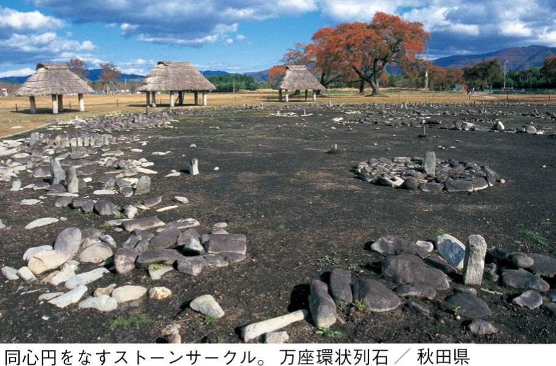
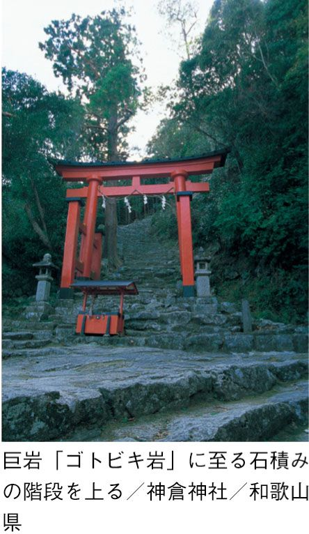
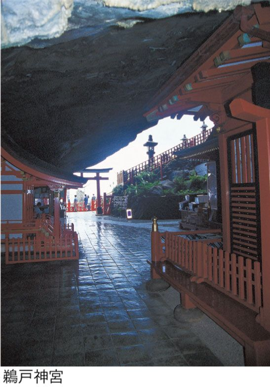
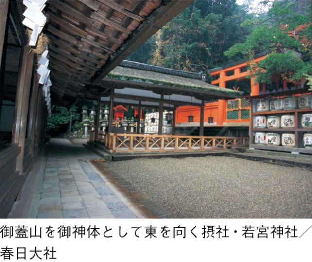

| 神社霊場 ルーツをめぐる | |
| 武澤 秀一 | |
| (2009) | |
初詣の雑踏で
明治神宮（東京）、成田山新勝寺（千葉）、川崎大師（神奈川）、伏見稲荷（京都）、鶴岡八幡宮（神奈川）、浅草寺（東京）、住吉大社（大阪）、熱田神宮（愛知）、大宮氷川神社（埼玉）、太宰府天満宮（福岡）......。
初詣の参拝数で全国のトップテンに名を連ねる常連の神社仏閣である。
例年、全国で最高の参拝者数を記録するのが明治神宮だ。明治天皇をまつる神社である。御利益については開運招福、厄除け、学業成就のほか、皇后が合祀されていることから、縁結び、子授け、家内安全などもある。
二位、三位をしめる成田山新勝寺、川崎大師は仏寺である。いずれも弘法大師空海が開いた真言宗に属す。御利益は開運招福、商売繁盛、交通安全、厄除け......とわれわれ庶民のほとんどの願望を、弘法大師が引き受けてくれるのである。参拝者数でこれにつづく伏見稲荷、鶴岡八幡宮、住吉大社、熱田神宮などの古社も、開運招福、家内安全、商売繁盛、交通安全、学業成就、縁結び、厄除けと御利益が盛り沢山だ。また、初詣客のなかには「音がするようでは、御利益はない」とのたもう御仁もいる。賽銭は札でなければ、というのである。そうなるともう、神社仏閣は現世御利益の総合商社の観を呈することになる。
〝大いなるもの〟に包まれたい
なにげなくつけた正月のテレビ番組で印象にのこる言葉があった。〝世界の〟北野武監督が伊勢神宮を参拝した後、つぎのような意味のことを語っていた。
「なにか大きな、宇宙的なものを感じて、個人的なことをお願いしちゃいけないような気がした」
ふと、思う。参拝とは元来、有名な神社であろうとなかろうと、現世御利益にとどまらない、なにかもっと〝大きなもの〟に触れることなのではなかったか？
そもそも神仏に手を合わせるとは、どういうことなのだろう？
神仏に手を合わせるとき、なにか〝大いなるもの〟に包まれているという感覚が、たとえ微かにせよ、生まれているように思う。おそらく、いにしえにおいては、それはもっと確かな感覚であったろう。そこには〝大いなるもの〟との厳かな出会いがあったと思うのである。今日では、参拝本来の目的や、手を合わせて神仏を拝することの意味がなかなか見えにくくなっているのではないだろうか。
神と仏の棲み分け
〝大いなるもの〟にも歴史がある。それを担ってきたのが神社とお寺だ。
神社とお寺はどう違うのか？
そもそも、神と仏はどう違うのか？
神社では死はケガレとされ遠ざけられる。一方、お寺ではそのようなことはなく、葬地はお寺に付属する。
元来、祖霊をまつるには葬地でおこなうのが自然だった。じっさい、旧習をのこす地域では葬地が祭場であったことが確認できるという。仏教が入って来る前、そして神社神道が全国を席巻する前は、葬地で祭祀がおこなわれていたのである。
平安時代になると朝廷は神まつりにおいてケガレの忌避を強調しだした。それはケガレの対極としての清浄なる天皇像を強調し、確立することを意図したのだろう。そして死の問題はお寺が担うこととなった。
こうしてお寺と神社の棲み分けがなされていく。
それは、神の宮（＝神宮）、神の社（＝神社）が全国的に整備されてゆく過程でもあった。だが、神まつりの場から死が排除されたことは、それまでの民俗信仰や風習を大きく塗り替える事態であった。
日本の神はインドの仏か？
死のケガレを契機としてお寺と神社の棲み分けがなされると同時に、神仏の習合もまた進んだ。それは一見矛盾するように見えるが、お互いの性格や存立基盤を補強するためであれば、積極的に相手の要素を取り込んだり、部分的に融合したりしたのである。結果的に神仏は共存共栄の途を歩んだ。
神社神道は死を遠ざけることによって清浄さを獲得したが、そのかわり、避けて通れないはずの死の問題から目をそらしてしまった。いわば現実からの逃避である。この点をお寺が担うこととなり、これにより仏教の基盤は強固になった。
また『古事記』や『日本書紀』にもとづく天皇神話は神々の系譜を織り上げ、天皇の正統性を謳い上げた。だがそれは物語に終始していた。
その点、仏教には〝この世〟と〝あの世〟を関係づける論理の体系があった。そのため、神仏習合において神と仏は同等ではなく、あくまで仏が主体となった。
つまり、インドの仏が姿を変え、日本の地に神となってあらわれたとするのである（これを「本地垂迹」という）。つまり、日本の神々はインドの仏たちの仮の姿（＝権現）ということになる。これにより神々の関係は仏どうしの関係に置き換えられ、神々の世界は仏教の体系によって統合されることとなった。
鳥居も社殿もなかった！
一方の仏教も、列島在来の祖霊信仰を受け入れたことによって、さらに変容した。平安時代以降、仏教が列島に根を下ろしてゆくうちに土壌に馴染み、日本仏教特有の性格を帯びるようになった。たとえば、山も川も草も木も、みな成仏するという信仰が一世を風靡したが、これなどはインド仏教にはもともとない発想である。
その源泉は中国とみられるが、一切の前提抜きに〝この世〟のものはすべて悟りの境地をあらわしていると直感的にいいきってしまう点では、中国ともやはり違う。そこには縄文時代以来、日本列島に根づいていた、森羅万象のすべてに霊・魂を見いだす精神性が色濃く反映されている。
自然界における神秘な現象、神秘な存在――。
畏れ、おののき、ひれ伏し、祈り、感謝を捧げ、わが身を預ける......、その対象が霊（＝魂）であった。それらは最初から、神としてあらわれたのではなかった。霊・魂が長い時間をへて変成を遂げ、やがて神と呼ばれるようになる。そして神々は、それぞれの名前を得たのであった。
原始、霊・魂がまつられたとき、そこには鳥居も社殿もなかったのである。これについては各地の神社霊場を探訪するなかで詳しく述べたい。
あなたは神と仏を区別しているだろうか？
長かった神仏習合の時代もやがて終わりを迎える。明治時代になると神仏分離令が出され、その徹底が図られた。欧米の列強に伍すべく国威発揚のため、国家神道を確立しようとするものだった。廃仏毀釈の嵐が吹き荒れ、神社内にあった多くのお寺（＝神宮寺）や仏像が破壊され、一部の優れた仏像は海外に流出した。以後、神社か寺か、ありようの曖昧さは許されず、その点は現在も同じだ。
だが、人びとの心のなかでは、神社とお寺はどこかでつながっているようである。大勢の人びとが初詣に出かける先は、神社もお寺も両方あり、なのである。
神仏に祈る......。
そのとき、あなたは神と仏を区別しているだろうか？
かつて人びとが体験していた〝大いなるもの〟に触れ、厳かな感動を得るには、神仏のはじまり、そして信仰の本来のすがたに出会うしかないと思うのである。
さあ、〝大いなるもの〟との出会いをもとめて、ともに旅に出よう。
神社霊場のルーツをさぐる旅へ――。
目 次
とくに断りのない掲載写真は著者撮影によるものです。
神社とはなにか？
お寺とどう違うのか？
そして霊場とは？
それを大上段にかざして語りたいとは思わない。列島各地の神社霊場を訪れるなかでおのずと見えてくるものに期待したいというのが本書の立場である。だが、とりあげる対象やテーマに戸惑いを覚える読者もおられるかと思うので、アウトラインだけでも最初に触れておきたい。
祖霊をまつる
避けて通れないひとの死――。他者の死に生者はどう向き合ってきたのだろう。まつること、祈ることのひとつのはじまりがここにありそうだ。
死者の霊は最初、まだケガレを帯びていて周囲に厄災を及ぼしかねないが、まつられることにより日々浄化されてゆき、やがて三十三回忌をへて「先祖という一つの力強い霊体に融け込」む（柳田國男）。つまり、「一定の年月を過ぎると、祖霊は個性を棄てて融合して一体になる」（同前）。
人格を喪失した祖霊、これが神となる......。祖霊神、祖先神である。祖霊は人里近くの山中、あるいは見遥かす海上の彼方など、自然界にひそんでいる。いつしか祖霊であることを脱却して普遍的な霊魂になり、時折り、あるいは定期的に人前にあらわれる（柳田の弟子であり、かつ民俗学のもう一方の雄、折口信夫はこれを「まれびと」と呼んだ）。
こうした祖霊をまつる民俗信仰は列島各地にひろくみられるが、インドに生まれた仏教にはない。祖霊をまつって重んじるのは、中国東部、台湾、朝鮮半島、日本列島からなる東アジア特有の宗教感情といわれる。インドに発した仏教はこの地域にいたるや、土着の根づよい祖霊信仰の影響をもろに受け、大きく変容したのだった。それは仏教というよりは、仏教と習合した在来信仰というべきものである。
霊が神となる......
仏教が入ってくる以前、古くから列島には石を積んで死者の霊をとむらう風習があった。これが今日まで連綿とつづいているのである。日本特有ともいわれるこの風習は、もともとは縄文遺跡にみるような、墓に長い石を立てることから発しているのかもしれない（第Ⅱ部大湯環状列石を参照）。石を立てることは、今日一般的に見る墓石のスタイルにも通じよう。
不思議なことに、石に死者の霊はなんの抵抗もなく重なるようだ。今日でも墓石に手を合わせるとき、ひとは意識せずとも死者の霊と向き合っている。それが日本列島における霊（＝魂、玉）のはたらき、いいかえれば、列島に生きる人びとの心のはたらきであった。「日本の信仰には、どうしても、一種不思議な霊的な作用を具へた、魂の信仰があつた」（折口信夫）のであり、霊がやがて神にもなる。
霊の在り処は、もちろん、石にかぎらない。
土地にも霊があった。それを国魂と呼ぶ。
木にも霊が宿る。それを木霊という。
食せば活力源となる稲にも霊がある。稲霊である。
そして、発せられた言葉にも霊が宿る。言霊である。
いにしえの人びとは霊を魂（＝霊）と呼び、それは姿かたちをもたず、目に見えないものであった。そして、祖霊や物の怪（＝妖怪）、生命の誕生や超常的と映る自然現象など、森羅万象にひそむなにか得体の知れない力、それが神となった。畏れおののかせるものはすべて神だったのである。
つまり、「可畏き物を迦微とは云なり」（本居宣長）。日本において神は善悪以前の存在であった。神社霊場を探訪する本書の旅において、これが重要なポイントになる。
森羅万象、万物にひそむ超自然的な気配を霊（＝魂）と呼び、それがあらわれる時、人びとは神の存在を感じてきた。
風になった霊
風もまた不思議な現象だった。かつて風は妖怪であり、死霊でもあった。そして風の道筋に沿って霊がやって来るとも信じられた。
風は見えない。しかしだれしも風というものを知っている。散る花、枝や葉のふるえ、そして肌身をとおして――。
風が霊となって生者に語りかける歌が近年、大ヒットしたことは記憶に新しい（新井満訳詞）。
わたしのお墓の前で
泣かないでください
そこにわたしはいません
眠ってなんかいません
千の、千の風になって
あの大きな空を吹き渡っています
故人の霊と風が見事にむすびついていると思うのである。もともとこれは日本の歌ではないが、日本人の心の琴線に触れたからこそ、爆発的にひろまったのだろう。ひとは無意識のうちにも、自然界と故人の霊はどこかでつながっていると感じているのではないだろうか。
人びとの祈りが向かったのは優美な山、あるいは特異な形状を見せる山であった。人里から望むことのできるかたちの整った山を神奈備山（神南備とも）と呼び、神のいます山として崇めた。後世、神体山とも呼ぶ。そのよく知られた例として、大和国一の宮大神神社（奈良県）がまつる三輪山、春日大社摂社若宮神社（奈良県）がまつる御蓋山などがあげられる。第Ⅳ部でこれらを訪れよう。
また、巨樹・巨木は世界を覆う巨大な〝傘〟として崇められた。『古事記』や『日本書紀』に巨樹讃歌がよく出てくる。一例をあげれば、
立ちしげる百枝の槻の木の、上なる枝は天をおおい、中なる枝は東の国をおおい、下なる枝は鄙をおおう、その上の枝の葉は中の枝に落ちてふれ、中の枝の葉は下の枝に落ちてふれ......
大和王権の中心地、纏向の宮廷にそそり立つケヤキの巨木をこう描写しているのである（石川淳『新釈古事記』）。まさに巨樹が世界の輪郭を示すのであった。
祭りにおいては枝葉を落として柱を立てる。第Ⅳ部で訪れることになる信濃国一の宮諏訪大社（長野県）の御柱祭が有名だが、縄文時代以来の伝統を今に伝えていて貴重だ。これほど高い柱ではないものの、かつては東北地方や関東地方など、広い地域で柱を立てる祭りが見られた（柳田國男）。その根底には樹木信仰があったのである。
また、本書第Ⅲ部で最初にとりあげる出雲大社（島根県）については近年、直径一メートルあまりの円柱三本からなる束ね柱が発掘されて話題を呼んでいる。これにより、この地にとてつもないスケールの巨木文化があったことが実証された。
ところで複数の神々を数えるとき、一柱、二柱、......という。こんなところにも柱を神とみなす思考が反映しているのである。
奇岩・巨岩
奇岩や巨岩が露出する所は、神が立ちあらわれる場所と信じられた。それはイワクラ（磐座）、あるいはイワサカ（磐境）と呼ばれる。厳密なものではないが、神の座として個々の岩に注目するときは磐座、集合体としての岩々に注目すれば磐境となる。
しばしば、ヨーロッパは〝石の文化〟であり、これにたいして日本は〝木の文化〟であるといわれる。それはそのとおりだが古来、石に生命力を見いだしてきた日本の精神性は、見落とすことのできない、卓越した〝もうひとつの〟石の文化といえる。
そのことを熊野速玉大社摂社神倉神社（和歌山県）、西国三十三所観音霊場の第十三番札所石山寺（滋賀県）、ローカルな存在だがきわめてユニークな生石神社［石の宝殿］（兵庫県）などをとおして見てみたいと思う。
世界遺産に単独で登録された唯一の神社である安芸国一の宮厳島神社（広島県）は、島を御神体とすることで知られる。島の最高峰である弥山山頂付近には壮絶な磐境がひろがっている。それは神の仕業としか思えない、迫力ある磐境だ。
本書ではそれらの磐座や磐境を訪れ、絵葉書などからは伝わってこない石の霊力に触れ、記述を試みたい。
太陽と水
太陽と水の存在は〝この世〟の生命を保証し、土地の豊饒を約束する。いうまでもなく、それらが欠ければ生命も実りもない。
しかしながら一方、日照りや渇水、あるいは大雨や台風などに見舞われると、それはまた生命の危機をもたらす。太陽、風、雷など天候をつかさどる神々と関係をとりむすび、うまく付き合うことは死者の霊を鎮めることと同じくらい切実な問題であった。
太陽神アマテラスを天皇家の祖先神としてまつるのが第Ⅲ部で訪れる伊勢神宮（三重県）である。社殿は弥生時代の稲倉を洗練・発展させたものとみられ、稲倉には太陽エネルギーの結実としての稲霊がまつられていた。
そもそも、日々繰りかえされる日の出や日の入りじたいが不思議な現象であった。とくに日が昇る東方は希望を湧き立たせる方角だった。また、とくに夏至や冬至における日の出、日の入りの太陽は祭祀の対象となった。
その原初の営みは遥か縄文遺跡にたどることができる。そこに見てとれる精神性は、以降の長い歴史をへて、今もなお神社霊場信仰の底流にあるといえる。第Ⅱ部で、祈りの原風景ともいうべき代表的な縄文遺跡として、三内丸山遺跡（青森県）と大湯環状列石（秋田県）を探訪する。
雷とは神鳴りであり、神の声が鳴り響いている状態である。そして轟音とともに大量の雨をもたらす。それはまた稲つるび、稲妻といわれ、神が稲を妻として交合する姿でもあった。雷神をまつるきわめてユニークな神社として上野国一の宮貫前神社（群馬県）を第Ⅳ部で訪れたい。
そして、山を水源として田畑を潤し、海にそそぐ川も尊ばれた。それはまた舟運を保証する、欠くことのできない交通路でもあった。
なかでも川と川の合流点や川中島、そして海との接点つまり河口は特別の場所となる。その格好の例として上賀茂神社（京都府）、かつての熊野本宮、熊野新宮・速玉大社（和歌山県）などがあげられる。
また、流れが断崖と遭遇して落下する滝は讃仰の的となる。そこはまた山伏（修験者）たちの厳しい修行の場ともなった。熊野那智大社別宮飛瀧神社（和歌山県）はその代表的な例である。そこでおこなわれる扇祭り（近年では「火祭り」と呼ぶことが多い）では、太陽と水のまぐわいが演じられる。
神をまつる場――野外祭祀と屋内祭祀
神が立ちあらわれる自然のなかの特別な場所――。
当然、そこで神まつり（＝祭祀）がおこなわれることになる。その場所（＝祭場）が発生した当初、建物はなかったとみられる場合が多い。
やがて集落の衰退とともに廃れてゆく祭場もあれば、他方で建物をもつようになるものもあった。
現代から見て意外かもしれないが、葬地でも神まつりがおこなわれていた。そこから神社や霊場となるものもあった。古墳に建つ神社はその顕著な例であるし、また第Ⅳ部で紹介する高野山奥の院参道のように、葬地が霊場としての性格をつよめている場合もある。
また、沖縄の御嶽はかつて葬地であった場合が多いとみられる。世界遺産に登録された斎場御嶽から久高島（沖縄県）を旅の最後に訪れるが、そこには仏教が伝来する以前からの祈りがいまなお息づいており感動的である。
さまざまなかたちで執りおこなわれる野外祭祀に並行して、屋内でも祭祀はおこなわれていた（祭殿）。こうした建物の系譜をひいて、神社となるものがあった。出雲大社や摂津国一の宮住吉大社（大阪府）に代表される住居ないし祭殿系の神社がこれにあたる。
神社というものは平地に建っているもの以外は、だいたい階段を上ってお参りする。ところが、本殿まで階段を下りてゆく神社がある。そうした珍しい例として、さきに触れた貫前神社、そして鵜戸神宮（宮崎県）がある。前者は尾根から谷側に下り、後者は海に面した洞窟に向かって下る。第Ⅳ部で探訪するが、いずれも一方的に下るのみだ。その挙げ句、思いもよらぬ転換が待ち受けているのである！
見えない神をまつるには
かたちのない神をまつりたい。
見えない神をまつるにはどうすればよいのか？
その取っ掛かり、よすががほしい......。
それには、目に見えるものに置き換える必要がある。見えない神は、どのように形象化されるのか？
姿かたちをもたない神が一時的に依り憑く形あるもの、それを依り代と呼ぶ。やがてそれは神そのものであるかのように見なされるようになり、御神体と崇められる。
御神体には、神のいます山（＝神奈備山など）や岩（＝磐座、磐境）、樹木（＝御神木）や柱（＝御柱）、流れる水や湧き出す水（＝聖水）、落下する水（＝滝）、そして鏡（＝神鏡）、刀剣（＝神剣）、玉（魂と同じ語源）など、さまざまある。御神体を祭祀の対象として、それをまつる場所（＝祭場）や建物（＝祭殿・神殿）が設けられるようになる。
たとえば、稲霊をまつる場合
稲霊をまつる場合を例として見てみよう。それは稲作を特質とする弥生文化の精華である。
『日本書紀』では本文とは別に、「一書に曰く」というかたちで諸説が記されるが、それによると、イザナギとイザナミが飢えてひもじかった時、二神のあいだにウカノミタマノミコトという御子神が生まれた。ウカ（食）とは食べ物を意味し、とくに稲を指す。したがって、ウカノミタマノミコトとは食物ないしは稲の魂の神であるが、これは倉稲魂命と表記される。ここからわかるように、それは倉に収蔵された稲の魂であり、稲霊と稲倉が密接にむすびついていたことがわかる。
また、この話とは別に『古事記』には、イザナギが娘のアマテラスに高天原の統治を命ずるにさいし、首飾りを授けるくだりがある。その首飾りは「御倉棚挙の神」と呼ばれるが、この場合、倉とは稲倉を指し、したがってこの「御倉棚挙の神」がまつられるのは、稲倉の棚の上であった（西田長男・三橋健）。
つまり、この首飾りは稲霊の御神体なのであった。このことから、これを安置する稲倉は、稲霊をまつる神殿の意味を担っていたことがわかる。
ただし、この稲倉が今日われわれのいう「神社」といえるかどうかは微妙で、むしろ神話における神殿とみなすべきだろう。また、すべての稲倉が神殿となるわけではない。
弥生時代から伝わる稲倉をベースとし、それを洗練・発展させた神社建築として伊勢神宮がある。ただし、御神体は鏡とされた。一方、神まつりをおこなう豪族首長の居館が発展して神社となったのが出雲大社であった（出雲大社と伊勢神宮は第Ⅲ部でまとめて述べよう）。
仏像と御神体
六世紀の半ばころ、朝鮮半島の百済から大和王権に、鍍金された光り輝く一体の釈迦像が届けられた。これを見た天皇（当時はこの呼称はなく、大王）はつぎのようにいわれたという（『日本書紀』）。
「仏の相貌、端厳し。全ら未だ曾て有ず」
「きらぎらし」とは、端麗・端正の意味で、仏典に出てくる表現だが、つぎにつづく「全ら未だ曾て有ず」と併せて、仏像にはじめて出会った時の衝撃をよく物語っている。当時、仏を「蕃神」、つまり「他国の神」と呼んでいた。これを受け入れると、在来の神々が嫉妬して怒り出すのではないかと大真面目に心配したのだった。
仏は人間のかたちをした神として受け止められた。その衝撃は大きかったが、日本在来の神が人間のかたちをとることは一般化しなかった。お寺に行ってそこに仏像がないのは考えられないが、神社には神鏡など御神体はあっても、神像があることは珍しい。熊野速玉大社の神像は、数少ない例のひとつである。
大事なものは見えない、見えないからこそ大事なのだという感覚が根づよくある。日本の神は身体をもたないのである。それがいい過ぎなら、肉体性が希薄といいかえればいいだろうか。
神社は意外と新しい？
やがて『古事記』や『日本書紀』にみられる天皇神話が成立するにともない、多様であった祭祀のための施設は天皇を中心とする祭政一致の秩序のなかに位置づけられ、神社として整備されてゆく。
今日、神社と呼ばれているものの多くは、『古事記』や『日本書紀』が伝える天皇神話となんらかのかたちでつながっている。社伝などを見ると、なかにはずいぶん無理して関係づけている場合もある。
天皇という呼称じたい、じつは『古事記』や『日本書紀』の編纂がはじまった七世紀後半の天武、持統の時代になってあらわれたものである。多くの神社は、そのころ以降に生まれたのである。すでにあった祭祀施設の場合は、あらためて神社として再スタートを切ったとみられる。
したがって、神社というものの成立は意外に新しいのである。
しかし、列島における信仰生活は縄文時代から弥生時代をへて変容をかさね、多様性をたもちつつ連綿とつづいてある。心の歴史は神社の歴史よりはるかに古いのである。
そうした在来の信仰を、天皇神話にもとづいて整理しなおし、神社が誕生したといって大過ないと思われる。神社として整備される過程において、それまでの信仰が変容したり、あるいは消えたりしてしまった場合もあったとみられる。
社殿と伽藍
仏教伝来にともない、伽藍の建立があい次いだ。これに刺激され、各地の祭祀施設はすでにあったものを含め、神社として整備されていったとみられる。
さて、伽藍と社殿はどう違うのか？
旅のみやげ話を聞かされて、そこはお寺か、神社か聞いてみると、はて、どっちだったかと首をかしげるひともいる。記憶のなかで神社とお寺にあまり違いはないようだ。
鬱蒼とした森に包まれた境内、そこに佇むだけで、もう十分に満たされてしまうのである。それは至福の経験であり、なにも付け足す必要はないのだが、これからの旅の充実のために予備知識を少々――。
伽藍において本尊仏を安置するのが本堂である。古くは金堂といい、中堂ともいった。本堂に対応するのが、神鏡など御神体を安置する本殿である（伊勢神宮では正殿と呼ぶ）。また本殿（正殿）につぐものとして宝物を納める宝殿がある。その例はあまり多くはないが、伊勢神宮、諏訪大社などに見られる。
ただし神社の場合、多くは山や岩、樹木、滝など自然そのものを御神体とすることからはじまっているので、そうした原初の信仰形態をのこしている神社では本殿がない。第Ⅳ部ではその例として、大神神社、諏訪大社、神倉神社、飛瀧神社、生石神社［石の宝殿］などを探訪する（諏訪大社は事情が複雑で、これについては第Ⅳ部にゆずる）。また生石神社では削り出された巨大な石を御神体とし、これを石の宝殿と呼んでいる。それは宝物を納める社殿というよりは、巨大な石じたいを宝殿と呼ぶ、特殊な例である。
伽藍にくらべて、社殿は概して小さい。その理由としてまず思いつくのは、社殿に安置する神鏡や宝刀などの御神体が仏像にくらべて小さいことだろう。
そして多くの場合、本殿のなかにひとが入ることはない。ひとが入って拝むための社殿が拝殿である。本殿をもたない神社の例を今あげたが、それらのうち、拝殿をもつものとして大神神社、諏訪大社、生石神社［石の宝殿］などをあげることができる。さらに拝殿もなく、鳥居が立つだけの神社の代表例として飛瀧神社がある。
逆に、本殿（正殿）はあるが拝殿はないのが伊勢神宮だ。庭上祭祀といって、砂利の敷かれた地面に跪き、外から拝するのである。こうした祭祀のありかたは祈りの原初の形態をのこしているとみられ、春日大社などでもおこなわれている。
本殿が小ぶりなのは、本殿に対して祭祀が外からおこなわれるということ、そして、もともと神社に本殿はないことが多かったという事情に由来しよう。
だが、出雲大社のように巨大な、それも著しく高く持ち上げられた本殿をもつものもあるから、一筋縄ではいかない。第Ⅲ部で詳述するが、これは屋内で祭祀をおこなっていた豪族居館から発展したと考えられており、なお屋内祭祀の性格をのこしている。
もっとも歴史を振りかえれば、神社とお寺はそう明確に分けられず、融合していた関係にあった。平安時代中期以降、多くの神社に神宮寺が併設され、神社に仏塔が建つのは珍しくなかったのである。天皇家の祖先神をまつる、あの伊勢神宮でさえ、内宮は胎蔵界マンダラ、外宮は金剛界マンダラと喧伝された時代があった（マンダラについては拙著『マンダラの謎を解く』）。
神社とお寺が別世界になったのは「旅のはじまり」で触れたように、明治初めの神仏分離令による。このとき全国各地で廃仏毀釈の嵐が吹き荒れ、神宮寺のほとんどが姿を消した。神仏習合の信仰のながれがせき止められたのであった。神社とお寺をはっきりと分ける現在の状況は、じつは明治政府がもたらした政治的な所産である。その枠組みのなかに、今もわれわれはどっぷりつかっていることを念頭に置いておこう。
神社には鳥居がある。だれもが気づく目印だ。そこをくぐると、どこか厳粛な気持ちになる。俗なる世間から清浄な空間に足を踏み入れたからであるが、そんな説明は日本人なら必要ない。
一の鳥居、二の鳥居、三の鳥居......とつぎつぎにあらわれる鳥居。ひとつひとつ通過するごとに空間は奥まり、神聖さが増してゆく。
これにたいしお寺の場合は南大門や中門、あるいは山門（三門）と呼ばれる門がある。役割は門でも、建物といいたくなるような、たいそう立派なものである。神社にも楼門と呼ばれる、屋根のついた二層の豪勢な門が立つことがあるが、これはお寺の影響を受けたもの。ただし、この場合でも楼門の手前に鳥居が立つのがふつうである。
神社のシンボルともいえる鳥居だが、じつはその起源はよくわかっていない。
しかし、そう古くからあったわけではないようだ。現存最古と認められるのは平安後期、十二世紀初めの石造りの鳥居だ。文献上で確認できる初出は平安中期、十世紀前半という。
なお平安初期の九世紀初めに、伊勢神宮内宮から朝廷に提出された『皇太神宮儀式帳』には、「於不葺御門」という表現が見られる。屋根のない門という意味だが、これが鳥居を指しているとすれば、このころはまだ鳥居という語が生まれていなかったのかもしれない。
神社とすぐわかる特徴の二番目は、屋根の棟に載る千木と堅魚木だろう。
千木とは、切妻屋根の端部を固定する斜めの材（破風）が棟で交叉してそのまま突出するものをいう。もともとは交叉部を縄などでしばって固定していたので、突き出させる必要があった。工法が進んでその必要がなくなっても、装飾性や象徴性のゆえに千木は神社で重用された。
伊勢神宮の千木は茅葺き屋根を内側からつらぬき、空に向かって突き出ている。千木とは本来そういうものだ。茅葺きの場合、積み上げた茅の厚い層で雨水を吸収するので、千木が茅を突き破っても雨漏りは防げるわけだ。
ところが、檜皮葺き（後述）や近年よく見られる金属板葺き（銅板やカラー鉄板）などの場合、千木が屋根葺き材をつらぬいては雨漏りを起こしてしまう。それで多くの神社では、後から、千木に似せてＸ状に組み合わせた材を棟に股がるように載せる。これを「置き千木」という。後から取って付けたように見えてしまうが、実際そうなのである。
千木とともにもちいられる特徴的なものに堅魚木がある。
堅魚木とは、屋根の棟に直交して規則的に並べ置かれる太めの丸い材木をいう。もともとは、棟の部分に葺いた茅が風で吹き飛ばされないよう棟を抑える、いわば重しの役割があった。工法が改良されてその必要がなくなっても、千木と同様、その装飾性から神社で重用されている。
『古事記』の雄略天皇の段には、屋根に堅魚木を載せた豪族居館を見た天皇が、勝手に天皇の宮殿（＝御舎）に似せて造ったと激怒する話がある。雄略天皇はワカタケルの名をもつ、五世紀後半の大王である。
装飾としての千木と堅魚木は当時、天皇（当時は天皇という呼称はなく、大王）の住む宮殿のシンボルだったのだろう。やがてそれが神の宮、つまり神宮・神社にもちいられるようになったとみられる。千木と堅魚木はお寺にはなく、神社建築を特徴づける決定的な要素となっている。
軽い屋根と重い屋根
神社とお寺を分ける特徴の三番目として屋根材をあげよう。
お寺の屋根はほとんどが重く堂々とした瓦屋根だ。少数ながら檜皮葺きもあり、また近年では金属板葺きも見られるが、瓦が主流であることに間違いない。これが長い伝統である。
ところが神社では、茅葺き屋根、檜皮葺き（ヒノキの樹皮を葺くものをいうが、スギの場合もある）など植物系材料が主流で、近年では金属板葺きも多い。総じて軽くやわらかい印象が好まれる。
もっとも瓦屋根の神社も見かけるが、これはお寺の影響といっていい。もはや植物系材料が入手困難であること、そして耐久性・耐火性を考慮してのことだろう。
なぜこうした違いがでてくるのか。
伽藍の歴史において瓦は重要な役割をもっている。瓦という屋根葺き材は、もともと日本にはなかった。それは仏教伝来にともない、仏像や伽藍建立の技術とともにやって来たのである。『日本書紀』には、わが国初の仏教伽藍である飛鳥寺を建立するために、百済から「瓦博士」が来たと書かれている。
当時の仏教は技術や技能をともなう最先端の文明体系であり、瓦はその華であった。このような事情から、瓦はお寺とセットでむすびついていたのである。仏教伝来の前から列島在来の神をまつる立場からすれば、「国神」を守るためにも「蕃神」とむすびついた瓦の使用を避けるのは自然な感情だったろう。その後、「国神」と「蕃神」は近づき重なるのだが、瓦の使用については区分けが長くつづいた。
竪穴住居の屋根は別として、木造高床建物においてもっとも単純な屋根形式は、両側に雨水を流す切妻である。そして弥生・古墳時代のころは、妻側の面に入口をもつ「妻入り」が高床建物の基本だったとみられる（「切妻・妻入り」）。とくに弥生時代の土器や銅鐸などに描かれた建物の多くがそうなっている。
屋根の頂部を通る水平材を棟木というが、これを支持する柱（＝棟持ち柱）が妻面の中央に立つ。棟木の妻面からの〝出〟が大きくなると、これを支えるために独立の棟持ち柱（第Ⅲ部住居が神社になったの図を参照）が立つことになる。妻側に屋根を出すことは技術的にも比較的容易であり、また、建物として正面の顔をつくりやすくもある。妻側入口の上に十分に屋根が出ていれば、雨が吹き込みにくいという利点もある。入口にわざわざ庇を付けるといった細工は当時の技術ではやっかいなことだった。
このようなことから、切妻の建物には妻入りが自然であり、妻面の真ん中に柱が立つのもきわめて自然な道理だった。このオーソドックスな形式を出雲大社は踏襲している。
一方、六世紀末以降に大陸から入って来た伽藍の多くは入母屋造りか寄棟造りで、ほとんどが長辺側に入口をもつ「平入り」であった。もちろん、日本にも寄棟や入母屋の茅葺き屋根はあったが、当時は切妻のほうが格上と思われていた（太田博太郎）。おそらく寄棟や入母屋は竪穴住居の屋根に近いという感覚があったのだろう。
そうした事情もあり、神社に寄棟造りが及ぶことはなかった。入母屋造りの神社は散見されるが、それはずっと後世に導入されたもの。神社建築の基本は切妻であり、そして「妻入り」だった。出雲大社や住吉大社の本殿が、そのよい例である（それぞれ、「大社造り」、「住吉造り」と呼ばれる）。総じて神社建築は伝統遵守の傾向がつよいのである。出雲大社と住吉大社は古い神社の造りをのこしていて、国宝に指定されている。
さまざまなバリエーション
これにたいし、同じ切妻だが、平入りの本殿が生まれた。それが神社の筆頭に位置する伊勢神宮である。伽藍建築においては今述べたように、平入りが原則であるが、これを神社に採り入れたのだった。
神社建築として切妻屋根の伝統を踏襲しつつ、それまでの神社建築のありかたとの差別化を図ったとみられるのである（伊勢神宮が後発であったことについては第Ⅲ部を参照）。皇祖神をまつる最高位の神社として、すでにある神社の後塵を拝するわけにはいかなかったのだろう。なお伊勢神宮の造りを「唯一神明造り」と呼ぶ。
つぎに、その後に生まれた代表的なタイプを見ておこう。
反りをもつ切妻屋根の妻側に、切妻屋根と連続させて新たに庇（向拝）を取り付ける。その結果、屋根は入母屋に近い表情を見せることになる。春日大社が代表的なので、これを「春日造り」という。この本殿は世界遺産に登録され、また国宝にもなっている。円成寺にある春日堂・白山堂（奈良県）は、規模が小さいが――というか、小さいがゆえに――「春日造り」の原型と目され、これも国宝に指定されている。

神社の本殿にはいくつかのバリエーションがあるが、もっとも数多く見られるのが「流造り」である。これも同じく反りをもつ切妻屋根だが平入りとし、そのまま屋根を手前に延長させて向拝とする。代表例として宇治上神社、上賀茂神社、下鴨神社の本殿があげられる。いずれも世界遺産に登録されている。
なお切妻・平入りの屋根を二つ前後に連ねて一棟としたものに「八幡造り」がある。その代表例として国宝指定の宇佐八幡宮（大分県）がある。
また本殿と拝殿が合体して一棟を形成する場合がある。「権現造り」と呼ばれるもので、両者のあいだには「石の間」がある。この部分はかつては、建物の〝外部〟であったとみられる。つまり、独立していた拝殿と本殿を石の間で結合した造りになっている。
そして、本殿は伽藍の本堂と同じように内陣のまわりを回れる造りとなっている。内陣とは、本尊仏あるいは御神体をまつる空間を指す。そもそも回るという礼拝作法は仏教から入ったもので、まさに神仏習合が生み出した造りである。この造りのものとして北野天満宮（京都府）、大崎八幡宮（宮城県）などがあげられ、いずれも国宝に指定されている。
霊場とお寺
今日、霊場というと多くの場合、お寺が管理している。したがって、霊場は仏教とのつながりが色濃くなるが、それは「旅のはじまり」で見た神社とお寺の〝棲み分け〟の結果といえよう。古来の民俗信仰や風習において、死者の霊をまつることはとくに重要視されていた。そしてさきに述べたように、死者の霊は山や海に還り、山の霊、岩の霊、水の霊、風の霊など、自然界の森羅万象にひそむ霊と融合してゆく。
だが、神社神道はケガレの忌避を強調し、死者の霊を追いやってしまったのだった（一方、祟りを畏れて神社に怨霊をまつったりするのは、止むに止まれぬご都合主義か。たとえば菅原道真をまつる北野天満宮）。
行き場のなくなった死者の霊の受け皿となったのが寺であり、そのなかで民俗信仰を色濃くのこしているのが霊場といえるだろう。霊場は神も仏も受け入れる。もちろん死者の霊も......。そこは死者の霊が集まるところとも考えられていたのである。
霊場と神社
霊験あらたかな地、それが霊場とされる。そこは神仏があらわれる異界である。宗教的な奇跡が起こるとされ、切実な願いの成就が期待される。たとえば「霊力」を身につける、悟りをもとめる、死者の声を聞く......等々。死霊の集まる霊場の代表例として、三大霊場にもあげられる恐山（青森県）や高野山を第Ⅳ部で訪れたい。
霊場は、仏教的イメージに裏づけられて〝あの世〟を再現する。〝この世〟にありながら〝あの世〟を再現する霊場は、二つの世界の境界領域にある。その、もっとも霊場らしい霊場として恐山をあげることができる。
これまた訪れる予定にしている観音霊場石山寺のように、大仏建立に資するための金の産出を祈願し、見事金を掘りあてたことに由来する御利益のある霊場もある。
霊場は目をひく山岳、流れ落ちる滝や鬱蒼と茂る樹林、奇岩や巨岩、洞窟など、自然のなかでも特異な場所に開かれることが多い。〝この世〟ならぬ世界、すなわち〝あの世〟としての異界である。
一方、神社もそのような特別な場所に立地することが多かった。古い歴史をもつものに、とくにその傾向があるように見える。というか、社殿もない段階においては、そうした自然界における特異な物や場所や現象が、まずまつられたのだった（自然霊信仰＝アニミズム）。そのような時代がおそろしく長くつづいていたのである。
ルーツが重なる
前述したように、社殿が整備され、神社という制度が成立したのは七世紀後半以降とみられ、神社の歴史はかなり新しいとみるのがよいようだ。並行して『古事記』と『日本書紀』が天皇神話のもとに編纂され、その過程で神々のありようにかなりの変容があった。天皇神話の成立と軌を一にして整備された神社は当然、その影響下にあった。
したがって神社だけに終始してしまうと、列島に繰りひろげられてきた在来信仰の、ある一面しか見ないことになりかねない。小著とはいえ、そうした偏りは避けたい。そこで神社をメインとしつつも神社に限定することなく、お寺や霊場もめぐりながら、列島各地における神・仏・霊のさまざまなあらわれを探訪したいと思うのである。
じつは探訪の旅に出る前はわたし自身、「霊」ということばに拒否感をもっていた。今、こうして本書を執筆していることに不思議な感慨を抱いている。
なお、これまで祖霊とか自然霊ということばをもちいてきたが、それはあくまで便法であって、霊がそのようにはっきりと区分されるわけではない。それらは分かちがたく溶け合っているのであり、その点にこそ霊と呼ばれるものの特質があるとわたしは考えている。
さて、神社のルーツをたどると、そこにはもともと社殿がなかったことに気づくことが多い。そして社殿のない状態を想像すると、そこが霊場になっていても一向におかしくないのである。
神社と霊場はルーツが重なっているのではないか。もちろん、全部とはいわないけれど。
旅のなかで、そう思える場面に何度か出くわした。だから、本書では神社霊場を分け隔てなく見てゆきたいと思うのである。
神社のルーツを訪ねるとき、霊場やお寺が視野に入ってくるのはごく自然のながれであることをご理解いただけるだろうか。
祈りの原風景をもとめて
見渡せば、総じて神社には稲作儀礼にかかわるものが多い。春の種蒔き（のちに田植えに変わった）から秋の収穫にいたる種々の祭りが執りおこなわれるが、伊勢神宮に代表されるように、その底流には太陽信仰、稲霊信仰がある。この点からすると多くの場合、神社は弥生文化的な色彩が濃厚といえる。
しかしその前、一万年あまりつづいていた縄文時代の感性が時代が変わってぷっつり途切れたわけではない。確かに後に続く弥生文化は縄文文化の上にかぶさり、その後の列島の社会を主導したが、縄文的心性は社会の底流に深く静かに潜行しているとみるのが自然だ（たとえばその顕著な例として、第Ⅳ部で訪れる諏訪大社上社）。
信仰の原風景を縄文にもとめられないか。
神社霊場のルーツをもとめて、いよいよ旅に出る時がきたようだ。まずは葬地が祭祀の場であったことを、遥か縄文にたどろう。
列島における祈りの原風景をもとめて――。
巨大な柱穴
一九九二年からはじまった青森市の三内丸山遺跡の発掘調査によって、ここに列島最大規模の縄文集落があったことが判明した。三八ヘクタールにもわたるこの大集落は、紀元前三五〇〇年ころから前二〇〇〇年ころまで、千五百年もの長期にわたって営まれていた。時代的には縄文中期にあたる。
その中枢をなす広場から巨大な穴が二列にわたって三個ずつ、計六個見いだされた。穴の底には円柱にもちいられたと思われるクリ材が確認され、最大で直径が一メートルあまりもあった。これらの穴に柱を一本ずつ落としこんでいたのである。つまり直径一メートルの巨大な掘立て柱が二列にわたって三本ずつ、計六本立っていたのである。
これらの掘立て柱はどのような意味や役割を担っていたのだろうか。
日の出と日の入り、夏至と冬至
わたしが現地を訪れたのは一九九九年の晩秋、十一月も末のころだったが、東北でも北のこの地では風花が舞い、早くも冬の気配だった。これらの巨大な柱穴遺構は保存のためシェルターに覆われており、そこから平行移動して広場中央に、掘立て柱による壮大なモニュメントが想像復元されている。
まず注目されるのは、これら三本ずつ二列に立つ柱群の向きである。東西方向に並ぶ柱の列は、夏至の日の出の方角と冬至の日の入りの方角を結んだラインとほぼ正確に重なっているのである。したがって、巨大柱群は夏至の日の出、冬至の日の入りにかかわる祭祀に関係していたとみて間違いない。
これら柱群は集落最大のモニュメントであったとみられるので、そこでおこなわれていた祭祀は、この巨大な集落をあげてのものであったろう。柱群が指し示す方角に向って、すなわち夏至は日の昇る太陽に、冬至は日の沈む太陽に祈りがささげられていたのである。そういう儀式が集団でおこなわれていたにちがいない。
日が西に傾きかけたころ、モニュメントのライン上に立ってみた。なるほど、二列に並ぶ柱のあいだに見る見る太陽が沈んでゆく。
もちろん、冬至に近いとはいえその日ではない。擬似体験にすぎないけれど、このモニュメントが冬至の日の入りを意識して造られていることを実感した。
冬至は一年のうちでもっとも太陽のエネルギーが弱まる時だ。その日没は生命力の衰退、そして消滅の不安を抱かせる。人びとは柱列のあいだから冬至の落日に祈りをささげ、その力の再生を願ったことだろう。日の出、日の入りに手を合わせ、祈ることは日々おこなわれたろうが、とくに冬至の日の入りは、切実な思いであったのだろう。
冬至をへて太陽は徐々にパワーを回復して復活に向かう。やがてそのエネルギーが頂点に達して夏至となる。こうした一年のうちで特別な日、特別な時に、集団による祭祀がおこなわれていた。そのための施設として、巨大な掘立て柱のモニュメントがあったのである。
新生の祭祀
漆黒の闇の底が白みはじめ、東から光が射し込む時、世界は目に見えるものとして立ちあらわれる。一日のはじまりは、いつ見ても感動的だ。それは新生の時であり、毎日繰りかえされるものであってもなお、奇跡的な出来事と映ったのではなかったか。
太陽は東から昇る、とひとことでいうが、冬至―春分―夏至―秋分―冬至......と日の出の位置は変わる。一年のうち、夏至でもっとも北に寄り、冬至でもっとも南に寄る。そして、人びとはその位置によって季節の移り変わりを確認してきた。
巨大柱群の東側から、幼児の遺体を納めていたとみられる素焼きの甕が大量に出土した。すなわち、そこは子どもの墓だった。子どもたちは大人と区別されて埋葬されていたのである。これは何を意味しているのだろうか。
一年を通じ、昇る太陽は新生のエネルギーを死んだ幼子たちに照射し、再び誕生してくるための生命力を注ぎこんでいたのではないだろうか。
そして夏至の日の朝、闇をつらぬき、最強のパワーを放ちながら曙光が柱群のあいだを昇る。一年のうちでもっとも輝かしく世界が立ちあらわれる時だ。太陽はそのエネルギーを世界いっぱいに降り注ぎ、生命力を横溢させる。
巨大柱群はたんなるカレンダーの役目を担うだけではなかった。新生、つまり子を授かることを太陽の運行に重ね合わせ、種族の繁栄を祈る場でもあったと思われるのである。
つながっている〝この世〟と〝あの世〟
成人の墓は集落内にいくつかにわかれて分布しているが、なかでも関心をひくのは海にいたる道に沿ってつづく墓だ。それは土坑墓と呼ばれる細長い墓穴で（長さ一～二メートル、深さ三〇センチほど）、これが四二〇メートルにもわたって道の両側に短冊状に並んでいた。足を道のほうに向け、等間隔で葬られているのである。
朝、海へ漁に出るときも、そして夕方、漁から帰ってくるときも、道の両側に並ぶ先祖の墓のあいだを通るのである。朝な夕な、先祖の霊と対話をしていたのだろうか。当時の日常の感覚では、〝あの世〟と〝この世〟はつながっていたのであり、今日のように、死をケガレとして忌避する感覚はまったくなかったことがわかる。縄文の人びとのやさしさのあらわれだろうか。
こうしたことからも、さきの巨大柱群は太陽の運行に生命の再生を重ね合わせるモニュメントであったと思われるのである。
もっとも見事なストーンサークル
縄文時代の祭祀に注目したとき、もっとも興味深い遺跡のひとつとして秋田県北部の大湯環状列石があげられる。「環状列石」とは耳慣れないが、いわゆるストーンサークルだ。三内丸山につづいてこれを訪れよう。
秋田県にある大館駅と岩手県にある好摩駅を結ぶＪＲ花輪線に乗り、花輪鹿角駅で下車。空は真っ青に晴れているものの、風花が舞う北国の晩秋だ。バスがあると聞いていたが、適当な頃合いのものがなく、タクシーで向かった。
あらかじめ読んだ本では尾根上に位置するとあったが、現地に立つとその実感はない。のどかで平坦な農地の一画に安らぐようにしてストーンサークルがあった。ただし河岸にあり、その先は崖になっている。
ストーンサークルは大小二つあり、大湯環状列石とは総称である。あろうことか、二つのあいだを車道が貫入して分断している。発見されたのは一九三一年、昭和に入ってからで、耕地整理のさいのことだった。おそらく発見された時点ですでにこの道路があったのだろう。そうとでも思わなければ、この貴重な遺跡があまりにもみじめだ。
紀元前二五〇〇年から前二〇〇〇年ころに造られたというから、三内丸山でいえばその晩期にあたる。
二つのストーンサークルのうち、大きいほうが万座環状列石で外径が四八メートルほど。もうひとつの野中堂環状列石は四二メートルほど。両者とも内側にそれぞれもう一つ小さな円環をもつ。つまり二重の円環となっている。
円環は何を意味しているのだろうか。

円環が意味するもの
ここで、縄文集落の形状一般について述べると、特徴的なひとつのパターンに円環がある。このパターンをとっている集落を、環状集落と呼ぶ（弥生時代にあらわれる、濠を周囲にめぐらせた環濠集落とは別）。住居群が集合して円環を描くのである。
円環の中央は広場になっている。コンパスで円を描いたとすると、ちょうど中心軸にあたるところには、建物など目立つものはないのがふつうだ。そして中央広場を囲んで住居群が円環をなして並ぶ。つまり集落はドーナツのように中空になっているのである。集落の規模が大きくなるにつれ、円環は二重、三重......と増殖してゆく。
円環パターンをなして住居が集合するとき、お互いのあいだに一体感や親密さが生まれる。位置関係において、同じ円環に属す住居どうしは基本的に互いに同格といえる。
円環が二重、三重......となってゆくと、そこに階層が生まれる。当然ながら内側が上位であり、外側が下位となる。以上が、円環構造がもつ特性である。
大湯においてもストーンサークルのまわりに、小型建物の掘立て柱の跡や竪穴の跡が見いだされ、これらも円環パターンをなしている。したがって、ここは環状集落の跡であり、縄文遺跡にあって特殊なものではない。
こうしたことからストーンサークルは、環状集落の中央広場を形成していたとみることができる。
ただ、大湯の場合、ストーンサークルの規模にくらべて住居の遺構が少ない。通常の集落としてみるとバランスがとれないのである。おそらく環状集落の中央広場が祭祀の場として特化して拡充されたものかと思われる。周囲の掘立て柱による建物は上層階級の住居であったか、あるいは大事な物、たとえば祭りに用いた宝物や、衣装、道具などを納める高倉だったのかもしれない。
墓穴に立つ交合のシンボル
さてストーンサークルをよく見ると、あるまとまり（＝配石ユニット）が集合して、円環を形づくっていることがわかる。配石ユニットにもいくつかのタイプがあるが、代表的なのは中心に太く長い石を立て、そのまわりに放射状に石を敷きつめたものだ。つまり花びらの中心に石が立っている。
その形状は男根と女陰の結合そのものだ。生命のはじまりを表現しているのである。
この直感には根拠がある。かつてインドを行脚したとき、ヨーニ（女陰）と結合するリンガ（男根）の像を嫌というほど見てきた。いわば、その〝列島版〟であろう。こうした形状は他の縄文遺跡にもひろく見られる。インドでは過去の話ではなく、リンガはヒンドゥー教の最高神のシンボルとして今日でも篤い祈りの対象になっている。
大湯環状列石で特筆すべきは、配石ユニットの下に、成人の屈葬が可能な大きさの穴が見いだされたことだ。それらは土坑墓であったと考えられるのである。三内丸山におけるような子供専用の墓は見いだされていないので、ここでは子供も成人と一緒だったのかもしれない。
死者をまつることが、配石ユニットに見る生命の誕生と重なっている。墓とはいのちが生まれる場でもあったのだ。
日の入りに託した再生の祈り
野中堂環状列石を見ると、もっとも見事な配石ユニットが二つの円環のあいだに独りシンボリックに立っている。ユニットの中心に立つ、やや頭でっかちの石がひときわ立派で風格をただよわせ、その周囲を固める放射状に敷き延べられた石組もしっかりしている。これは高位の人物（リーダーか？）の墓であったと思われる。そういう目で見ると、同様のものが万座にもあることに気づく。
野中堂の円環の中心（コンパスの芯の位置）と独立する配石ユニットを線でむすぶと万座環状列石の中心に至り、さらには万座の独立配石ユニットを通る。そしてなんとこのラインは《冬至の日の出――夏至の日の入り》のラインに重なるのである。
ここでも、冬至、夏至という特別の日における日の出と日の入りが、死者の墓と関連づけられていたのである。
同じ東西方向でも、三内丸山の場合は《夏至の日の出――冬至の日の入り》のラインであった。どちらもカレンダーとしての役割を担っていることに変わりはないが、意味合いの重点の置き方が違っている。大湯では成人、それもリーダーと思しき人物の墓を夏至の日の入りに重ね合わせていたのである。
最強のエネルギーを漲らせつつ没する夏至の太陽に、リーダーの霊の再生を祈念していたのだろうか。
墓場であり、かつ祭祀場だった
大湯の二つのストーンサークルは、《冬至の日の出――夏至の日の入り》のライン上にのっていた。
なぜ二つなのか、これも謎とされている。だが、これに関しては墓の数の増加にともない、さらに新たに二つ目が創設されたとみるのがもっともリアリティがあると思われる。むしろ重要なことは二つに発展したときに、両者がともに《冬至の日の出――夏至の日の入り》のライン上にのったということだ。これにより二つは緊密に関係づけられるとともに、《冬至の日の出――夏至の日の入り》のラインは、従来にもまして強調されるようになったのである。
大湯環状列石については発見以来、墓場説と祭祀場説が対立してきた。しかし二つの立場は相容れないものではなかったのである。近年、墓場であったことが確実視されるにいたり、祭祀場説は否定されたとする見解も出されているが、これまでの経緯がどうであれ、そうした見解は偏狭というべきだろう。墓場であることと祭祀場であることは往時において矛盾しなかった。このことの意味は大きい。
大湯環状列石は墓場であり、同時に太陽の運行に再生の祈りを重ねた祭祀の場でもあったのである。
天皇家の祖先神をまつる伊勢神宮。
出雲の地方神をまつる出雲大社。
「伊勢と出雲」はいつもセットで語られる。
しかし、かたや皇祖神、かたや一地方神である。それが並び立つのは奇妙ではないか。
その不可思議さを追ってゆくと、意外なことに、立派な社殿をもったのは出雲大社のほうが早かったようなのだ。
「伊勢と出雲」ではなく、「出雲と伊勢」だったのである――。
「雲太、和二、京三」
一畑電鉄大社線の終点「出雲大社前」駅で降りる。以前、学生時代に来た時はＪＲの前身、国鉄が通っていた。あのころはユニークな和風木造駅舎の「大社」駅がまだ現役だった。現在はステーションミュージアムとして保存されているというが、あれからもう三十年以上経っている。
そんなことを思いながら歩いていると、神門通りに出た。北に向かって緩やかな上り坂をなし、そのさきに巨大な鳥居がでんと構えている。その手前右側に古代出雲大社模型展示館「雲太」があった。
「雲太、和二、京三」にちなんでの名前だろう。平安時代の中期、九七〇年に貴族の子弟用に書かれた書物である『口遊』にその文句がある。
子供たちが唱和していたであろう「雲太、和二、京三」とは、当時の高い建物の上位三つは、一番が出雲大社、二番が大和の東大寺大仏殿、三番が平安京の大極殿だという意味である。二番の東大寺大仏殿の高さが四五メートルだったことがわかっているので、出雲大社はそれ以上だったことになる。
この書物が書かれた当時、東大寺には高さ九〇メートルをこえる七重塔があった（ただし頂部に立つ相輪をふくむ。この塔はのちに焼失）。相輪部分を差し引いても大仏殿を優に上回っていたはずで、「雲太、和二、京三」とは塔を除外しての話だったのだろう。ちなみに、空海創案による高野山の創建大塔は高さが四八メートルあったとされ、これも完成に近づいていたころだった。
ともあれ、立ち寄らない手はない。展示館「雲太」に入ると、出雲大社の往時のすがたを想像復元した巨大な模型があった。
現在の出雲大社は江戸時代の再建で高さは二四メートル。社伝では、「上古は三十二丈、中古は十六丈、その後は八丈」という。中古には現在の倍の四八メートルあったとされ、さらにさかのぼる上古には、九六メートルもあったというのである。
模型は中古の高さ四八メートルに対応するもので、縮尺は一〇分の一。したがって模型の高さは四・八メートル。部屋の天井すれすれだ。この模型、地元の高校生たちの手によるものだという。熱心な先生がおられて、生徒たちを熱血指導されたのだろう。製作現場の情景が目に浮かぶ。
目を転じると、箱入りハードカバーの書籍が並んでいる。大社文化事業団発行とある。東京では手に入りにくいだろう。旅はまだつづくし持ち歩くには重さが気になったが、思い切って二冊購入した。内田律雄著『出雲国造の祭祀とその世界』と関和彦著『古代出雲世界の思想と実像』。いずれ何かの折、役に立つにちがいない。充実した思いで展示館を出る。
松並木の奥
正門の鳥居を抜けると、少し下りとなる。するとまた眼前に鳥居があらわれ、そこから松並木の参道がつづいている。松の古木が四列につらなるさまは壮観だ。奥に銅鳥居がある。望遠レンズを覗くと、さらにその奥に本殿の屋根を見通すことができた。つい見落としがちだが、右手に池があり、左右から流れ出てきた小川がその近くで合流している。
松並木の奥、八雲山を背景に、左に鶴山、右に亀山と三方が小高い山に囲まれ、南に開けている。随分とおさまりのいい場所に出雲大社が鎮もっている。
銅鳥居を抜けると拝殿の屋根がたおやかな曲線を見せる。正面に架け渡された日本一、巨大といわれるしめ縄が目を引く。これに匹敵できるのは、同じく出雲系の諏訪大社下社のしめ縄ぐらいだろう。
その下で、二礼四拍手一拝――。
二礼二拍手一拝が神社作法の基本だが、ここ出雲大社では四拍手がきまりとなっている。社殿が巨大なので、神様に届くには二回では足りないということか。
現在の拝殿は、昭和二八年の火災の後、昭和三四年に再建されたものである。
〝縁結び〟ではあるけれど......
祭神は大国主命。御利益は、いわずと知れた縁結び。
大国主が出雲をはじめ、各地で美しいヒメと出会い、求め、交わった遍歴に由来する。たとえば、出雲の地でのスセリヒメとの出会いと成就はつぎのようだ（石川淳『新釈古事記』より。以下、この項同じ）――
その宮の内にはいったとき、あっと、おのずから足がとまった。そこに、うつくしい目が稲妻のようにわが身にそそがれた。スサノオのむすめスセリヒメである。目と目が合い、こころとこころとが通って、なにをためらうか、女のほうからすすんで、おもいの色濃く、ただちに事に出て、契をかわした。
古志の国に賢くて美しいヒメがいると聞けば、そこに向かう。古志は、七世紀末に越前・越中・越後と分けられたその「越」を指し、現在の北陸地方から新潟県そして山形県の一部にあたる。大国主はヒメの寝屋の板戸を開けようとガタガタ押したり引いたりするが、これにたいするヒメの反応は――
「ましろき腕にて、沫雪の若やぐ胸をかきいだき、いだきあい、手と手とを巻きつけて、股ながく寝もしようものを」
とにかく、モテまくるのである。大国主の恋愛遍歴は際限なく、本妻スセリヒメのねたみを買う。だが結局、元の鞘におさまる――
「男ならばさもあろう。見わたすかぎり、島にも浦にも、行くさきざきを隈なくさがして、妻をえもしよう。女のわが身には、この神を措いて他に男はなし。この夫、のがしてなろうか。......わが閨にこそ、わが腕のなかにこそ、夫をひきとめて、いだきあい......」
現代の感覚からすると――とくに女性の立場からは――、なかなか複雑なものがある。そう単純な〝縁結び〟でもないような......？
鎌倉時代の出雲大社
拝殿を回りこんで奥に進むと、本殿を囲んで瑞垣があり、正面に八足門がある。その名のとおり、八本の柱からなる門だ。本殿に対しては通常、ここから参拝することになるが、奥を見ると本殿の前に楼門が建っている（楼門については第Ⅰ部を参照）。これはかなり仏教伽藍に影響された造りとなっており、当初からのものではないだろう。正月五日までは楼門前まで入れるとのことだ。
今回訪れて、八足門の手前の床面に、赤い大きな円がいくつも表示されているのが目を惹いた。石貼りの床面の色をその部分だけ変えているのである。
これは何か？
一九九九年にはじまった発掘調査において翌二〇〇〇年、ここに巨大な柱痕が発見されたのだった。直径一・一～一・四メートルのスギ材が三本一組になり、巨大な掘立て柱を形成していたことがわかった。これが本殿を支えていたのである。赤い円は個々の柱の位置と大きさを示しているわけだ。
赤い円がここにあるということは、旧本殿は現在の位置よりだいぶ手前にあった。つまり、現社殿は旧社殿より山側に位置を変えたのだ。感じよく山懐におさまっている姿は、位置の移動によってもたらされたものだったのである。
さて、発掘調査によって掘立て柱の下にスギの板が見出された。そして、その伐採年代は一二二七年であったことが判明したのである。このデータと社殿の転倒・建替えの記録を突き合わせると、この遺構は一二四八年に完成された本殿であったと考えられる。したがって、鎌倉時代中期に造営されたものだったのである。
ところで出雲大社では岩根御柱、伊勢神宮では心御柱、貫前神社では真御柱とそれぞれ呼ばれる柱がある。これらはいずれも、神社本殿の中心に位置し、もっとも神聖視されている柱である。本書では、これらを総称して心御柱と呼ぶことにする。
じつは、出雲国造家に代々伝わる「金輪御造営差図」という図面がある。略式の設計図を古語では指図（＝差図）というのだが、これを見ると、本殿を支える九つの構造体おのおのが、三本一組の柱を鉄の輪（＝「金輪」）で束ねたものになっている（＝「束ね柱」）。鉄の輪の直径は通常のもので一丈（＝約三メートル）と記されており、本殿の中心にある心御柱の金輪はそれよりひとまわり大きく描かれている。
二〇〇〇年の発見によって、「金輪御造営差図」の伝えるとてつもない構造が実在していたことがあきらかとなった。あわせて、赤い顔料が柱などに塗られていたことも判明した。
もちろん本殿を持ち上げていた柱のありようがわかったからといって建物の高さを特定することはできない。だが、この事実がもたらした衝撃は大きい。
この巨大な「束ね柱」の遺構を前にするとき、かつては四八メートルあったとする社伝がにわかに真実味を帯びてくる。「雲太、和二、京三」は本当だったようだ。
現在の本殿はさきに述べたように江戸時代のもので高さは二四メートル。これを支える九本の柱はそれぞれ単独で、地面に据えられた礎石の上に載る。これにたいし、遺構の発見によって鎌倉時代の旧本殿が、束ね柱による巨大な構造体をもっていたことがあきらかになったわけである。それが現状とは桁違いの高さを誇っていたのは間違いないだろう。
そしてこの図には、「引橋長一町」とある。つまり本殿に上ってゆく階段の長さが一町、約一〇九メートルといっているのである。本殿の高さ四八メートルにたいして十分すぎるほどの長さだ。
「上古は三十二丈、中古は十六丈、その後は八丈」という社伝は、本居宣長の『玉勝間』にも載っている。上古の三十二丈について専門家のあいだでは、いくらなんでもそこまではとみる向きが多いが、その建設が完全に不可能だったといいきることもできないだろう。それに、「引橋長一町」は上古の高さ九六メートルとも折り合いがつく。
和歌に歌われた出雲大社
平安末期から鎌倉時代の初めにかけて活躍し、『新古今和歌集』の撰者のひとりでもあった寂蓮は、
やはらぐる
ひかりや空にみちぬらむ
雲にわけ入る千木のかたそぎ
と歌った。
千木とは、第Ⅰ部で述べたように、切妻屋根の端部を固定する破風が棟で交叉し、そのまま突出する部材である。ただし現在の出雲大社に見る千木は破風がそのまま伸びる本来の千木ではなく、反りをつけた檜皮葺きの屋根が完成した後、Ｘ状に組んだ部材を棟の両端に載せ、「置き千木」としている。こうなったのは当初、茅葺きだった屋根が檜皮葺きに変わったからであろう。
そして「片削ぎ」とは、千木の端部がスパっと削ぎ落とされていることをいう。端部が水平に削ぎ落とされている場合を「内削ぎ」、垂直の場合を「外削ぎ」といい、出雲大社は後者。ちなみに伊勢神宮内宮は前者、外宮は後者である。
さて、この歌は「千木が雲に分け入っている」と驚嘆している。寂蓮の没年は一二〇二年であるので、歌われたときの大社は近年発掘された遺構より前のものだ。鎌倉時代のごく初期、一一九〇年に建てられた本殿を歌ったものとみられる。
その高さは九六メートルだったのか、四八メートルだったのか？
当時の姿を想像してみよう。さきほど、二つの小川が合流していることに触れたが、じつは発掘調査の結果、かつて合流点は現在の拝殿あたりにあったことがわかっている。そこから長さ一町の長大な階段がはじまり、その先に本殿があるとしても、敷地的には十分おさまる。あるいは、階段の昇り口を合流点からさらに山側へ追い込むことによって、本殿が山に乗るかたちになるなら、その分、建物の高さをかせぐこともできるではないか。
創建当初の出雲大社
出雲大社から海へは西へ一キロほどだが、上古では海岸線が現在よりもっと内陸に迫っていたようだ。たとえば『日本書紀』神代篇につぎのようにある。天上の高天原から地上の中つ国に遣わされ、出雲国の稲佐の浜に降り立った使者のことば――（拙訳）。
「汝が住む天日隅宮をすぐに造って進ぜよう。......その宮の柱は高く、太い。板は幅広で厚くしよう。......海上を往来できるように高橋・浮橋そして天鳥船も造って進ぜよう」
「日隅宮」とは日の傾く西の辺地、つまり王権のある大和から見て太陽が沈む方角にある出雲の宮という意（西郷信綱。ちなみに、さらに西にある日御碕神社は「日沈宮」と呼ばれている）。高天原と中つ国の関係が、大和と出雲の関係に置き換えられているわけだ。
高橋とは高い橋、高い梯子、本殿への長大な階段のことだろう。浮橋とは水上の橋。天鳥船は速い船。鳥はまた霊魂を運ぶとされた。
日隅宮が出雲大社であるとするなら、往時は海に直接つながっていたのではないか。
出雲の古地形
当時の地形は現状とかなり異なっており、大社の目の前に海が食い込んでいたとみられる。少なくとも現在よりはるかに海との関係が深かったようだ。
なお考古学の見地から、現在の島根半島は海で切り離されていた時代があったと推定されている。島根半島は東西六十キロにわたる島だったのである。島と対岸のあいだが斐伊川など河川による土砂の堆積で徐々に埋められ、また干拓もおこなわれた。つまり宍道湖や中海はもともとは海であったのである。
海峡が埋められ島が陸続きになってゆく......。
この壮大なプロセスが数代にもわたって伝承され、「国引き神話」が生まれた（『出雲国風土記』）。
出雲の国は最初、小さかった。見れば、朝鮮半島は新羅のほうに余った土地があるではないか。そこで、その土地に三つ縒りの太い綱を掛け、船を曳くように、もそろもそろに国来、国来と引き寄せた。これを縫い合わせ、ようやくにして国が出来上がった。
これがその要旨だが、出雲大社の創建のころは、海浜の陸地化がある程度進んでいたかもしれない。ともあれさきに触れたように、今より海が近くに迫っていたのは確かなことと思われる。
巨木文化の伝統
これに関して興味深い絵がある。隣県である鳥取県米子市の稲吉角田遺跡から出土した弥生土器に刻まれているものだ。そこに表現された梯子のついた異様に高い建物と櫂を漕いで進む船。まるで出雲大社と天鳥船の関係を先取りしているようだ。
そして弥生土器に描かれたような高い建物を支える柱には、巨木がもちいられていたにちがいない。北陸地方や東北地方で出土している縄文時代の巨大な柱穴遺構、そして信州は諏訪大社の御柱などにも共通する文化だ。おそらく縄文のころから、巨木を活用する文化が出雲の地にも栄えていたものと思われる。
高天原にも届くほどに
もう少し神話の世界をたどり、創建当初の出雲大社に思いを馳せよう。神話に何らかの事実が反映されていることを期待して――。
結局のところ出雲の勢力は大和王権に屈するわけだが、国を譲るにさいし、出雲の神・大国主が高天原の天つ神にたいし、ひとつ条件を出す。『古事記』にみられる高天原の使者へのことば――（三浦佑之訳）。
「わが住処だけは、天つ神の御子が、代々に日継ぎし、お住まいになる、ひときわ高くそびえて日に輝く天の大殿のごとくに、土の底なる磐根に届くまで宮柱をしっかりと掘り据え、高天の原にも届くほどに高々と氷木を立てて治めたまえば......」
自分をまつる神社は高天原の宮殿のようであってほしいといっている。まず、太い堀立て柱を固い地盤の上に深く据えた構造堅固な建物であること。そして、氷木（＝千木）を高々と掲げ、高天原にも届くほど高い建物であることをもとめている。「大殿のごとくに」とあるように、住居・宮殿がイメージされていることもあきらかだ。
『古事記』が編纂されたのは七世紀後半から八世紀はじめにかけてだが、この時すでに出雲大社は存在していたと考えられる。したがってこの記述は新たな注文というよりはむしろ、当時、現に存在していた出雲大社をベースとし、これをドラマチックに描写したものかと思われる。
つぎに目を惹くのが、正面と背面それぞれの中央に立つ柱だ。壁面内に立つ他の柱にくらべ、外壁からさらに外側に出っ張っている（同じ「大社造り」の神魂神社で顕著）。この柱はとくに宇豆柱（＝珍柱）と呼ばれ、心御柱に次いで尊ばれる（ややこしいが、心御柱を「ウズノ柱」ともいう。字義どおり、珍しい、貴重な柱という意味で使われている）。
宇豆柱の前身は、壁から離れた独立の棟持ち柱であった。それが壁に近づき、さらには一部が吸収されて宇豆柱になったと考えられるのである。もっとさかのぼることになるが、独立の棟持ち柱は弥生時代の土器や銅鐸にも表現されている。
そのころの大型建物では、切妻屋根が妻側に大きく張り出し、その頂部をなす棟木の先端近くを独立柱が支えることが多かった。これは構造的な必要から発生したものである（したがって、これがあるからといって、即、神殿とはならない）。
そして、ひとはいつしかその柱に魅入られるようになった。建物頂部にある棟木を支える柱なので、柱のなかでは必然的にもっとも長い。それが壁に接することなく、独立する。崇高さともいうべき独特の意味を持ちはじめたのである。それを宗教的象徴性といってもいいだろう。
その後、妻壁からの張り出しが縮減されるようになり、独立の棟持ち柱を立てる構造的理由はなくなった。だが、これを失うのは忍びない。そこで生まれたのが、他の柱より外壁から飛び出た宇豆柱というわけだ。これにより他の柱との差別化を図っているのである。もちろん、棟木は支えている。
一方、心御柱は本殿の中心に位置している。ところが棟木にまで達することなく、途中の梁のところで止まってしまっている。建物の最高位にある棟木とあえてつなげないありようなのである。その前身は諏訪大社に見る御柱のように、構造的な役割をはなれて独り立つ柱であったであろう。それは精神的な意味を担って独り凛々しく立つ柱であったにちがいない。
心御柱は、存在することじたいに意味があったようだ。
直視を避ける
切妻正面は宇豆柱によって二等分され、入口は向かって右にある。入ると目の前に衝立のように仕切りの板壁がある。神に仕える者は時計まわりに回りこんで壁奥の神座と対面する仕儀となる。本殿は南面しているので、この時ひとは東を向く。つまり神座は西を向いているのである（平面図）。
本殿を外から拝するとき、ひとは北を向く。ということは、神さまは参拝者に対してソッポを向いている。これはいったい、どういうことだろうか？
仕切り壁があることによって神座がいきなり直視されることはない。神を可視的にとらえているかのようなこの間取りからは、神を超越的な存在とみるよりは、偉い人物に見立てている節がうかがえるのである。つまり、この本殿は人の住まいに近い造りとなっている。それは、床が畳敷きになっていることからもわかる。
そして、床にはレベル差が設けられている。仕切り壁のラインを超えると、床が一段高くなっているのである。つまりその本殿は、それぞれ三十畳の、上段の間と下段の間からなっている。
もっとも、畳敷きにしても、上段・下段の造りにしても、これらは江戸初期以降における改変であり、その前は板敷き、平床であったとみられる。しかしながら、住居の仕様に近づく要因――仕切り壁による間取り――をこの本殿がすでにもっていたからこそ、こうした改変がおこなわれたとも考えられる。つまりそれは、本殿が本来もっていた性格を充実・強化する方向での改変だったのである。
そう、この間取りには高位の人物が住まう館の造りが反映していると考えられるのである。いきなり対面するのではなくワンクッションを設ける。身分の差を反映した面会のあり方が神の館にも適用されたのだ。こうした特徴は出雲大社だけでなく、出雲地方の主だった神社にも共通している。
たとえば現存最古の大社造りである神魂神社の本殿は東に向き、正面右（北側）が入口になっている。神座は左奥にあり、反時計まわりに向きを変えることになる。

出雲国二の宮である佐太神社の本殿は東面して並ぶ三つの建物（北殿・正中殿・南殿）からなる。北殿と正中殿では出雲大社と同じく宇豆柱の右側に入口があり、時計まわりに回りこんで神座に対面する（神座は南向き）。これにたいし南殿では左に入口があり、反時計まわりに回りこむ間取りになっている（神座は北向き）。南殿が逆パターンをとるのは全体のバランスを考慮してのことと思われる。
このようにパターンはさまざまだが、いずれも神座に臨むにさいし、いきなり対面することが避けられている。高位の人物とこれに仕える者の関係が反映されているのである。
束ね柱にあらわれたような豪放な造り、その巨大志向・高さ志向とは裏腹に、細かい配慮が透徹しているのは意外でもある。古代の出雲文化は豪胆であるとともにまた、繊細さを兼ね備えていたようだ。
方位より大事なこと
参拝者に対して神さまがソッポを向いている謎についてはわかった。神座の向く方角もさまざまだが、もし出雲大社が神魂神社のパターンをとっていたならば、神座は東を向くことになる。
出雲大社の神座は、なぜ東ではなく西を向いているのだろうか？
これについては、西一キロのところにある稲佐の浜との関連がいわれてきた。『古事記』によれば、そこはアマテラスの命によって高天原から下ってきた使者が大国主に国譲りを迫ったとされる場所である。さきに引いた大国主のことばはそこで発せられた返答であった。
またこの地には十一月（旧暦十月の神無月。神々が出雲に集結して留守になるのでこういう。逆に出雲では神在月という）、対馬海流に乗って西のほうからウミヘビ（神の化身）がやって来る。これは「竜蛇さん」といわれ、篤い信仰の対象となってきた。一年に一度、全国の神々が出雲に集結する神在祭において重要な役割を演じる。
神の化身であるウミヘビがやって来る方角に対応して、神座は西に向いているとされている。出雲大社を見る限り納得がゆくが、神魂神社や佐太神社を視野に入れると、神座の向きにそれほどのこだわりはないような節もうかがえる。
佐太神社の場合、神座の向きは北殿と正中殿では南に向き、南殿では北に向いている。正中殿には佐太大神がまつられているが、この神は北東に十キロほど離れた加賀の潜戸で誕生した神だ。向きにこだわるなら、神座誕生地に背を向けているのはいぶかしく思える（生まれ出た向きからすればそれでいいのだろうか？）。
また佐太神社でも神在祭において「竜蛇さん」が丁重にまつられる。しかし「竜蛇さん」が西の海からやって来ることと神座の向きに関係は見られない。
こうしてみると、神座の向きはさまざまあれど、回りこむ間取りは共通している。やはり、神座の向きよりも、いきなり対面せず迂回することのほうが重要であったようであり、こうした間取りは古墳時代の豪族首長の居館に由来するとされている（辰巳和弘）。
ここで、弥生土器に描かれた異様に高い高床建物が想い起こされる。もちろん豪族の居館はそれと同じような高さをもってはいなかったろうし、床面積なら豪族の居館のほうが大きかったろう。高く高く柱群によって持ち上げられた弥生の建物をベースとし、そこに古墳時代の豪族居館の間取りが取り入れられて出雲大社となったのではないか。
出雲大社のほうが大きい
地方神オオクニヌシをまつる出雲大社本殿は皇祖神アマテラスをまつる伊勢神宮正殿よりはるかに高く、そして大きい。
往時の高さについてはすでに触れたが、現状でくらべても、出雲大社が二四メートルなのにたいし、伊勢神宮の高さは一〇メートルしかない（内宮）。
平面規模についても、出雲大社が一一メートル四方であるのにたいし、伊勢神宮は正面（平側）の長さが一一メートルと等しいものの、側面（妻側）が五・四メートルと半分である。
敗者の神をまつる神社のほうが勝者の神をまつる神社よりはるかに巨大というのは、考えてみれば不思議だ。支配する側がその巨大さを許容したのは確かである。それはどのような思慮によるものだろうか。服従したはずの者が巨大さを誇ることを許容する度量があったということか。
出雲大社を筆頭に、この地方に分布する大社造りは柱の太さ、高さを誇る傾向が色濃くある。往時の出雲大社に見るような途方もない高さ志向といい、太い柱を束にするなどの豪放な扱いといい、巨木文化ともいうべき性格のものであり、すでに第Ⅱ部で見た縄文時代の三内丸山の掘立て柱遺構すら想い起こさせる。
そして同じ日本海沿岸の富山県は桜町遺跡や井口遺跡、石川県は金沢市のチカモリ遺跡などで巨大柱穴が見いだされている。いずれも縄文時代のものだ。この一帯は、のちのことになるが、賢くて美しいヒメをもとめて大国主が遠征したという古志の国にふくまれる。
大和勢力に支配される前から、この地方には巨大柱の文化が栄えていたのである。そうした縄文時代の巨木文化が弥生時代をへてもなお、この地にながれており、それが出雲大社に色濃くのこっているのだと思われる。
それは天皇家がまつる伊勢神宮とは対照的な文化だった。
さきに引いた大国主のことばは、じつに謎にみちている......
「わが住処だけは、......天の大殿のごとくに、土の底なる磐根に届くまで宮柱をしっかりと掘り据え、高天の原にも届くほどに高々と氷木を立てて治めたまえば......」
「天の大殿のごとくに」というが、「天の大殿」に対応するのはアマテラスの住まいである伊勢神宮であるはずだ。ところが大国主の願いを聞き入れて造られたはずの出雲大社のほうが「天の大殿」よりはるかに巨大なのである。
それに、「立てて治めたまえば、......」というけれど、伊勢にもない「大殿」を出雲に新しく建ててくれとは、あまりにも無理無体な要求ではないか？
名を棄てて実をとる
『古事記』や『日本書紀』には伊勢神宮の建築についての具体的な記述が見当たらない。記紀の編纂作業が進められていた七世紀末のころ、伊勢神宮の建築も並行して整備がおこなわれたと考えられている。
出雲の伊勢への国譲りは六世紀のころとみられている。両者のあいだに大々的な武力衝突があった痕跡は文献上も考古学上も見いだされないため、『古事記』が伝える国譲りのくだりは史実を反映したものと考えられる。
さきに『古事記』が編纂された七世紀後半ころには出雲大社は存在していたことを述べた。国譲りが史実だとし、それが『古事記』に反映されているとすれば、さらにさかのぼって国譲りの時点においてすでに、「土の底なる磐根に届くまで宮柱をしっかりと掘り据え、高天の原にも届くほどに高々と氷木を立て」た出雲大社は現実に存在していたのではないか。
ここでハタと気がつく。『古事記』編纂者の巧妙なトリックに――。
大国主の嘆願のことばにおいて、支配者と被支配者の関係が入れ替えられているのである。
巨大な「天の大殿のごとくに」という、その大殿とは、じつは出雲大社のことだったのではないか！
大国主のことばは、すでにあった出雲大社社殿の存続を乞い願うものだった。それを服従するさいのせめてもの願いとして出したのだ。
巨大さに特段の意味を見いださない者にとって、条件の受け入れにさほどの困難はなかった。〝巨大な玩具〟を与えるというほどのことだったのではないか。文化の違いを許容する寛容さともいえるだろう。またそこには、力で屈服させるというよりは、手なずけることによる支配のありかたがうかがえる。
一方、信仰や精神生活が保証され（出雲大社の存続はその目に見える証文であったわけだ）、平和が得られるのであれば、政治的支配権は委譲するという出雲側の決断も見上げたものではないだろうか。今となっては窺い知れない複雑な事情があったにせよ、これにより、大量の破壊と殺戮を避け、かつ精神の充足と安寧が得られたのであるから。
今のわれわれにも、示唆するところが大きいように思われる。
それではつぎに、出雲を支配した勢力がまつる神社、つまり天つ神であり、かつ皇祖神のアマテラスを祭神とする伊勢神宮を訪れよう。
内宮と外宮
伊勢神宮は、正式にはただたんに「神宮」という。あえて伊勢を冠さないのはそれだけ、唯一絶対で超越的な存在であることを暗黙のうちに語っているのだろう。
神宮には、内宮と外宮の二つの宮がある。その関係は複雑だ。
天皇家の祖先神であるアマテラス大神をまつる内宮（＝皇太神宮。皇大神宮とも書く）、そしてアマテラスの食事をつかさどる食物神・豊受大神をまつる外宮（＝豊受大神宮）。
外宮の神が内宮の神にたいして食事の世話をするとは、内宮に仕える立場を象徴しているのだろう。外宮では今でも毎日、朝夕二回、御饌殿でアマテラスに食事（＝御饌）を捧げている（豊受大神にも供される）。
内宮にも外宮にも、正宮にくわえて別宮がある。別宮とは正宮の分け宮（＝別宮）といわれ、正宮と同じ神または関係の深い神をまつっている。
まず、外宮から訪れよう。
ＪＲおよび近鉄「伊勢市」駅から大通りをまっすぐ歩いて五分ほどのところ、市街地に接して外宮がある。境内に一歩踏み入れば、そこはもう深い杜だ。
平安時代初めの社伝では、豊受大神は現在の京都・兵庫の日本海側にあたる丹波の国から迎えられたとされているが、一方で、伊勢の地方神であったともみられている。アマテラスに供する食事には地元の食材をもちいるのだから、なるほど地方神の役割としてうなずける。
境内には別宮として多賀宮、土宮、風宮があり、少し離れて市内に月夜見宮がある。これら別宮をふくめて外宮を巡拝した後、バスで内宮に向かった。外宮からは四キロほどだ。
内宮は少し山寄りで、山間を縫うように流れる五十鈴川のほとりにある。境内には正殿や宝殿をもつ正宮のほか、別宮として荒祭宮、風日祈宮がある。また市内近くには月読宮、倭姫宮がある。
遥宮といって、同じ三重県内だがかなり離れた地にも内宮の別宮がある。度会郡の山中深くにある瀧原宮・瀧原並宮、そして海に近い志摩郡磯部町の伊雑宮は、伊勢神宮の由緒にかかわる重要な宮とみられている。
『日本書紀』によれば、アマテラスは天皇（当時は大王）家の祖先神として大和にある宮中にまつられていた。だが他の神との折り合いが悪く、そこにはおさまりきれなかった。苦慮した天皇はアマテラスを宮中から外に出してまつることにした。三輪山のふもとの笠縫邑にヒモロギ（神籬）を立て、トヨスキイリヒメにまつらせたというのである。屋外に立てたヒモロギをアマテラスの依り代としたわけだ。
これが史実なのかどうかはわからない。しかしこの記述は、神社というものがはじまる、そのひとつのかたちを告げていて貴重だ。
ヒモロギとは神まつりのためにつくられる区画で、中央に神の依り代が立てられる。そこに姿をもたない神が依り憑き、宿ることを期待する。また、依り代そのものも、ヒモロギという。
多くの場合、四周をサカキ（榊、賢木）など常緑樹の生垣で囲い、中央にサカキを立ててヒモロギとする。サカキとは神と人、聖と俗の境にある木とされる。ひとはそこに神のあらわれを感じ取ってきた。
この、大和の笠縫邑に立てられたというヒモロギは、史実というより信仰における伊勢神宮の前史とみるべきだろう。
その後、アマテラスは、よりふさわしい土地をもとめて諸国をめぐる。そして伊勢の地にいたるや、つぎのようにことばを発せられた（『日本書紀』拙訳）。
「常世」とは東の海の彼方にある不老不死の理想郷のこと。
そしてアマテラスのこのことばに従い、伊勢に「祠を立てた」と『日本書紀』はいう。祠は、ヤシロ、ホコラ、イワイ、マツリ、ミヤ等々、さまざまに訓まれる。
この逸話をそのまま史実とみなすのは困難であり、大王家のまつる神（のちにアマテラスと命名）が大和から伊勢にやって来たのは五世紀後半とみなされている。いまだ大王家の氏神的段階かと思われるが、今につらなる伊勢神宮の内宮はここにはじまったといえよう。
アマテラスがやって来た
アマテラスとは天照、文字どおり天を照らす日神（太陽神）である。また古代ではアマは海でもあった。海を照らすのも太陽である。『古事記』や『日本書紀』に登場する女神アマテラスは、海辺で生まれた太陽神として登場する、いわば〝海洋性〟の太陽神であった。
当然のことながら、大和王権がもたらした太陽神とは別に、伊勢には伊勢を統べる地方神がすでにあり、土地に根ざした祭りもあった。伊勢の神はこの土地の総合神だったが、わけても東の海から昇る太陽として崇められていた。これに大和からやって来た太陽神が重なったわけである。
また、大和にも古くからこの地を統べていた地方神があった（三輪山の神である大物主など。第Ⅳ部大神神社を参照）。その大和に、外来の勢力がのちにアマテラスと命名される海洋性の太陽神をもたらしたのだろう（たとえば「神武東征」神話が想い起こされるが、これについては熊野三山で触れたい）。
だが、新しくもたらされた太陽神は大和にまつられたものの海洋性のゆえか、大和本来の地方神との折合いが悪く、ふさわしい土地をもとめて伊勢に遷ったのであった。
大和王権は七世紀後半、『古事記』や『日本書紀』の編纂を進めるにあたり、伊勢に遷祀していた海洋性の太陽神をアマテラスと名づけ、あらためて国家的な皇祖神と位置づけた。外から来た海洋性の太陽神が伊勢の地方神（これも海洋性の太陽神）と習合し、そこから生まれたのがアマテラスだったと考えられるのである。
大王家の氏神的存在であった海洋性の太陽神は、伊勢の神と習合した。やがてアマテラスの名を得、国家的な位置づけを与えられて皇祖神となってゆく。それは記紀編纂の大きな目的のひとつであったとみられる。
真新しい宇治橋を渡って
さて、五十鈴川の清流に架かる宇治橋を渡ることから伊勢神宮、内宮の参拝がはじまる。
川の向こうはアマテラスの鎮もる聖域であり、橋は聖域への架け橋でもある。造り替えが終わったばかりの素木造りの宇治橋は、二〇〇九年十一月三日に渡始式をおこなったばかりだ。ヒノキの香りもかぐわしく、新生の力がみなぎっている。
橋の手前に立つ鳥居を過ぎ、長い橋を渡り、また鳥居を過ぎる。このようにして神聖さの感覚が徐々に高まってゆく。
大木が繁る緑濃いなかを白い砂利の参道が伸びてゆき、奥へと誘う。一歩一歩、砂利を踏みしめ、ザク、ザクと音を立てて歩くと、緑の木霊となって反響し、身の引き締まる思いだ。歩みを止めれば、あたりは静まり返り、なんとも清々しい......。すでに深い山懐に抱かれている。
なぜスギなのか？
森厳とした広大な境内で圧倒的に目を惹くのが林立するスギの巨木だ。これに混じってシイ、カシ、クスなど照葉樹も見られるが、気をつけて見てみると、正宮に近づくほど、杉の大木が目立つ。
スギの多くは後世、植林されたものである。「常世の波が打ち寄せる」温暖湿潤な気候風土にあってこの一帯は、もともとは主にシイ、カシ、クスなどの照葉樹林（常緑広葉樹林の一種）によって覆われていたのだろう。
第Ⅳ部で訪れる予定だが、春日大社の奥にひろがる森は国の特別天然記念物に指定され、「春日山原始林」と呼ばれる。神聖な森は立ち入りが禁じられ（＝禁足地）、「原始」の状態が維持されてきたのだが、そこはシイ、カシを中心とする照葉樹が密生している。奈良でもそうなのだから、その南にあって黒潮の寄せる伊勢の地においてはなおさらのこと、照葉樹林で占められていたはずである。
つまり伊勢創祀の当初は、境内の雰囲気もかなり違っていたものと思われる。垂直に伸びるスギが林立する荘厳な今の雰囲気とは異なり、曲がりくねる照葉樹林の、やわらかく甘やかで濃厚な空気に満たされていたのではないか。それが長い歳月をかけ、だんだんとスギに代えられていったのである。
なぜ、照葉樹に代えてスギなのか？
のちに触れることになるが、伊勢神宮には式年遷宮という制度があり、二十年に一度、別宮をふくめ、すべての社殿が建て替えられる。照葉樹は曲がりくねっていて建築用材にはなりにくい。それでまっすぐ伸びるスギに植え変えていったのか？
しかし、それならば境内の外にある杣山（木材を伐り出す山）にスギを植えればいい話だ。ところが木を伐り出すことのない境内に植えられているのである。それに第一、遷宮に使われる主な建築用材はスギではなくヒノキなのだ。
もっと別の理由があるはずだ......。
正宮へ
立ち並ぶ大木にはさまれた白い砂利の参道をゆく。間もなくして右手に空間が開け、見ると水面がきらきらと輝いている。さきほど渡った五十鈴川の少し上流にあたるが、川に向って下りてゆく広い石段が見える。庶民こぞって〝お伊勢参り〟に殺到した、江戸時代中頃に整備された御手洗場だ。ここで禊をおこなうのである。以前訪れた時はゆたかな水量を誇るかのように滔々と流れていた五十鈴川も、晩秋のこの時期、水は少なく、そして手が切れるように冷たい。
それでは、正殿や宝殿からなる正宮へと向かおう。鬱蒼と繁るスギの大木は途切れることなくつづき、そのあいだを白い砂利の参道が伸びてゆく。しばらく行くと風日祈宮への道が右にのびている。見ると素木の鳥居の先に、これも素木の橋がかかり、吸い込まれるような風情だ。
だがここは誘惑を抑え、後で参拝することにしてまずは目的の内宮正宮へ――。
再び白い砂利を一歩一歩踏みしめながら歩く。やがて左側の樹林が途切れ、手前に幅の広い石の階段があった。
上ると、白い砂利が敷きつめられただけの、何もない広大な空間がひろがっている。間口六〇メートル、奥行一四五メートルほどの空地。奥のほうにポツンと低い小屋があるだけだ。これが古殿地か......。
古殿地に目をみはる
緑の樹海のなかに切り開かれた白い空白――。
さきに触れたが伊勢神宮では二十年に一度、隣接する土地に社殿が新しく建てられ、皇祖神アマテラスが新しい宮に遷る（年を定めて周期的に宮を造り替えることを式年造替、宮を遷すことを式年遷宮という）。遷宮が終了すれば、既存の社殿は解体される。その跡地が古殿地である。
平成二五年（二〇一三年）には第六十二回の遷宮がおこなわれる。そのときには、ここが新たな殿地になるわけだ。さきほど渡った宇治橋の造り替えも、式年遷宮の一環としてなされたものだ。
そこに何の作為もないのに、密生する杉木立に囲まれた白い空地には厳かな空気がただよい、ただならぬ気配が忍び込む。揺曳する影......。
〝真空〟の存在理由
最初、大和の笠縫邑に立てられたというヒモロギとは、あるいはこのようなものであったかと思われる（規模は小さかったろうが）。それにしても、ひとは昔も今も、何もないこと、すなわち虚ろであることにどうしてここまで魅入られるのだろうか。
しかし、たんに何もないということではないのだ。何もない虚ろな空間とはいえ、矩形の明確な輪郭をもち、白い砂利が敷かれ、周囲の鬱蒼と茂る緑に包まれている。それは気高くもみずみずしい樹林のなかに開かれた〝意思をもつ空白〟なのである。
緑濃い豊潤な自然のなかにあって、幾何学的で抽象的な白地の空間は際立って特別の場所と映る。生成消滅を繰りかえし、変転して止まない自然、時に凶暴に振舞う畏怖すべき自然にたいし、常緑の樹海のなかに四角に切り取られた白い空虚は永遠そのものだ。
絶対の基準を示すゼロの空間、いわば矩形の〝真空〟といったらいいだろうか。あるいは絶対の沈黙――。
人びとはそこに代替のきかない究極の存在を見いだしてきたのだろう。
その空白のなかで、社殿が二十年という短期のサイクルで建て替えられてきた。建て替えを前提とする社殿は、絶対空間のなかにあらわれた仮の姿にすぎない。それは、形があってもなきがごとき〝影〟のようなものではないか。
棟のつらなり方からいって、出雲大社の妻入りと異なり、いずれも平入りだ。ここからだと脇から望むことになるので、社殿の妻側を見ることになる。
出雲大社が豪快に垂直性を強調していたのと対照的だ。こちらはひたすら水平方向に鎮もり、かつ、ただならぬ光輝を放っている。
社殿を囲っている板垣は明治になって高くされたと聞く。ということは、以前は社殿がもっとよく見えていたはずだ。だいぶ昔のことになるが平安時代、正殿床下の心御柱を覆うサカキを牛が喰ってしまったという記録がある（心御柱についてはのちに詳述）。今とは比べものにならないくらい、のどかな時代もあったようだ。
茅葺きの屋根、そして千木
社殿の造りをつぶさに観察するには、板垣に囲まれて屋根しか見えない正宮よりも、御稲御倉を観るのが一番だ。神田で収穫した稲を籾の付いた抜き穂の状態で納める倉である。現在の古殿地（西側の殿地）の北西にあり、視線をさえぎる物は何もない。
まず、屋根が茅葺きであることが目を惹く。
最初の遷宮がおこなわれた七世紀末においては、すでに数多くの伽藍建築が甍の波を競っていた。第Ⅰ部でも述べたように、わが国最初の伽藍建築は六世紀末の飛鳥寺だが、その建立のために百済からわざわざ瓦博士を呼び寄せたのであった。瓦はそのくらい、先端文明の華だった。反りのついた瓦屋根は威風堂々とした外観に欠かせないものであり、また火災につよいという利点がある。
それにくらべて、茅葺きの屋根はかなり見劣りがしたはずである。在来の技術に限っても板葺きもあり、このほうが屋根としてはるかに格が上だった。七世紀半ばに起きた乙巳の変（大化改新）の舞台となったのは飛鳥板葺宮（『日本書紀』は板蓋宮と表記）だが、板葺きが珍しかったからこそ、この宮の名があったわけだ。それにくらべ当時、茅葺き屋根はごく一般的で、格も低かった。それにもかかわらず、伊勢神宮において茅葺きが採用されたのだった。
また、建物にくらべて大きな千木と堅魚木が目を惹く（千木と堅魚木については第Ⅰ部を参照）。
伊勢神宮の千木は茅葺き屋根を内側からつらぬき、空に向かって突き出ている。すでに述べたように、千木とは本来そういうものだ。この千木は、いかに装飾的に見えても工法上の論理にのっている。ありかたとして必然性がある。だから、清々しく感じるのである。出雲大社で見た「置き千木」と、ここに見る千木は似て非なるものといえる。
独立する棟持ち柱が特徴的
御稲御倉の観察をつづけよう。
屋根から目を転じると、掘立て柱による高床建物であること、さらには妻側にある独立の棟持ち柱が特徴的だ。
掘立て柱は縄文以来の伝統工法だが、土中に深く柱を埋め込むので腐食が起こる。大陸伝来の伽藍建築では柱は地面に据えた礎石の上に載せる。こうすれば、柱が腐ることもない。
ところが、そういう合理的な工法を意図的に無視して、古くから伝わる工法を選択しているのである。
わけても独立の棟持ち柱は他の柱よりかなり太く、強烈に自己主張をしている。凛として、それこそ稲霊の権威を象徴するかのように......。
ところがこの柱、構造的な役割を担っていないのである。
出雲大社の宇豆柱に関連して述べたように、もちろん独立の棟持ち柱というものは、構造上の必要からはじまった。妻壁から大きく突出した切妻屋根の棟木を支持するためである。しかし伊勢神宮の社殿では、弥生土器や銅鐸に描かれた高床建物に見るほどには、大きく突出しているわけではない。
また、外宮の御饌殿を除き、神宮の社殿妻壁の中央には、棟持ちの束柱（短い柱）が梁の上に立っている（梁下にも柱が立つ）。これがあれば構造的に十分であり、さらに独立して棟を支える柱は要らないのである。
御饌殿についていうと、コーナーで板どうしを噛ませる「板校倉造り」になっていて、独立の棟持ち柱が妻の両側に計二本立つ。これが神宮社殿の古い形式とされている。
構造上、不要になっても、立ちつづける独立の棟持ち柱――。
それは精神的な意味を担っている柱である。
出雲大社や第Ⅳ部で訪れる諏訪大社に見るように、土中から伸びて独り凛々しく立つ柱は尊ばれ、崇拝の対象とされてきた歴史がある。縄文以来の柱信仰が弥生時代をへて、スケールは抑制されながらもここに生きているといえる。
以上のように、非合理と知りながら、あえてそれが選ばれたのであった。そこに明確な意思を感じないほうが無理というものだろう。合理性を超えた価値への固執があるのは確かだと思われる。
密接に関係する稲霊・稲倉・稲作儀礼
明確な意思のもとに選びとられた非合理のデザイン。
その原イメージは、弥生時代からある稲倉だった。太陽がもたらす実りの結晶である稲を納める稲倉――。
第Ⅰ部でも述べたように、稲倉は稲霊の形象化ともいえ、太陽神をまつるにふさわしいものだった。神宮では毎年、さまざまな稲作儀礼がおこなわれていることはよく知られているが、これも神宮の原型が稲倉であることの傍証となるのではないだろうか。
平安時代初めの『皇太神宮儀式帳』によると、二月には種蒔き儀礼が、九月には初の収穫を感謝する神嘗祭がおこなわれていた（明治から十月に変更）。稲穂を抜き取り（＝抜き穂）、これを乾かして倉に納め、神嘗祭の当日、その米でつくった飯を神に捧げるのである。
米は貯蔵がきき、また驚くほど効率のよいカロリー源として、奇跡の食べ物だった。稲には底知れぬ力が宿っていると信じるのはきわめて自然なことだったろう。「倉稲魂命」についてはすでに第Ⅰ部で触れたが、稲霊は生命力の素であり、超越的なパワーを発揮してくれる命綱だった。そして、その神は稲倉に宿るものだったのである。
これもすでに触れた稲倉の棚に安置される首飾り（＝「御倉棚挙の神」）は、稲霊の御神体であった。その首飾りが、太陽神アマテラスに授けられたのは大いに意味のあることであった。稲霊信仰は、稲をはぐくむ太陽への信仰と密接にむすびついているのである。太陽神をまつるのに稲倉はまことにふさわしいといえよう。
「正直」のデザイン
さて、あらためて周囲の樹林を見渡してみる。
林立するスギの大木が圧倒的な勢いで上空に伸びている。繰りかえされる垂直線がつくりだす壮大な空間に、神宮の社殿群が低く静かに鎮もっている。巨木がつくる空間のなかでは、社殿はむしろ祭壇に近い。
林立する巨木の幹は太い柱に見え、それらが垂直の動きを繰りかえす。
「正直」。
ふいにこんなことばが浮かんできた......。真直ぐな心、である。
このことばは室町時代に民間に流布したアマテラスのご神託にあらわれている（『三社託宣』）。
正直はいったんの依怙に非ずといえども、ついには日月の憐れみを蒙る。
「依怙」とは、依怙ひいきの「依怙」だが、ここでは自分の利益。「正直」だからといって一時的な私益が得られるわけではないが、長い目で見れば慈悲が得られる、つまり将来的には幸福になるといっているのである。「正直」は、中世におけるアマテラスの教えであったのだ。
正しく真直ぐな心。古代ではこれを「清き明き心」といい、近世以降は誠実、素直、正直という。伊勢神宮のスギの大木が奏でる力づよい垂直線は、まさにその心が形象化したものといえる。
さきに、なぜ、スギなのかと頭を悩ませたが、素直な心で考えればよいのだ。
答えは「正直」。
それをもとめるがゆえ、曲がりくねって生長するシイ、カシ、クスノキなど照葉樹を、真直ぐ垂直に伸びるスギに代えていったのではないか。それを短絡的発想といって嗤うことはできない。環境的要素がもたらすひとの心への影響は大きいのだ。それは確たる神道理念にもとづく、壮大で遠大な環境デザインだったのではないか。
環境と離れて建築はないとは、どの場合についてもいえるが、神宮はきわめて高度なかたちで環境とのコラボレーションを、そうとは気づかせないで、完璧なまでになしとげている。それはあるがままの自然の姿ではない。さきほどよりずっと抱いている、空間にただよう厳粛さの背後には、こうした人為による演出が隠れているのであった。
スギの植林に踏みきったのは、朝廷の衰えにより経済難に陥った神宮が、民衆の支持をひろげるためだったといわれている。スギの森は高山の雰囲気をもたらし、これが民衆の聖地に対する感覚とフィットしたというのだが、より本質的には、「正直」のデザインという意図がそこにはあったのだと思われる。
式年造替と心御柱
式年造替において社殿が解体されても、正殿床下の中心にあった心御柱だけは古殿地にのこされる。
心御柱とは皇祖神アマテラスの依り代となる柱である。時代とともに変遷がみられるが、そのありようは秘中の秘とされ、直接奉仕する者のみ知る世界とされてきた。さきほど見た古殿地奥の低い小屋は、心御柱を保護する覆屋なのである。
つぎの式年造替のさいには、隣接する古殿地（今や殿地）に場所を変える。そこにのこされていた心御柱が基準となり、正殿の精確な位置が決定される。つづいて他の社殿の位置が決められる。つまり新しい社殿は二十年前と寸分の狂いもなく、同じ配置で、古殿地であったところに再び建つことになる。
ただし、以上はあくまで原則である。過去において常に守られてきたわけではなく、変更が社殿の配置パターンにすら及んだこともあったとみられる。
心御柱はヒモロギか
心御柱について、さきにも触れた『儀式帳』にはつぎのようにある（要約）。
心御柱は一二センチ角で、長さ一五〇センチの木の柱である。下方九〇センチを地中に埋めて据え終えた後、白布で巻き、サカキで覆った。
地上にあらわれるのはわずか六〇センチ、しかも床下にとどまっている。柱というよりは、地面に突き立てられた棒杭に近い。だがそれは白い布で大事に巻かれ、神木サカキで覆われるという手の込みようだ。
伊勢神宮の心御柱は、床下に隠されるようにしてひっそりと立てられた。それは柱というよりは、むしろヒモロギというべきものだろう。心御柱はその後も代替わりを繰りかえして今日にいたっているが、一説によれば、現在では全部地中に埋められているという。
秘中の秘とされる正殿床下の心御柱をイメージすると、さきに触れた大和の笠縫邑に立てられたというヒモロギが思い浮かんでくる。宮中を出てヒモロギをひっそりと立て、ヒメにアマテラスをまつらせたという『日本書紀』のくだりである。それが喚起するイメージの延長線上に、この心御柱はあるのだろうか。
もちろん、史実性が疑われているこの記述とストレートにつながるものではないだろう。しかし、心御柱の遥かな過去の記憶として、笠縫邑に立てられたというヒモロギが想い起こされてくるのである。
出雲とあまりにも違うが
伊勢神宮の心御柱に見られる、かよわくて繊細、そして抑制的な感覚は出雲大社には見られないように思われる。本殿の間取りに細かい配慮がうかがえるとはいえ、途方もない高さ志向といい、柱の豪放な扱いといい、すでに述べたように〝巨木文化〟というべきものであり、縄文の巨大柱の遺構すら想わせるものだ。
現状においてさえ、出雲大社の心御柱は他の柱より一段と太く、直径が一・一メートルあり、高さは一〇メートルに近い。それは床をつらぬいて本殿の内部、梁下にまで伸びる。あくまで剛直だ。伊勢神宮の心御柱とくらべると、天地ほどの差である。
こうしてみると、伊勢神宮と出雲大社の違いが目につく。しかし、共通点もある。たとえば、両者ともに掘立て柱で支持されている（出雲については旧状）こと、構造的役割をはなれた心御柱や独立の棟持ち柱（出雲については宇豆柱）をもつことなどである。差異と共通性のなかに、伊勢と出雲の関係をみることがもとめられているのだと思う。
正宮の前で
大分時間が過ぎてしまった。踵を返して古殿地の階段を降り、正宮へと向かう。右手下方には五十鈴川にそそぐ支流がある。正宮に参拝するさい、かつてはここで禊をおこなっていたのだろう。
再び左手に石段があらわれた。さきほどの古殿地の階段と同様だ。上れば正宮の正面だ。
聖域は四重の垣に囲まれている（外側から、板垣―外玉垣―内玉垣―瑞垣）。一番外側の板垣の南正面が開放されて鳥居となっている（南御門）。そのすぐ奥、外玉垣南御門に白い絹の布が垂らされていて、これ以上は入れない。正殿（＝本殿）にいますアマテラスを拝むための社殿（＝拝殿）がないのである。奥は見えないものの、布の向こう側の気配が何となく感じられる。幕で仕切るとは、憎い演出だ。
この奥には、さらに内玉垣、瑞垣とあって、正殿や宝殿のある最奥の聖域にいたるはずだ。そこでは中央に正殿があり、その背後には厳格な左右対称をなして宝殿が二つ、つまり東宝殿と西宝殿が配されている（と文献に記されている。この配置も時代により変遷があった）。
かすかに揺れる白いとばりの向こうはと、目を凝らしてみても、奥にうっすらと影らしきものが見えるような、見えないような......。これから先は想像力をたくましくするしかない。薄く軽やかなやわらかい拒絶......。それゆえになおさらのこと、見えない、入れないというもどかしさがつのってくる。
西行の妙句
前に出られないなら横に動くしかない。南御門から外れて左に位置を変えると、意外にも脇から内部を窺い見ることができた。かなり奥行のある砂利敷きのひろがりで、手前に大きな鳥居が立ち、奥に内玉垣南御門が見える。
砂利の上に跪き、ここでもさまざまな儀式がおこなわれると聞く。外宮の御饌殿において以外、祭祀は庭上でおこなわれるのが原則だ。
南御門の白い布の前にもどる。手を合わせ、頭を垂れる。
何事のおはしますかは知らねどもかたじけなさに涙こぼるる
昔、西行が神宮を望んで詠んだという歌が自然と口をついてくる。いかにも有難い、そういう感じがしてくる。さすがは西行......。
隠されるがゆえに有難さが増すという、心理的メカニズムの妙。それは昔も今も変わらない。だがそこに、秘められた演出意図があるといってはいいすぎだろうか。
有難いものを見てみたい、でも隠されていて見えない、いっそう見たくなる、そこでいやが上にも権威が増してゆく、ますますそれを有難がる......という循環によって伊勢神宮の権威はますます高まる一方だ。
そう考えると、さきほど引いた西行の歌も、本当に西行が歌ったものなのか、いぶかしく思えてくる。冷静になってみると、西行にしては俗受けのにおいがつよすぎやしないか。じつは偽作説もあり、それが有力視されてもいる。歌聖・西行にかこつけた、後世の演出ではないのか。
隠されたものを有難がる。
隠されているがゆえに有難さが増す。
そこに高度な心理操作が介入しているのは否めないだろう。
隠されていて見えない、そして見えないところに本質があるのなら、いっそ、何もない古殿地のほうが神社としてはるかに本質的なありようを示しているのではないか......。
古殿地にこそ本質が......
すでに触れたように神宮の社殿は、二十年という建築としては短い区切りで建て替えられる。ということは、それがいかに立派であっても常に仮の存在にすぎないのである。
社殿が仮の存在なら、樹海の中に切り取られた白地の空間こそ真の主役ではないのか。そこに特別の空気、絶対的な気配がしのび込むのは、空白、空虚にたいする想像力のなせる業であろう。
このことに気づくと、なおのこと、伊勢神宮の本質は小さな覆屋だけがポツンとある古殿地にこそあると思われてくる。
遠い記憶をたどるなら、そう、最初は立派な社殿などなかった。照葉樹の森のなか、空間が切り取られ、白い砂利が敷かれた。そこにヒモロギが、そして、せいぜい小さな祠が「立てられた」にすぎなかった、むしろ、そのときのほうが神にたいする思いは純粋だったのではないか。
ものごとの本質はそのはじまりに宿る、とわたしは思う。とすれば、その後に付け加えられたものにこだわる意味は、あまりないような気もしてくる。見えないもののなかに何かを見いだすことができたなら、それ以上のことを望んでも、後は空しいだけかもしれない。
心御柱の覆屋だけがのこる古殿地の空白にこそ、伊勢神宮の本質があるという感慨は、そう間違っていないのではないだろうか。
そして覆屋を取りされば、心御柱が独りひっそりと立つ。それは、かつて大和の笠縫邑に立てられたというヒモロギの遠い、幽かな記憶をとどめるものだろうか......。
第Ⅲ部では出雲大社と伊勢神宮を訪れ、神社の誕生に想いをめぐらせた。当時の政治的二大勢力がまつっていた神宮・神社のなかにその信仰と神社誕生の物語をさぐってみた。
もちろん、神社信仰が出雲と伊勢の二つに集約されるわけではない。北から南、東から西まで列島各地にはさまざまな神まつりがあった。
縄文以来つちかわれてきた列島古来の信仰のありかたは、天皇神話を創造するという目的のもと、『古事記』や『日本書紀』が編纂される過程で変容した。このながれのなかで「神社」が成立したのである――。したがって、列島において展開されてきた心の歴史は、神社の歴史よりはるかに古い。
これが神社霊場のルーツをもとめる旅から得たわたしの率直な感慨だ。神社として整備される過程において、それまでの信仰が変容したり、あるいは消えたりしてしまった場合もあったにちがいない。
だから、列島各地の神社を訪ねるとき、現状にとらわれず、現在のように整備される前の状態に想いを馳せ、それをさぐりたい。出雲でも伊勢でも心がけたことだが、ここが重要なポイントになる。
伊勢神宮でも述べたように、物事の本質ははじまりに宿るとすれば、その起源、ルーツにたどり着きたいと願うのである。
それには虚心坦懐、素直な心でその場所に身を置く。社殿がまだなかったとき、そこはどういう場所だったのかと想像してみる。そして場所の力を感じとる......。
はっきりとした礼拝対象（＝御神体）が見いだされるときは、それが語りかけてくるものにじっと耳を澄ましてみよう。そこでなにを聞きとり、感じとることができるか......。
無理、不可能といわれるだろうか？
無謀かもしれないが、やってみる価値はあるはずだ。
仏教が伝来すると、在来の信仰は影響を受け、大きく揺れながら習合してゆく。人びとにとって神も仏も、そう区別はなかった。だから狭い意味の神社にとらわれず、霊場やお寺にも積極的に足を伸ばしたいと思う。
それでは出雲と伊勢につづいて、北は本州最北端の下北半島から南は沖縄の小さな島にいたるまで、各地の神社霊場を訪ねてみよう。
透明感にあふれている
京都駅から市バス九番に乗って上賀茂神社に向かう。下鴨神社と一対の関係にあり、ともに山城国一の宮である。一の宮とは、諸国それぞれにおいて格付け一位の神社をいう。また「古都京都の文化財」として世界遺産に登録されている。
バスは京都市街を突っ切るかたちで堀川通りを北上する。わたしのようなよそ者は京都に来るとつい〝古都〟をもとめてしまう。だが、延々と一時間以上も路線バスに揺られながら通りの様子や乗降客を見ていると、まぎれもなく現代が息づく都会であるという、ごく当たり前のことに気づく。〝正気に返る〟といったらいいだろうか。
もうそろそろかと思い、車内アナウンスに耳を澄ますも、なかなか目的のバス停が告げられない。しびれを切らしたころ、ようやくバスは「上賀茂御園橋」に着いた。
賀茂川に架かる御園橋をわたるとすぐに、朱塗りの大きな鳥居が目に飛び込んでくる。上賀茂神社の一の鳥居だ。これにつづく白砂の参道の両側には芝生がひろがり、手入れの行き届いた明るい公園の風情だ。
奥に二の鳥居が斜めに構えている。その下まで来て、眼をみはった。
濃い樹林の緑を背景に、壁がなく屋根と柱と床だけの、あるいは床もない土間だけの吹き放ちの四つの建物群が思い思いに位置取りをしている。それらがすべて、あるべき位置におさまって、スタンバイしている風情だ。一陣の風が吹けば、あるいは笛の音がながれてくれば、今すぐにでも軽やかに舞いそうな感じだ。
周囲の自然と溶け合い、まさに日本の空間の粋というべき透明感にあふれている。
なぜ立砂が二体も？
左手の三つの建物が目を惹く。一番左に屋根、柱、床からなる細長い建物（＝細殿）、その右隣に少し奥まって妻入りの建物（＝橋殿）、さらに右手には床のない、つまり土間の建物（＝土舎）が並ぶ。
いずれも素木の簡素な造りながら、檜皮葺きの屋根の反りには平安朝の雅な感覚がただよう。創建年代は不詳だが文献上、平安時代まで記録をたどることができる。現存建物は細殿が江戸時代初期、他の二棟が明治の建て替えだ。いずれも国指定の重要文化財である。
細殿は天皇が訪れたさいの休息所になったが、今ではさまざまな催しにもちいられる。その手前には白砂が敷かれ、とがった円錐形の立砂が二体、盛られている。あきらかにこれは神が降臨するための依り代だろう。しかし上賀茂神社の祭神は賀茂別雷命の一柱だけのはずだ。
それなのに、なぜ立砂が二体あるのか？
雷神誕生
賀茂別雷命――。ワケとは若い、あるいは格別なという意味。とにかく精力旺盛な雷神なのだ。『山城国風土記』によれば（要約）、
賀茂川から流れ来た丹塗矢とタマヨリヒメがむすばれてワケイカズチが生まれた。成人するにおよび、タマヨリヒメの父（＝賀茂建角身命。祖父にあたる）と酒を酌み交わした。祖父から、
「汝の父にこの酒を飲ませよ」
といわれるや、ワケイカズチは杯を捧げ持ち、屋根を突き破って天に昇った。
古代において丹塗矢は男根、蛇そして雷神を象徴した。屋根を突き破る話は石原慎太郎の芥川賞受賞作『太陽の季節』を彷彿とさせるエピソードだが、それだけ絶倫ということだろう。この雷神、ふだんは神山という上賀茂神社の北二キロのところにある神体山に鎮もっている（神体山については第Ⅰ部を参照）。
とすると、立砂は神体山である神山を象徴しているのだろうか。そして神山に鎮もっている雷神ワケイカズチをここに招くためのものだろうか。しかし立砂が神山を表しているというのであれば、二つあるのは不可解だ。なんといっても神山はひとつなのだから......。
よく見ると、二つの立砂の尖ったてっぺんに松の葉が一本ずつ挿してある。これがあれば、なるほど、神さまが依り憑きやすい。それぞれ雄松、雌松と呼ばれている。ということは、丹塗矢に象徴される男神とこれに感応した女神タマヨリヒメが降りて来るためのものだろう。この一対の男女神がむすばれて上賀茂神社の祭神、ワケイカズチが生まれたのだから合点がいく。
だが、上賀茂神社と対をなしている下鴨神社の祭神は同じ男女でも、タマヨリヒメとその父タケツノミなのだ。とすると、立砂はこの父と娘に対応しているのだろうか。
立砂の謎を解く
毎年五月十五日におこなわれる葵祭（正式には勅祭賀茂祭）は、平安時代さながらの盛大な行列で知られる。牛車をふくむ総勢五百名の一行は、京都御所を午前に出発して市街を練り歩いて下鴨神社に向かう。そこで社頭の儀をおこない午後、再び行列をなして上賀茂神社へと向かう。到着に先立ち、上賀茂神社では本殿において五穀豊穣が祈願されている。一行が到着すると、ここでも社頭の儀、そして走馬の儀が執りおこなわれ、これらが終了すると本殿が閉じられる。
これは朝廷が勅使を派遣しておこなう祭りであった。皮肉なことに、使いの行列の華やかさが一番の呼び物になっているわけである。
一方、これに先立つ五月十二日の夜、本殿の後方の御阿礼所にて御阿礼祭が密やかに執りおこなわれる。葵祭のような人目を惹く派手さはなく非公開だが、こちらのほうが神社本来の祭りといえる。
ミアレとは、ふだんお隠れになっている神がひとの前にあらわれることだ。御阿礼祭では、御神体である神山からワケイカズチを丁重にお迎えするのである。
その神事のオリジナルにおいては、ワケイカズチの誕生（これもミアレ）にいたる男神とヒメの性的交わりを再現する儀礼があったという。しかし、現在ではこの部分は省かれている。
御阿礼祭では、御阿礼所に四間四方の「御囲」が臨時に設けられ、真ん中に「阿礼木」と呼ばれるサカキを立てる。ここまでは通常のヒモロギと変わらないが、ユニークなのはそのさきだ。
「阿礼木」の根元から斜め上に向けて、長いスギの丸太を放射状に二本、「御囲」に立て掛けるのである。この丸太は「御休間木」と呼ばれ、その先端にはサカキの枝葉が取り付けられている。この、「御囲」の外に飛び出た二本の「御休間木」に対応して、二体の立砂が御囲の外に盛られるのである。これをどう読み解くか？
その答えは、細殿の前に盛られた二体の立砂の意味を知るうえでもカギになると思われるのだ。
「御囲」の真ん中に立つ「阿礼木」は、祭神ワケイカズチが依り憑くためのものとみて間違いない。問題は二本の「御休間木」である。これが「阿礼木」の根元で交わっている。そこに性的暗喩を見いだすのは、そう難しくない。つまり二本の「御休間木」はワケイカズチの父と母であるにちがいない。いうまでもなく、二本が交わってワケイカズチが生まれたのだから......。
とすると、この二本に対応する「御囲」の外にある二体の立砂もまた、父と母ということになる。
したがって、場所は変わるが、細殿の前に盛られた二体の立砂もまた同様に父と母、つまり丹塗矢の男神とタマヨリヒメのための依り代と推定されるのである。
川が交わるところ
細殿につづいて橋殿に歩みを進めよう。境内を流れる二つの小川が合流したところに、流れを跨いで建っている。それが橋殿という名の由来である。ここで巫女が舞を神にささげるので、舞殿とも呼ばれる。
二つの流れが合流してＹ字を形づくる、その挟まれた領域に本殿がある。造り替えをへているが創建は七世紀後半、天武天皇の時代とみられる。現在の建物は幕末の文久三年に造り替えられたものだ。
堂々たる楼門と回廊をもち、奥に本殿と権殿がヨコに並んで建つ。権殿とは、本殿を造り替えるときに備えての仮の本殿である。本殿と権殿は国宝で、その他は重要文化財に指定されている。立派な本殿が出来て以降、神はここに常住しているわけだ。
御阿礼祭では、臨時的に依り代を立てて神を招く。したがってこの祭りは本殿がなかった時代からあったことがわかる。本殿が出来てから、祭りのメインは勅使が上賀茂神社に赴いておこなわれる葵祭りに移ったのである。
本殿が立派であればあるほど、ついそこへ目が奪われてしまうが、それが建つ前の状態を想像すると、そこがいかに神社にふさわしい土地であるかを実感する。
神のミアレ――神社のはじまり
川が合流してちょうどＹ字をなし、その挟まれた領域に立地するのは下鴨神社とも共通する。下鴨神社では川のスケールがさらに大きくなり、西から流れてくる加茂川と東からくる高野川が合流するところに立地している。流れはその先で鴨川と名を変え、京都市街を南に貫流してゆく。
古来、川の合流するところは特別に聖なる場所とされてきたのである。
上賀茂神社の場合はさらさら流れる小川にすぎないが、それでも二つの川の合流点は神聖な場所であり、二つの流れに挟まれて本殿があるのはとても意味のあることだった。
しかし、本殿のなかった時代があった――。
さきに触れたが、流れの上、北の方角に神山と呼ばれる神体山がある。お椀を伏せたようなこんもりした緑の小山で、標高は三〇一メートル。踏み入ることのできない禁足地になっている。
そう、この山の頂に雷神は鎮もっていたのであり、小川が合流するこの場所に時折り現れていたのである。
二つの小川に挟まれた場所で、神山に向かって原初の神まつりがおこなわれていた。本殿はもちろん、おそらく社殿もなにもない状態で――。御阿礼祭はこれに由来するものであり、そこにこの神社のはじまりがあったとみられる。
伊勢神宮でも述べたように、物事のはじまりにその本質が宿るとすれば、上賀茂神社の本質は、神の鎮もる神山とまだ何もなかった合流地点の関係にこそあった。立派な本殿が建てられた後も、ここには神社のはじまりの姿がなお息づいていて、それを秘かに幻視することができるのだ。
海やまのあひだ
紀伊半島南東部、奇岩や絶壁をもち、照葉樹が鬱蒼と茂る山塊が海へなだれ込む熊野――。奇妙奇天烈な巨岩が崇められ、絶壁には数多くの滝が懸かる。
遥か南の海から寄せ来る黒潮に、巨牛のように太い頸を差し出す熊野。その頭頂、潮岬は本州最南端である。
紀伊半島の東の端、大王崎に立った折口信夫はつぎのようにつぶやいた（「妣が国へ・常世へ――異郷意識の起伏」）。
熊野に旅して、光り充つ真昼の海に突き出た大王が崎の尽端に立った時、遥かな波路の果に、わが魂のふるさとのあるような気がしてならなかった。
陽光に照らされキラキラと青く光る海。そして濃く深い緑の巨大な塊。この強烈なコントラストこそ熊野のイメージをかたちづくる。そこは、周囲を海に包まれ、山地が国土の大半を占める日本列島の縮図といっていい。
熊野とは
熊野の名は『古事記』に登場している。神武天皇と兄イツセが九州は日向を発ち、海路を瀬戸内海にとって東に行軍を重ねる、いわゆる「神武東征」の段である（神武の実在は疑わしく、大和王権初代とみなされる崇神天皇の行動がなんらかのかたちで反映されているのかもしれない）。行軍の途中、今の大阪あたりで大和の在地勢力と戦うも、兄イツセは敵の矢に深く手を射抜かれ、こう決断する（石川淳『新釈古事記』）。
「われは日の神の子なれば、日に向ってたたかうこと、ふさわしからず。......今よりは......日を背に負うてこそ敵を撃ってくれよう」
日の神アマテラスの子孫であるから、太陽を背にして、つまり東から攻め込み、太陽とともに戦うというのである。ここで大きく方向転換が起きるわけだが、太陽信仰、東方信仰に裏打ちされたコスモロジーが色濃くうかがえて興味深い。だが、兄は命運尽きて息絶える。弟の神武はこれにめげず紀伊半島の南の海上をぐるりと回って東岸にいたる。この展開はつぎのようである（同前）。
さて、カムヤマトイワレビコ（＝神武天皇）、兄をうしなってなおひるまず、そこよりおちこちの道をめぐって、熊野村に至るに、たちまち一頭の大熊、ぬっとあらわれて、つい消えた。
このように熊野で熊に出くわす。熊があらわれたから熊野なのか。そのような命名法は『古事記』によく見られるが、この箇所では地名の由来が強調されているわけでもない。ちなみに、『日本書紀』にも神武が熊野を訪れるくだりが出てくる（第Ⅳ部ゴトビキ岩が『日本書紀』に参照）。
なお記紀が語るところではこの後、神武軍は大和に入る。抵抗する在地の勢力をつぎつぎに平定し、橿原の宮で皇位に就いたという。神武の実在は一般に疑わしいとされており、この話が史実を反映しているのかどうかはわからない。ただ、初期大和王権が外来勢力であったことを物語っているように思われる（第Ⅲ部伊勢神宮参照）（大神神社参照）。
熊は「隈」？
江戸時代に和歌山藩が幕府に提出した『紀伊続風土記』にはつぎのように見える。
熊は隈にて古茂累義にして山川有深、樹木蓊鬱なるを以て名つくるなり
「隈」とは奥まった場所。「隈なし」とは隠れている所がないという意味であるし、よく使う「隈なく」ということばは隅々までということだ。クマが動詞になるとクム（＝隠む）、コム（＝籠む）、コモル（＝籠る）。『万葉集』で枕詞に使われる「隠国」も同様だ。神が「隠る」ところを含意している。
さて、「隈にて古茂累」とは、奥まっていていかにも神さまがひそんでいるようなイメージを喚起する。クマ、クムがカミ（＝神）の語源とする説もある。奥深い山や森にお隠れになっているのが神なのである。
『紀伊続風土記』の見解はなかなか深い。これに耳を傾けるべきだろう。熊野という地名は他にもあり、よく知られたところとして出雲の熊野がある。熊とは隈と解釈すれば、合点がゆく。
かつて熊野は、都人から死の国、冥界（＝霊界）と考えられ、そこはこの世と陸続きの異界であった。熊野に生きる人びとにとってはたまったものではないが――。
冥界と観念された熊野に行くことは擬死体験を意味し、戻って来ることは再生・復活を意味した。つまり、熊野は蘇り（黄泉返り）のための通路なのであった。
都の貴人たちが苦難を覚悟で歩きつづけた熊野であったが、のちに庶民の参詣者も爆発的に増え、「蟻の熊野詣」とまで謳われるようになった。近年、「紀伊山地の霊場と参詣道」として世界遺産に登録され、俄然、観光客が訪れるようになった。〝現代版〟蟻の熊野詣ということか。
そうした喧騒とは無縁の、太古からの信仰を伝える深遠な聖地が熊野にはある。ここでは奇岩をまつる神倉神社、そして山岳修行者の一大センターであった那智の滝をまつる飛瀧神社をとりあげたい。だが全体像をつかむためにまず、熊野三山に触れておこう。
熊野三山
熊野三山と総称される三つの霊場がある。本宮、新宮、那智大社の三山である。
八世紀後半、奈良時代末から平安時代ともなると、神仏習合の動きが活発になる。日本の神はインドの仏の生まれ変わりであるとする信仰（＝本地垂迹信仰）がその中核にあった。これにもとづいて平安時代の中期、十一世紀後半には「熊野三山」が成立していたとみられる。
もともと、霊場には早くから山岳修行者が寄り付き、それぞれの霊場に固有の信仰が息づいていた。そこへ仏教が入ったのである。あるいは、霊場が開かれた当初から習合していた場合もあるだろう。三山についていえば、本宮には阿弥陀如来が、新宮には薬師如来が、那智大社には千手観音がそれぞれ鎮座するとされたのであった。
神仏が習合し、本地垂迹信仰が熊野を風靡した。これにともない、神まつりの場が阿弥陀・薬師・観音の浄土をも体現することになったのである。
こうして形成された〝この世〟の浄土、つまりは〝あの世〟への入口をめざして貴人たちの熊野詣がおこなわれるようになったわけだ。なお、庶民が続々と訪れるようになり、「蟻の熊野詣」といわれるほどに活況を呈したのはこれより後の十五世紀後半、室町時代のことだった。
本宮は位置を変えた
熊野本宮は、もとは熊野川と音無川の合流地点にあった。祭神は熊野坐神。熊野の地方神である。なにやら漠然とした名前だが、熊野の地をつかさどる総合神であったのだろう。地元の神とは元来、そういうものだ。現在では家津美御子大神と称している。家津とは食物。豊作を願っての命名だろう。
だが、明治時代に発生した大洪水により社殿が流されてしまったのである。現在その跡地は大斎原と呼ばれ、樹林のなかに開けた草原がひっそりとある。そして現在の本宮はといえば、熊野川から随分と高い地点に上ってしまった。立派な石段を上がることになるが、本来の立地がもっていた意味からは遠ざかってしまっている。
なぜなら、神社が川の合流点にあるということじたいに大きな意味があったからである。神社に行くには川を渡らねばならず、ひとは川の水でケガレを浄めたのである。すでに訪れた上賀茂神社で見たように、清らかな川に挟まれた場所は、それだけで十分に聖域の条件を満たしているのである。
また二つのものがひとつになるということじたいに、古来、ひとは大いなる意味を感じていたのであった。今でも各地の地名や苗字にのこる川合・河合は、とりもなおさず合流地点を指し、特異で意味のある場所として人びとに認識されていた。これは日本にだけ見られる現象ではなく、普遍的といえる。
たとえば、インドではそのような場所はサンガムと呼ばれ、偉大な聖地とされる。とくに大河であるガンジス川とジャムナー川が合流するアラーハーバードでは、ヒンドゥー教徒最大の祭りがおこなわれるほどだ（拙著『迷宮のインド紀行』）。
摂社や別宮こそ
熊野新宮の正式名は熊野速玉大社といい、熊野川が熊野灘にそそぐ河口の近くにある。往時、貴族たちは本宮から新宮へ熊野川を船で下った。歩く苦労からは解放されるものの、熊野川には難所が多く、危険を伴う船旅だったという。
新宮とは「熊野三山」の成立において生まれた呼び名で、本宮にたいして新宮と呼ぶと説明されることがある。
「熊野三山」が成立する前の九世紀後半から十世紀前半にかけて、速玉神は熊野坐神より上位に格づけされていた。つまり、のちに新宮と呼ばれる神社は、やがて本宮と呼ばれることになる神社より上位にあったのである。後から新たに登場したわけでもないのに、本宮にたいしてなぜ「新」宮と呼ぶのか、不可解さがのこる。
新宮には神倉神社という摂社がある。摂社は本社の下位にあって、本社の祭神と関係が深い神をまつるが、この神倉神社の御神体は本社である新宮よりはるかに古そうなのである。この辺に謎を解くカギがありそうだ。
そして熊野那智大社。この大社は那智の滝を御神体とするものの、滝から離れた場所に位置している。そして滝の前には別宮として飛瀧神社がある（別宮については伊勢神宮を参照）。
那智大社が整備されたのは本宮や新宮より遅いとみられるが、那智の滝は古くから山岳修行者の行場となっていた。したがって滝を直接まつる別宮の飛瀧神社がキーポイントになってくる。
以上のことから、新宮と那智大社については項を改め、摂社や別宮との関連から見てみたいと思う。
本殿がない
落差一三〇メートルをこえる日本最長の那智の滝――。その滝を見ることは少年の頃からの夢だった。
断崖絶壁を随所にもつ那智の山塊には数多くの滝が懸かり、わけても「四十八滝」が山伏（修験者）たちの修行の場とされた。これから訪れる最長の滝は、「四十八滝」のなかの「一の滝」である。
ＪＲ「紀伊勝浦」駅前からバスで三十分、終点手前の「お滝前」で降車。林立するスギの大木があたり一帯を占め、そのなかを石段が下りてゆく。
正面に空間が開け、那智の滝が目に飛び込んで来る。木立の奥、日の光を受けて白く輝く帯がはためいているようだ。林立するスギの幹の垂直線がこれと協奏する。伊勢神宮の境内でも思ったことだが、照葉樹が密生するこの地の植生からして、周辺のスギはおそらく意図的に選択されて植林されたものだろう。そう、滝と共鳴する垂直線が選ばれたのだ。その効果は十分に発揮されている。
石段を下りきると広場がある。巨大な滝に至るまでには、まだかなり距離があるが、広場の突端には鳥居が立ち、しめ縄が懸け渡されている。ここに本殿はない。滝が御神体なのであり、鳥居をとおして那智の滝をあおぐのである。それが那智大社の別宮、飛瀧神社の特筆すべきありようだ。
虚空から流れ出る水の帯――神としての滝
鳥居があることによって、神域がいっそうはっきりと感じられ、滝は神々しさを増す。止むことなく垂直に流れ落ちる水の帯。その動き、そのエネルギーこそ御神体だ。
滝の右側（東側）には国の天然記念物に指定されている「那智原始林」がひろがり、照葉樹林を中心とする樹相を示している。滝も原始林も世界遺産だ。滝壺の周辺は川原のように大きな石がごろごろしている。
しぶきを感じながら、落下する水の始点を見上げる。銚子口と呼ばれるその幅は一三メートル。そこにもしめ縄が懸かり、青い空から絶えることなく水が白く噴き出している。時に雲の白と重なりながら。
世界のはじまり、天地開闢を告げる水だ。
垂直に落下する水の帯は〝この世〟に生まれた、〝あの世〟に通ずる「裂け目」とも映る。
虚空から世界が生まれた......。
今まさに、世界が生まれつつある場に立ち会っているのだ。この原初の感動にあなたもうち震えるだろう。
立派な社殿よりも
那智の滝から那智大社まではバスもあるが、ここは山道を歩いて登ろう。途中に伏拝と呼ばれる平地があり、振りかえれば林間に那智の滝が望まれる。
朱に塗られたきらびやかな那智大社は江戸時代末の造営だが、国の重要文化財になっている。その創建は平安時代の十一世紀後半、熊野三山が成立したころとみられる。
もともとは那智の滝そのものへの讃仰からこの地の信仰がはじまったが、すでに整備されていた本宮や新宮につづき、ここでも社殿造営の動きが起きたのであった。だが滝の近くには広い敷地を確保できず、場所を変えて壮麗な那智大社が建てられたのである。この境内からは那智の滝を遥拝することができる。このことから、社殿化にあたっては滝との関係を配慮したことがわかる。
だが立派な社殿より、滝の前にただ鳥居が立つだけの飛瀧神社のほうにわたしは信仰のリアリティを感じる。こちらこそ、神社のはじまりの姿を今に伝えているからだ。もちろんその前には、鳥居すらない段階があったにちがいない。
日本列島における祈りや信仰の原点は自然のなか、森羅万象にあった。その心は伏流となって、現代にも受け継がれている。この飛瀧神社、そしてのちに訪れる大神神社など、今でも本殿をもたない神社があるのはその証しだ。
滝の前に立つと、信仰の原点を改めて確認させられるのである。
観音の浄土、そして密教
虚空から降りてきたと見まごうばかりの滝に引き寄せられて山岳修行者たちがあつまり、那智はおのずと類稀な霊場となっていった。さきに触れたように「四十八滝」は修験道の行場であった。やがて神仏習合という時代の波はここにも押し寄せ、観音菩薩が顕現（ミアレ）する霊場と信じられるようになる。
じっさい、滝への参道近くから、飛鳥、奈良、平安時代にわたる仏教遺物が出土した（七～十二世紀のもの。東京国立博物館蔵）。そのなかに観音像が多数含まれている。
また、本社の那智大社と境内が隣り合う青岸渡寺は、西国三十三所の観音霊場で第一番の札所である。この寺は神宮寺を前身にもつ数少ない現存例であり、那智の地が遥か南の海の彼方、天竺インドにある観音浄土につながっているという信仰を集めていた。観音の浄土は補陀落浄土とも呼ばれ、南インドにある補陀落（ポータラカ）山を指していた。死を覚悟し、勝浦の浜から密閉された小帆船に乗って補陀落浄土への渡海を試みる僧が後を絶たなかったという（実態は水葬だったともいわれる）。
また出土した遺物には、密教マンダラを構成する複数の小仏像やシンボル（三昧耶形）があった。これらは地面（または壇）の上に配置されて立体マンダラを形成していたのである。直接地面に立体マンダラが展開されていたとすれば、インドにおけるマンダラの起源を想わせ、そうした例は日本ではきわめて珍しい（拙著『マンダラの謎を解く』）。
修行者は、滝のしぶきを浴びながら瞑想に入る。すると流れ落ちる水のなかに、滝とマンダラが虹のようにあらわれてきた......。そこに密教の輝ける宇宙仏が顕現したことだろう。
那智の滝への信仰は観音信仰にとどまらず、密教とも色濃く習合していたのである。もっとも、聖観音が変身した十一面観音や千手観音はすでに密教色を帯びていたのであり、その習合はスムーズだったにちがいない。
海と山、水と太陽
一方、熊野と呼ばれるこの地方一帯には太陽にたいする信仰が根強くあった。
もちろん、太陽信仰はその性格からして普遍性を持ち、各地に見られる。しかし、南海に突き出る熊野の地形的条件は、日の出にはじまり日の入りにいたるお天道さまの道筋をリアルに体感させる。平地の少ない熊野の民は、山の民であると同時に海の民でもある。彼らが海で目にする日の出、日の入りはことのほか印象的な体験であったろう。
そしてここは列島における最多雨地域のひとつである。豊富な水は熊野に豊饒の自然と植生をもたらすが、一方、雨が止むように祈らなければならないときもあった。つまり雨乞いならぬ日乞いである。こうした事情も太陽信仰を促したと思われる。
海と山、水と太陽――。列島各地に見られるものだが、これらが凝縮されて熊野の自然があり、そこから濃密な信仰が生まれた。
熊野における自然への信仰心は那智の扇祭り、最近では火祭りと呼ばれることの多い祭りによく表れている。
那智の扇祭り
一年に一度、梅雨明けの時期にあたる七月十四日に（かつては旧暦六月十四日）、那智大社から十二基の扇神輿がくり出す。さきほど登ってきた山道を下り、途中の伏拝で扇神輿を立て起こす「扇立て」神事などをおこなった後、那智の滝の前でさまざまな儀礼がおこなわれるのである。
ふだん那智大社にいます神が滝の前に渡御し、そこで儀礼が行われ、また大社に遷御するというのが一連のながれだが、大社の社殿がなかったころは当然、渡御や遷御はなかったわけだ。したがって、この祭りの本質は滝の前で行われる儀礼にある。
扇神輿はとてもユニークな形をしている。
ふつうの神輿とはずいぶん違い、幅六〇センチ、長さが六メートルほどの看板状のものが十二基。これらを滝の前に立てる。細長い帯状になっていることからして、滝を模しているのはあきらかだ。
このタテ長の「看板」に円形および半円形をなす扇が上下に八個取り付けられ、扇の要には鏡がある。そして頂部に取り付けられた円形の扇には、細長い板が放射状に配され、その名も「光り」という。これらの扇が太陽を表しているのはあきらかだ。このように、神輿に滝と太陽が形象化されているのである。神輿の頂部に表現された太陽は、滝の頂部にあらわれる太陽にほかならないだろう。
水と太陽のまぐわい
地図を見ると、那智の滝の東方に、その名も光ヶ峯という山がある。東方にある「光ヶ峯」、つまりこの山は朝日が昇る山として認識されていた。この峯は頂から南に向かって尾根を伸ばしている。滝と尾根のあいだには大小の山襞が介在するが、大きな構図でいえば光ヶ峰の尾根から日が昇る。
とすると、「光り」は「光ヶ峰」から昇る朝日を表現しているのではないか。
それではその下につづく、残る七つの扇は何か。それらは刻々と位置を変える太陽を表しているのだと思われる。
流れ落ちる水に太陽の光があたり、水しぶきが光と戯れる。この場合、水は陰、太陽は文字どおり陽。まさに水と太陽のまぐわいを象徴しているのだ。崇高な自然がもたらすエロスの発露である。
そして扇神輿が十二基並べられることの意味も読めてくる。それは十二の神さまを表しているとされているが、十二とは一年、十二ヶ月にちなんでの数字なのではなかったか。つまり、扇神輿は一年における太陽と水のまぐわいを意味しているとみられるのである。
そうだとしたら、一年を強調するのはなぜだろう。それなりのわけがあったにちがいない。
扇祭りは一年に一回おこなわれる。
一年の間、太陽と水は仲良くしてください、片一方がつよくなりすぎるのは困ります。とくに雨が多すぎるのは......。
太陽と水、双方をまつるのは両者があい調和し、バランスよく季節が推移してほしいとの願いからだろう。
もっとも、信仰の根源は先ほど見たような滝そのもののエネルギーにたいする感動、畏れからはじまったのであり、こうした祈願は後から加わったと思われる。
扇祭りは火祭り？
扇祭りでは神輿を滝の前に立てるに先立ち、燃えさかる十二本の松明が神輿にまとわりついて煽る儀礼をおこなう。火による浄めといわれているが、これも火（陽）によって神輿に宿る滝の精霊（陰）を鼓舞し、水の神のミアレを促す意味があると思われる。火が乱舞するさまがエキサイティングなのでこれが人気となり、今では扇祭りではなく火祭りと呼ばれるようになっている。だが、火はあくまで手段であり、主役は扇なのである。
また十二基の扇神輿を立てるに際し、神職がヒノキ製の特殊な形をした道具（＝「打松」）を手に、神輿最下部の円形扇にある神鏡をたたく仕草をする。鏡は光を意味するゆえ、これは太陽の神の顕現を促す行為だろう。これは止雨を願う行為かと思われる。
水と太陽の和合を祝し、あわせて多雨をコントロールする要素が重ね合わされた祭りなのである。

鳥居の下から、急な石段がゆるいカーブを描きながら続いている。
さきほど来の雨は強弱を繰りかえしていたが、いよいよ激しさを増してきた。どうにも止みそうにないと、連れを残してひとり決行。
積み上げられた石の一つひとつは風化し摩耗していて、ただでさえ足をかけるたびに滑る。そこに降りしきる雨。滑落しやしないかと恐怖心が湧いてくる。だが、ここまできたら引きかえすことなど選択肢にない。
なんとこの石段を、二千人もの男たちが手に手に松明をかざし、さきを競って一気に駆け降りるという。毎年二月六日、厳寒の夜におこなわれる御燈祭りだ。その壮観さはいかばかりだろう。
足元ばかり見ておずおずと登ってきたが、突如、巨岩らしき岩陰が目に入る。これを載せる一枚岩をなす岩盤が緩い曲面を見せ、雨に濡れて鈍く光って足元にひろがっている。ようやく巨岩の下に出た。ゴトビキ岩だ。地元の言葉でゴトとは巨大な、ビキとはヒキガエルの意味だという。
近くから見上げるせいか、ゴトビキには見えない。むしろ、天空に向かって屹立する男根というべきか。その岩陰に、小さな社殿が添えられている。新宮・熊野速玉大社の摂社、神倉神社である。ここで建物は完全に脇役である。そして思った、神倉とは本来、神の座す磐座であり、神座なのであると。
帰京後、熊野に生きた南方熊楠が、「方言に山の嶮峻なるを倉といふ」と書いているのを知った。険しい山に神が鎮座する、その岩が神倉と解することにしよう。
神社となる前
もともと、この社殿はなかったろう。奇岩だけがそそり立ち、人びとはこれに畏怖し帰依し、そしてまつったにちがいない。じっさい、ゴトビキ岩の下から弥生時代の銅鐸の破片が出土している（速玉神社の神宝館に展示）。そのころはまだ、今われわれがいう「神社」というものは生まれていない。ゴトビキ岩は神社ができる前から祭祀の対象となっていたのである。
銅鐸が祭祀用具であるらしいことはわかっても、具体的にどのように使われていたのだろうか。わたしが義務教育を受けていたころ、そのあたりは不明と習った記憶がある。しかし近年では、音を出すものであったとの見方が有力だ。とすると、木の枝か棒材を水平に構えて銅鐸を吊るし、ゴトビキ岩に向かって叩いて音を出していたのだろうか？
銅鐸から発した音はゴトビキ岩に内在している霊力を奮い立たせた......。
考えてみれば、神社に参拝するとき、吊るされた大きな鈴をガランガランと鳴らし、そして柏手を打つ。それは、音を出すことによって神様に来訪をお知らせし、その霊力を呼び起こすための作法なのであった。
じつはこのゴトビキ岩、『日本書紀』の神武天皇即位前紀に出てくる。神武率いる軍の行状をつぎのように伝えているのである。
熊野の神邑に到り、且ち天磐楯に登る
この箇所は熊野三山で見た、『古事記』は「神武東征」の段にあたる。
ゴトビキ岩が、この天磐楯とみなされている。神武天皇は実在性の薄い天皇（大王）であり、これがそのまま史実とは考え難いが、書紀の編纂を進めていた七世紀後半において、この巨大な奇岩の霊力は都に鳴り響いていたことがわかる。
現在、神倉神社にまつられているのは、神武に霊験あらたかな剣を献上した熊野の神、高倉下命（史実が反映されているとすれば在地の豪族か？）、そして皇祖神アマテラスだが、これらは、『日本書紀』に合わせて後世、新たにまつられたのであろう。つまり、もともとあったこの奇岩への信仰を『古事記』や『日本書紀』がとり入れ、その後、これらにもとづいて神社として整備されたと考えられる。
ずっと前から
すなわち、神社ができるずっと前から、ゴトビキ岩は神々しく天に向かって屹立していたのである。そして出土品からわかるように、この巨大な奇岩が発する圧倒的パワーは弥生時代において篤い祈りの対象となっていた。おそらくその信仰は、さらにさかのぼって縄文時代から連綿とあったにちがいない。
それは奇岩・巨岩に宿る霊力に畏れおののき、これにひれ伏し、願いごとを聞いてもらおうという、純粋で熱烈な信仰であったろう。天皇神話にもとづいて神社となるのはこのずっと後のことなのだ。
さて、さきほど述べたように、熊野は山塊がそのまま海に接して没する所だ。ゴトビキ岩は漁民からの崇拝も多く受けているという。そこでハタと気づいた。海に船を出し、そこから遠望するとき、この巨岩はきっとゴトビキに見えるにちがいないと。
それは、海上から船の位置を確認するのに絶好の目印だ。ということは、漁民にとっては命綱にほかならない。有難さもひとしおだろう。
「速玉」とは
前述したように神倉神社の本社が熊野三山のひとつ、熊野新宮である。正式名称を熊野速玉大社という。新宮駅で下車してさきほどわたった国道沿い、熊野川の河口近くにある。境内には平安朝ムードがただよい、きわめてあでやかな雰囲気だ。
熊野川の川縁に立地していることを考えると、祭神の速玉神は熊野川に縁が深いのだろうか。すでに述べたように、かつて貴人たちは本宮から新宮まで熊野川を船で下ったという。交通の便を考慮しての立地だったのだろうか。
また、河口を少し上った川中に御船島と呼ばれる島がある。新宮最大の祭りである御船祭りでは、御船島のまわりを船がぐるぐる回る。これは海からやって来た神を島に迎える行事ともいわれる。川と海が交わる場所ならではの祭りだ。
しかしどうも腑に落ちないのは「速玉」の意味である。
「速」とは速い、勢いのある、盛んなという意味だろう。しかし、ここは河口に近いのである。流れはきわめてゆるやかで、「速」とはむすびつかない。流れの激しい上流や中流なら、水しぶきが玉となって飛ぶ光景も目に浮かぶのだが......。
また、「速玉」とは熊野灘の白い波頭のことだという説明もある。しかし、速玉大社は河口に近いとはいえ、だいぶ内陸側に入っていて、熊野灘との関係は間接的なのである。
御神体が下山した？
現在、神倉神社は新宮の摂社と位置づけられている。前にも確認したが、摂社とは本社に付属し、本社の祭神と縁の深い神をまつる神社である。新宮と神倉神社、この二つの神社を対比させると、水（熊野川）にたいし、岩（ゴトビキ岩）または火（御燈祭り）という具合に、陰と陽の対照をなしているとの見方もある。
しかし、そうした対比的な解釈はありえても、神倉神社の御神体であるゴトビキ岩は強烈なパワーを発しており、新宮の摂社という地位にはとうてい収まりきれない存在感がある。今でこそ摂社という位置づけだが、新宮の旧社地はゴトビキ岩のある神倉だったといわれているのである。
思うに、アプローチの困難さから神社は下界に降りることになった。だが御神体である巨大なゴトビキ岩を降ろすことはできない。その岩陰に神宝が納められていたとすれば（和田萃氏は真珠の玉を想定している）、これを新しい社地に遷して御神体とし、「速玉」神としたのではあるまいか？
すでに第Ⅰ部で触れたように、玉は霊であり魂であった。「速玉」とは速い、つまり勢いの盛んな玉（＝霊・魂）ということになる。それは神が霊力を発揮する状態を表す。したがって「速玉」神とは「ちはやぶる」神のことであり、神名としては普通名詞に近い。わざわざ「速玉」というからには、これを体現する、いわば文字どおりの玉があったのではないかと思われるのである。おそらく、それは光り輝く玉であっただろう。
山から下りて新宮となった
神宝「速玉」がゴトビキ岩の陰に納められていたと想像するのは、そう難しいことではないだろう。これが新しい社地に遷った神社（新宮＝熊野速玉大社）の御神体とされたのではあるまいか。その玉かどうかは不明だが、速玉大社の境内にある神宝館には磨かれた玉が展示されている。
熊野三山のところで述べたように、新宮という名は本宮にたいする呼称との見解がある。熊野三山が成立して以降、この名が生まれたことを論拠としている。ただ、すでに言及したが、本宮の後に新しく登場したわけでもないのに、なぜ「新」宮と呼ぶのか。今ひとつ釈然としなかった。
熊野三山のひとつとしての速玉大社をいうのに、「旧社地にある神倉神社ではなく、新社地にある新しい宮ですよ」という意味で、「新」宮といった――。
そう解釈すれば、疑問も解けるのである。
ゴトビキ岩が下りてきた？
ところで新宮には、神社には珍しく神像がまつられている。国宝に指定され、「熊野速玉大神坐像」と呼ばれる。九世紀末の平安時代に制作された一木造り、一部に彩色をのこす高さ一メートルあまりの像である。
これも第Ⅰ部で述べたが、通常、日本の神とはひそかに隠れているものである。このように神像として表現されるのは稀有なことだ。「熊野速玉大神坐像」が安置されるにいたるや、ゴトビキ岩に代わる御神体としての神宝「速玉」はいつしか背後に隠れて目立たなくなったのか。そして速玉神は勢いさかんなる霊あるいは魂という意味に昇華していった......。
もっとも、前言をひるがえすようだが、ゴトビキ岩の下にそのような神宝「速玉」など最初からなかったのかもしれない。仮にそうだったとしても、ゴトビキ岩の霊力が神格化されて、ちはやぶる神、速玉神が生まれ、それが神像に表現されたと考えられるのではなかろうか。
さきに触れたが、速玉大社最大の祭りである御船祭では、船が川中の島のまわりを回る。そのような扱いを受ける島は御神体である。ひょっとして、川中の島は山中から下界に降りてきたゴトビキ岩とみなされたのではあるまいか。
つまり、河口に降りた新宮・速玉大社の、ゴトビキ岩に代わる新たな御神体が御船島なのではないか......。スケールは違うが、そのようにも見えてくるのである。
これはそう荒唐無稽な発想でもないようだ。というのも、海の神が御船島に依り憑き、そして神倉山のゴトビキ岩に遷ったという伝承があるのである。この話はさらに展開し、別の方向に向かうのだが、御船島とゴトビキ岩をむすびつけるイマジネーションが往時においてもあったとは嬉しく、また頼もしい限りだ。
観音霊場とは
慈悲深く、万人に救済の手を差し伸べてくれる観音さま――。
飛鳥時代に伝来した観音菩薩は、数ある仏のなかでも、ことのほか人気が高かった。平安時代中期の十世紀、浄土信仰がひろがると、観音さまは〝あの世〟の浄土にも導いてくださると、さらに人気はウナギのぼりとなった。
平安末期の十二世紀には、紀伊国（和歌山県）から美濃国（岐阜県）までをむすぶ「西国三十三所」観音霊場の巡礼がおこった。これがネットワーク化された聖地めぐりのはじまりである。三十三という霊場の数は、観音菩薩は三十三身をとって人びとを救うという信仰にもとづくものだ。その第一番の札所が、すでに触れた青岸渡寺だった（飛瀧神社参照）。
今日では「四国八十八箇所」がよく話題になるが、霊場のネットワーク化は「西国三十三所」のほうが古い歴史をもつ。
西国三十三所における十三番目の札所、石山寺は、琵琶湖から流れ出る瀬田川のほとりにある。またこの寺は、紫式部が『源氏物語』を書いたという伝承でも知られる。
人気の石山寺
ＪＲ東海道線の石山駅で下車、路線バスで石山寺に向かう。瀬田川に沿って走るバスの車窓から見ると、川とはいえ、琵琶湖から流れ出るこのあたりでは川幅はとても広く、まるで琵琶湖の一部のようだ。五月の下旬、水面は快晴の陽光を浴びて青くキラキラと輝きを放っている。完璧なまでに水平的なイメージに包まれ、どうにも「石山」の名にそぐわない。どこか落ち着かない気分になってくる。
そのうち、「山門前」という車内アナウンスが流れ、降車ボタンを押す。乗るときバス停で、インテリ風の品のいい紳士が親切にも所要時間は一〇分ぐらいだと教えてくれたとおりだ。
石畳の参道をしばらく歩く。思っていた以上の人波だ。日曜日だったせいもあると思われるが、関東住まいのわたしは石山寺の活気に触れ、わが身の認識不足を思い知った。当然のことながら、聞こえてくる会話はご当地のやわらかな関西弁である。
右手上方になにやらごつごつ突起する岩が見える。ややピンクがかった灰色といい、波打ち、のたうつような形といい、一見して奇岩だ。いままで通過してきた平担でのどかな風景のなかに突然あらわれる奇岩の群れ。これが「石山」にちがいない。
平地の「石山」？
寺伝によれば天平一九（七四七）年、良弁（のちの東大寺別当。寺務総長的な職位）が「石山」の上に小さな如意輪観音を安置し、東大寺の大仏に鍍金するための金の産出を祈願した（如意輪観音は観音信仰のひろまりとともに生まれた変化観音のひとつで、福徳財宝をもたらすとされた）。すると霊験あらたかなことに、本当に陸奥国、現在の宮城県涌谷町から日本で初めて砂金が採取された。祈願が見事に成就したのである。
この知らせに、大仏建立の発願者である聖武天皇以下、朝廷を挙げて欣喜雀躍したという。これにより、大仏建立は一気に軌道に乗ったのであった。
「石山」の上に安置した如意輪観音のお陰に相違ない......、そう思った良弁は感謝の意をこめて丈六（＝一丈六尺＝四・八メートル）の、以前の観音とはくらべものにならないくらい大きな如意輪観音像を造り、その胎内に件の如意輪観音を納めた。そしてこれを本尊とし、石山寺を開いたという。
寺が出来る前から奇岩「石山」があった。それにしても、なぜ良弁はその上に如意輪観音を載せたのか？
観音菩薩は奇岩の上におられるという、仏教上の信仰イメージがあったからである。それだけではなく古来、観音信仰とは別に、奇岩には底知れぬ神秘な霊力があるという民俗信仰があった。第Ⅰ部でも触れた神のあらわれる磐座・磐境への信仰である。それが観音の霊力信仰とむすびついたのであろう。その結果、いわば〝神仏の共同作業〟によって、黄金発見という奇瑞がもたらされたのであった。
奇岩のもつ霊力が霊場を生み、そして、良弁が仏教僧であったがために寺になったわけだ。ということは、奇岩を御神体とする神社がここに生まれても決しておかしくはなかった。その場合はさしずめ、〝石山神社〟ということになっただろうか。
庭にあらわれた磐座
意外に思われるかもしれないが、磐座は庭づくりにもあらわれる。そのもっとも強烈な例として京都西郊、松尾の地にある西芳寺庭園をあげることができる。
西芳寺は苔寺とも呼ばれ、池泉式庭園が有名だが、その奥につづく細い階段を上がると枯山水の庭がある。鎌倉時代の作庭だ。
この枯山水は、龍安寺の石庭のような後期の枯山水とは異なる。西芳寺上部庭園には龍安寺に見られる白砂利敷きの乾いたあかるさ、平明さはない。鬱蒼と樹木の繁る湿った山の斜面に豪快に組まれた石の群れだ。
一見、人為とは気づかないかもしれない。しかし、よくよく目を凝らすなら、超絶的な匠の技であることにあなたは気づくだろう。造園以降の時の積み重ねが、それを覆い隠している面もある。しかし、その根底に透徹した秩序が存在していることを見いだし、驚愕するにちがいない。
神仏の降臨する前兆かと思われるような荒々しさのなかに見いだされる、気高くも力づよい盤石の秩序――。突飛な連想と思われるだろうが、ベートーベンの交響曲第五番「運命」がいまにも鳴り響いてきそうな雰囲気に戦慄を感じ、わたしは呆然と立ちつくしていた。
そこは間違いなく、神仏が降臨してくるための場であり、磐座であった。本居宣長のいう「可畏き物」を迎える場である（第Ⅰ部）。そして、そもそも庭とは神仏が降臨するための設えであったことに思いいたる。庭がもっぱら花鳥風月を愛でる場になったのは、本来の姿を見失った末路と見えてくる。
地中から空中へ
石山寺にもどろう。
石山寺は、開創のあと、新たな展開を見せた。露出している「石山」はゆるやかな丘陵の斜面をなし、その上方が平らに整地されて多宝塔が建立された。十二世紀末、鎌倉時代のことである。これは現存する最古の多宝塔であり、国宝に指定されている。
多宝塔の名は大乗仏典『法華経』に由来する（要約）。
釈尊ブッダが霊鷲山で法華経を説いていると、地中から塔が出現し、空中に浮かんだ。
ブッダが空中に昇り、塔の扉を開けると塔の中には多宝如来が座していた。多宝如来は法華経を説くブッダを賞讃し、ブッダを塔の中に招き入れた。
霊鷲山はインドにある小さな岩山だが、ブッダはその頂を説法の拠点としていた。そこに出現した多宝如来の座す塔を経典は宝塔と呼ぶが、それは塔の美称であり、具体的な特徴を語っているわけではない。ただしこの宝塔は、日本で見るような五重塔形式ではなく、半球体をしたインドの塔を指す。
日本では平安時代初めになると、半球体をしたインドの塔の形を木造で表現して白い漆喰を塗り、そこに木造和風の屋根を二層にかぶせた塔が生まれた。真言密教を開いた空海創案のこの塔は、やがて大塔とか多宝塔と呼ばれるようになる。（拙著『空海 塔のコスモロジー』）。
さて、この多宝塔、下から見上げると、まるで「石山」の上に載っているように見える。そして『法華経』がいうように、あたかも地中から塔が出現し、空中に浮かんでいるかのようではないか！
多宝塔と奇岩の見事なコラボレーション――。
そして塔のなかには密教の最高仏、大日如来像が安置されている。
ということは、如意輪観音にかわって今度は大日如来が「石山」の上に鎮座していることになる。それは石山寺が密教色をつよめたことによる新たな展開であったが、これを成り立たせているのは、古くからあった奇岩のパワーへの帰依と畏れの念、すなわち磐座信仰であった。
仏寺であっても、磐座信仰は連綿と引き継がれ、そして今日にいたっている。
掘りだされた宝殿
兵庫県と大阪府には「石の宝殿」がいくつかある。これから訪れる「石の宝殿」は、兵庫県高砂市の生石神社がまつる石の御神体である。正式な神社名より、通称の「石の宝殿」でよく知られているが、今いったように、「石の宝殿」にはいくつかあるので注意を要する。
ＪＲ山陽本線の宝殿駅で昼ごろ下車。駅名になっているくらいだから、この地域ではメジャーなのだと、ひとりうなずく。
前日に山口県で発生した集中豪雨の余波だろうか、雨が間断なく降り続き、一向におさまりそうもない。聞けば駅から徒歩で二十分ほどということであったが、おりからの雨でもあり、タクシーに乗りこんだ。行き先を告げてから、
「今日は朝からずっと降ってるんですか」と話しかけた。
「あぁ、降ってるよ」とそっけない返事。
わかりきったことを聞くなといわれたようで、車内を沈黙が支配する。しばらくすると右側の窓に一瞬、高い石段が見えた。あれっと思ったが、タクシーはなにもいわずそのまま通過。やがて駐車場らしきところで降ろされた。
たしかにここで降りれば、さっきの石段を昇らなくてすむ。本来のアプローチではないのが悔やまれるが、雨が降っていることもあり、しかたなく、石の宝殿に直行した。
手前にある拝殿が左右二つに割れていて（割拝殿という）、あいだの通路の奥に巨大な石の塊がでんと構えている。
ほぼ六メートル立方の凝灰岩の直方体が、同じく凝灰岩からなる周囲の岩盤から切り離されるようにして、上から下に向かって削りだされたのである。
いつごろのことか
この宝殿のことは七一五年ころに朝廷に提出された『播磨国風土記』に、聖徳太子の御世に物部守屋が造った石という伝聞が載っている。
それから五年ほど経った七二〇年に朝廷において完成した『日本書紀』によれば、物部守屋が討伐されたのは五八七年、そのとき聖徳太子はわずか十四歳。造営はそれ以前ということになるから、「聖徳太子の御世」とはいえず、『風土記』の記事に疑問が生ずる。
切りだされた巨大な石
石の山のなだらかな傾斜面にたいしてトレンチ（＝溝）が切りこまれ、直方体が出現した。逆にいうと、こうして出来た宝殿の周囲を石の山が取り囲んでいる関係にある（ただし、拝殿のある側の石は除去）。そして同時に、周囲に沿って通路状の空間が生まれた。石の宝殿と周囲の岩盤のあいだが礼拝対象のまわりを回る通路（＝プラダクシナー・パタ。これについては拙著『法隆寺の謎を解く』）になっているのである。
その幅が狭いのでなおのこと石の宝殿が迫ってきて、圧倒される。人工的に削りだされた石の直方体こそがまつられる対象であり、これが御神体だとだれしも思うだろう。じっさい、この巨大な石の直方体の四周にはしめ縄が掛けまわされている。さらに、その下部には切り込みが入れられ、あたかも浮いているかに見える。
この神社は、切りだされた巨大な石の塊を宝とみなして宝殿と呼んでいるのである。
岩盤から神殿（＝宝殿）を削りだすやりかたはインドにもある。代表的なのは世界遺産に登録されているエローラ石窟第一六窟、カイラーサ寺院だ。それは聖山カイラーサ、そしてその主シヴァ神をまつる寺院である。
これにくらべると石の宝殿は規模も小さく彫刻的表現もないが、岩盤から彫りだすという発想は同じだといっていい。
大切にまつられているこの石の直方体は、どういう目的で削り出されたのだろうか？
ある高名な考古学者は物部守屋の墓だといい、この説が有力視されてきたようだ。ところが二〇〇八年に日本文化財探査学会などが内部構造の探査をおこなった結果、内部に空洞は見いだされなかった。調査報告書は、空洞は「確認できていない」が、空洞が「ないと断言はできない」と慎重だ。
空洞がないとなると、墓説は揺らぐ。だが墓説を擁護して、まだ完成していなかったのかもしれないと主張する人もいる。
しかし、実際に見たうえでの感想を述べるなら、そもそもこの石のモニュメントを墓というのは根拠が薄弱だと思わざるを得ない。石の宝殿にはそこになければならない必然的な存在理由があったと思われるのである。
まつる焦点として
現地を訪れてわかったのだが、周囲に凝灰岩の石切り場がつづいている。竜山という、標高九二メートルの微高地といっていいような石山の全体が採掘場となっており、それは現在もつづいている。ここから採取できる凝灰岩は竜山石と呼ばれ、墳墓の石棺に、鎌倉時代以降は五輪塔や城の石垣にと重用されてきた。
ここで石の宝殿を造った人びとの心を想像してみよう。
石に霊力を見いだしていた古代の人たちであるから、石を採掘することじたいにある種、畏れおののく感情を抱いていたのではないかとわたしは思う。掘削行為への贖罪にも似た意識がはたらいて、この場所に石をまつる場を設けたのではあるまいか。石に敬意を表し、石に感謝し、石に許しを乞うために......。
石切り場であるだけに、石が茫漠としてひろがっているばかり。高いわけでもなく、また整った山容を見せる神奈備山（第Ⅰ部参照）（大神神社参照）でもない。そのままでは、何をどうまつればよいのやら、途方に暮れてしまうような低山だ。正直、まつりようがないのである。
なだらかにひろがる石山をまつるには、その焦点をつくる必要があった。それゆえ直方体が周囲の岩盤から切り分けられ、それを御神体としたのではないか。
こうして、まつる対象となる石の宝殿が生まれたのである。それは竜山のエッセンスなのであった。もちろん、拝殿はその後から付け加えられたものであろう。
とすれば、石の宝殿の誕生は竜山が石切り場になってから、そう時をおかない時点ではなかったか。『風土記』が伝えるより、もっと古い可能性もあるのではないか。
周囲につながる宝殿
石への畏敬の念から「石の宝殿」が生まれたと考えだが、その傍証をあげよう。
じつは石の直方体の裏側に、高さ（というか、寝ているかたちなので奥行ともいえる）一メートルほどの三角形の突起がある。これも謎とされている。
三角形の突起を屋根とみなし、宝殿は横倒しの形になっているともいわれてきた。『風土記』にもそうある。
しかし、ちょっと考えればすぐわかるように、横に倒された宝殿をまつるとは、あり得ない話ではないだろうか。思うに、この突起は、周囲の岩盤とつながっていたことを明かすためにわざわざ削り残されたのではないか。いわば、ヘソの緒を半ば残しているようなものだ。
じっさいにはつながっていないが、心はつながっている......。そう、この石の直方体は竜山の石を象徴しているのであり、竜山の一部なのである。
この点について同じような考えを、これもインドの世界遺産、アジャンター石窟を訪れたときに抱いたことがある。そこでは石窟内に削りだされた塔の先端が石窟の天井に近接し、じっさいにはつながっていないのだが、あたかもつながっているように見える。それによって塔と周囲が交流しているような効果を醸しだすのである（拙著『マンダラの謎を解く』）。
石の宝殿にもどると、石の直方体の両側面に、幅広の浅い溝が縦に彫られている。丁寧な仕事ぶりだが、これは上面に降った雨水を下に流すためのものだろう。
横倒しの宝殿を起こそうとしたが、巨大すぎて無理だったと真顔でいう考古学者もいる。造営プロセスからいってあり得ないし、また精巧に削りだされた縦溝からしても論拠を失っている。
現代にあっては、かつて人びとが共有していた石という存在への畏敬の念が失われてしまったがゆえに、当たり前であったことがわからなくなっているようだ。シンプルに、素直な心で信仰の原点を見つめるなら、そこに本来の意味が立ちあらわれてくるのである。
カンナビの典型
奈良盆地の東南にあって秀麗な山容を見せる三輪山は、古代大和王権を語るうえで欠くことのできない存在である。標高四六七メートルにすぎない小さな山だが、優美な円錐形をなすこの山は、神のいます神奈備（第Ⅰ部参照）と崇められてきた。
その山麓には三世紀後半以降、初期大王の宮や前方後円墳がつぎつぎと建造された。それらは、カンナビとしての三輪山との関係ぬきにはあり得なかったと思われる。それくらい、この山の吸引力にはただならぬものがあった。三輪山は『古事記』や『日本書紀』にもたびたび登場する聖なる山であり、歴代の大王（天皇）はこれをまつったのだった。
そして盆地を挟んで西側には三輪山に呼応するかのように、雄岳と雌岳の二つの峰をもつ二上山が見える。
美女を妻とする蛇
そのように由緒ある三輪山の神は、なんと蛇だという。まず『古事記』から見てみよう（要約）。
ある美しいヒメにほれこんだ三輪山の神・大物主はこの女が厠（川の上に架けた川屋に通じるか）に入った折をうかがい、丹塗矢となって川の流れにのり厠の下から女の陰を突いた。ヒメは驚いて逃げたが、不思議に思ってその矢を床の端においた。すると矢はたちまち美男に変身し、ヒメと契って子が生まれた。
さきに上賀茂神社においてみたように、丹塗矢は男根を象徴しており、かつ蛇でもある。つまり三輪山の神は蛇神ということになる。
つづいて『日本書紀』の崇神天皇の代を見てみよう（要約）。崇神は三世紀後半ころに実在した、大和王権初代とみなされる大王である。
ヤマトトトビモモソヒメは三輪山の神である大物主の妻となったが、大物主がヒメのもとにやってくるのはいつも夜なので顔がわからない。朝までいてほしいとせがむと大物主、おどろかないことを条件に夜が明けたら櫛箱を見るようにという。夜が明け、見ると箱の中に小さな蛇がいる。ヒメはおどろき、思わず大声をあげてしまった。辱めを受けた大物主は三輪山に帰ってしまった。ヒメは約束をやぶったことを後悔し、力が抜けて腰をおろしたはずみに、箸で陰を突いて死んでしまった。ヒメを葬するために石を積んで大きな古墳が造られ、箸墓と名付けられた。
『日本書紀』は、このヒメを葬ったのが箸墓古墳であると伝えている。それは纏向にあり、三世紀後半の造営とされている。発掘調査をふまえて近年、女王・卑弥呼をいただいた邪馬台国は大和の纒向にあったとの見方が勢いを増している。卑弥呼は三世紀半ばに没したとされ、箸墓古墳の年代に近い。すると、この古墳にまつられたヒメとは卑弥呼の可能性が高い。
邪馬台国の女王を妻としたかもしれない三輪山の蛇は、きわめて神威が高いのである。
たじろぐ天皇
『日本書紀』の雄略天皇の代にも三輪山の蛇神が出てくる（要約）。雄略は五世紀後半の大王である。
三輪山の神である大蛇オオモノヌシを見たいと願った天皇は家臣に捕えてくるよう命じた。差し出された大蛇はゴロゴロと雷のような音を鳴らし、目をギラギラと光らせた。天皇は直視できずに宮に退いてしまった。そして再び家臣に命じて三輪山に逃がした。その家臣は雷という名を賜った。
これも上賀茂神社で前にみたところだが往時、蛇と雷は今日のわれわれが想像する以上につよく結びついていた。似ているものを等置するという呪術的発想がうかがわれて興味深い。
さてこの雄略天皇については、さきに第Ⅰ部で堅魚木に関連して触れたが、そのエピソードからも荒々しい性格が読み取れる。ワカタケル大王と呼ばれ（埼玉県の稲荷山古墳からその名を記した鉄剣が見いだされ国宝指定）、武勇にすぐれた王としてつとに知られる。
その大王が、三輪山の蛇神オオモノヌシにたじろいだというのである。どうも折合いがよくないようだ。大物主は、いうまでもなく大和の在地の神である。
そして、『古事記』において大物主は大国主の分身とされ、『日本書紀』では大物主と大国主は同体とされる。記紀において、大国主はまさに国つ神の総代と位置づけられているのであり、天つ神の末裔としての天皇と折り合いが悪いのは当然なのかもしれない。
以上を総合すると、三輪山の神はもともと天皇家の神ではなかったようだ。熊野三山で「神武東征」に触れたが、もし天皇家が大和に入ってきた外来勢力だったのなら、両者の相性が悪いのも必然的な結果だろう。したがって、伊勢神宮で前述したが、天皇家が奉ずる海洋性の太陽神アマテラス（この名は後からと考えられる）が大和から伊勢に遷ったのは、積極的な理由以前に、遷らざるを得ない事情があったとみられるのである。
本殿のない神社
蛇神のいますカンナビ、三輪山をまつるのが大和国一の宮である大神神社である。桜井線「三輪」駅で下車して向かう。
「一の鳥居」は山から遠く離れており、駅から向かう場合、最初に出会うのが「二の鳥居」だ。これを過ぎると石の階段がつづき、上りきると「しめ柱」がある（鳥居については第Ⅰ部を参照）。
それは素木の柱二本のあいだに「しめ縄」を架け渡したもので、鳥居の原型ともいわれる。しめ縄は、雌雄の蛇がつるんでいる姿を表している。蛇である三輪山の神をまつる神社にまことにふさわしい。
しめ柱を抜けると、堂々たる拝殿が待ち構えている。江戸時代のもので国の重要文化財になっている。唐破風が仰々しく、これが華麗さを求める江戸時代の特徴でもあるのだが、古代から伝わる素朴な信仰にそぐわない感がある。
拝殿の奥は暗がりで、よく見えない。ふだんは閉じられているが、奥に大きな扉があり、その先に、つまり拝殿の後ろに、「三輪鳥居」あるいは「三つ鳥居」と呼ばれる大神神社に特徴的な鳥居がある。特別に頼み込み、裏にまわって拝見した。
中央の鳥居の左右に小さめの分身が取り付いている。あたかも鳥がはばたくかのようだ。それが「三つ鳥居」である。その先は、入ってはならぬ禁足地だ（撮影は許されなかったので、摂社である檜原神社の「三つ鳥居」を掲げよう）。
三輪山の前に鳥居が立つ――。祈りの対象は山そのものなのである。
つまり大神神社には豪華絢爛な拝殿はあるものの、本殿がない。ひとは拝殿から東に向かって御神体の三輪山を拝するのである（拝殿、本殿についても第Ⅰ部を参照）。
だが、祭祀のはじまりにおいてはまちがいなく、この立派な拝殿もなかったろう。
ひとびとは三つ鳥居をとおして三輪山を直接拝していた。それが祈りのもともとの姿だったはずだ。そして、さらにその前は、鳥居すらない原初の段階があった。
磐座に蛇が
三輪山はまれに見る優美な山容をもつだけでなく、奇岩が集中的に露出する磐座でも知られる。奇岩を畏れ敬う信仰が古くからあったことは神倉神社や石山寺で見たが、この点でも三輪山では原初の信仰が色濃くのこっている。
磐座は大きく三箇所あり、下から順に、山麓の辺津磐座、中腹の中津磐座、山頂に近い奥津（沖津）磐座となる。
さきにも触れたように古来、この山は禁足地とされてきたが、現在では摂社の狭井神社にある登山口から受付を済ませて入ることができる。もちろん撮影は禁止で、むやみに語ることも慎まねばならないとされる。三島由紀夫は遺作『豊饒の海』の第二巻「奔馬」において、三輪山の磐座にみなぎる力を活写してあますところがない。
沖津磐座は崖道の上に突然あらわれた。
難破した巨船の残骸のような、不定形の、あるひは尖り、あるひは裂けた巨石の群れが、張りめぐらした七五三縄のなかに蟠ってゐた。太古から、この何かあるべき姿に反した石の一群が並の事物の秩序のうちには決して組み込まれない形で、怖しいやうな純潔な乱雑さで放り出されてゐたのである。
石は石と組み打ち、組み打ったまま倒れて裂けてゐた。別の石は、平坦すぎる斜面をひろびろとさしのべてゐた。すべてが神の静かな御座というよりは、戦ひのあと、それよりも信じがたいやうな恐怖のあとを思はせ、神が一度坐られたあとでは、地上の事物はこんな風に変貌するのではないかと思はれた。
磐座に漲る力、そして、そこにあらわれた神の仕業を言の葉にのせて表現し尽くす三島の筆も神業か。そしてこの所業は、本居宣長による神の定義――、
可畏き物を迦微とはいうなり
を想い起こさせる。
「難破した巨船の残骸」、「怖しいやうな純潔な乱雑さ」、「戦ひのあと、それよりも信じがたいやうな恐怖のあと」......。人間の甘い期待など通じない、場合によっては傲然と拒絶する、圧倒的で超越的な力が発現した後にのこされた光景であった。それは、三輪山の神である大蛇があらわれ、のた打ち回って乱舞した痕跡なのではあるまいか。
民俗信仰ではふつう、山の神は女である。三輪山の神が男根を象徴する蛇、つまり男神というのは、どういうことだろうか。
山の神を女神と考えるのは母なる大地、生命を産み出す大地という観念がはたらいているからだが、その女神という観念は、エロス的想像力を要求している。つまり、大地に産みの力を与えるために不可欠な男性のイメージが前提としてあるのである。それが、男根のシンボルとしての蛇身であったわけだ。のちに訪れる諏訪大社の蛇神についても同じことがいえる。
三輪山への信仰は、優美なカンナビ信仰に先立ってこの磐座に対する畏怖からはじまったのかもしれない。その段階では、鳥居も拝殿もなかったはずだ。もっとも、どちらの信仰のほうが早かったなどということは軽々しくいえる問題ではない。ただ、畏れおののく感情は、自らの生存に直接かかわる要素をつよくもっているとはいえそうだ。
いずれにせよ、三輪山の神をまつる、本殿をもたない大神神社は神社のはじまりの姿を雄弁に物語っている。
盆地のコスモロジー
さて、盆地状の地形は周囲が山に囲まれた完結した空間であるだけに、ひとつの宇宙として感じられる。都が藤原京、平城京、平安京といずれも盆地に展開されたことを想えば、完結した宇宙を形成する盆地の地形条件がいかに重視されていたかがよくわかる。
そして盆地という空間は、豊かで美しい場所、すばらしい国土を意味する「まほろば」という万葉ことばを想起させる。
「大和は国のまほろば」と謳われたこの地は、四方を低山に囲まれた理想の土地柄であった。「まほろば」とは「まほらば」が転訛したものとされ、そのもともとの意味は、ほら（洞）にあったという説がある。地理的スケールでいえば盆地は洞である。盆地状の地形は、「まほろば」であるための条件といったらいい過ぎだろうか。
その「まほろば」であるこの盆地は、東にはカンナビである三輪山を、盆地の底を挟んで西には二つの峰をもつ二上山をもつ。二つの峰は必然的に窪みをつくるわけで、現地ではその窪みをホト（＝女陰）と呼んでいる。
三輪山は整った山容をもつ神奈備山として、また二上山はホトをもつ山として、盆地の東西で対峙している。三輪山が凸なら、二上山は凹である。そして一年を通じて盆地に住む人びとは、朝には東の三輪山から昇る日を拝み、夕には西の二上山に沈む日を見送るのである。アマテラスが東の伊勢に遷ってからは、三輪山から昇る太陽はまた、伊勢の海上から昇る太陽とも認識されるようになった。
やがて仏教による西方極楽浄土の信仰が高まると、落日の時、二上山越しに阿弥陀が出現するという信仰が生まれた。だが、その素地は仏教伝来以前からすでにあったのである。折口信夫による、息をのむような落日の描写が想い起される（『死者の書』より）。
......春分の日の事であつた。......西空の棚雲の紫に輝く上で、落日は俄かに転き出した。その速さ。雲は炎になった。日は黄金の丸になって、その音も聞こえるか、と思ふほど鋭く廻った。雲の底から立ち昇る青い光りの風――、......やがて、あらゆる光りは薄れて、雲は霽れた。夕闇の上に、目を疑うほど、鮮やかに見えた山の姿。二上山である。その二つの峰の間に、ありありとその荘厳な人の俤が、瞬間顕れて消えた。
そして秋分の夕。
男嶽と女嶽との間になだれをなした大きな曲線が、又次第に両方へ聳つて行つてゐる、此二つの峰の間の広い空際。薄れかゝつた茜の雲が、急に輝きだして、白銀の炎をあげて来る。山の間に充満して居た夕闇は、光りに照されて、紫だって動きはじめた。
ホトに沈む黄金の玉
三輪山から日が昇り、そして二上山の二つの峰のあいだに日が沈むのを目撃したいと秋、彼岸の中日に再度現地を訪れた。前日の予報は朝から一日中曇天。それでも夜明け前に起きて三輪山山頂の真西に立って朝日を待ったが、やはり予報通り重苦しい雲が立ち込めたままだった。
ところが、夕方になると一転、意外にも晴れわたりはじめた。オレンジ色に染まった雲の下、二つの峰のあいだのホトのなかにうるうると沈みゆく大きな黄金の玉をしかとこの目で見ることができた。それは一瞬の官能と至福であった。
朝日が昇る三輪山のさらに東には伊勢がある。夕日が沈む二上山の向こう側には古代天皇たちの古墳があり、聖徳太子廟もある。さらにその遥か先には日隅宮、出雲大社がある......。
東西の軸線が盆地の宇宙を支配しているとまざまざと感じたのであった。
厳島神社は美しい、美しすぎる......。
その空間デザインの発想といい、また夢に終わらせずに実現してしまった腕力といい、卓越した才能と権力には脱帽するしかない。その力の持ち主とは、平清盛であった。
「驕れる人も久しからず」と『平家物語』で指弾された平家の面々だが、清盛の美意識は並外れたものであったことがわかる。小学生の時以来、源氏が正義で平家が悪という図式が染み付いていたが、厳島神社を訪れて、そんなに単純なものではないことに気づかされた。わたしのなかの清盛像が大きく揺らいだのである。平清盛とは複雑な性格の人物にちがいなく、かれのなかには恐ろしいまでの美意識が存在していた。それは底知れぬ残忍さの裏返しだろうか。
平安時代後期の十二世紀後半に清盛によって造営された社殿は、度重なる台風や兵火により何度も建て替えられて今日にいたっている。現在の社殿は、戦国時代の十六世紀後半、毛利元就により整備されたものが引き継がれている。
社伝によれば
清盛が今に伝わる社殿を創建したとはいえ、もちろん、この神社を創始したわけではない。社伝によれば、飛鳥時代の六世紀末、地元の豪族佐伯氏が海の女神を九州の筑前より勧請（他所から神を招き入れること）したのがはじまりとされる。
これを文字どおりに受けとると、それまでこの島にはなにもまつられていなかったことになるのだろうか......。
この島の周囲は三〇キロほどで、主峰・弥山の頂が海抜五三五メートル。淡路島などとはもちろんくらべものにはならないが、多島海をなすこの付近では飛びぬけて大きく、また対岸の宮島口からも近い。
島とは海にそびえる山であり、また海に囲まれた小宇宙である。それじたいが御神体なのである。ましてや天気がよければ陸からよく見える。周囲を圧して海上に君臨するこの島が、九州から海神を勧請してくるまで信仰の対象でなかったとは考えられない。
遠浅の海浜に立ち、潮が満ちれば海中に浮かぶように見える朱塗りの大鳥居は、厳島神社がこのうえない聖域であることを際立たせる。同時にこの鳥居は、神社だけでなく、島全体を御神体としてまつっていることを思わせる。
島が御神体なら、その頂はどうなっているのだろうか。
社殿の奥にひろがる紅葉谷公園から弥山山頂近くまでロープウェーがある。以前来た時も知ってはいたが、乗ったことはなかった。瀬戸内海、そして遠く四国までを見遥かす「宮島随一の眺望」が謳い文句だ。なんだか観光地そのものという感じを受け、毛嫌いが先行してしまっていた。
しかし終着地点が「獅子岩」だという。ということは、山頂付近には岩がゴロゴロしているのではないか。ひょっとして、山頂は神が立ちあらわれる磐座だったのではあるまいか？
海底から突き上げられた
ロープウェーが終点に着くと、あいにくの雨模様となってきた。山頂まで登るかどうか、躊躇したが、絵葉書から抜けでたような美しいイメージを紹介するだけでは類書と同じだ。未来の読者のため、ここは行かねばなるまい。「雨天決行」とひとりつぶやき、小雨のなかを歩きだす。
最初、下りの道がつづくがやがて上りとなり、いよいよ、そこここに奇岩が顔を覗かしはじめる。どれも薄茶色の硬い花崗岩だ。風雨にさらされて土壌は剥ぎ取られ、山頂に近づくほど花崗岩の露出が増えてくる。濡れる足元に気を取られ、傘をさしながらの道中だが、期待が高まる。
海に浮かぶように見えた宮島はその実、海底から突きあげられた花崗岩の巨大な塊なのだった。ダイナミックな地殻運動の結果出来た山の突端に今、近づこうとしている......。
その途中、平地に出た。霊火堂と名付けられた立派な、新しい建物がある。二〇〇五年に焼失し、翌年に再建されたものという。
その背後に巨大な花崗岩がクジラのように横たわっている。神のあらわれる磐座だ。
平安初期の八〇六年、唐から帰国した空海がここで火をおこして護摩行をおこなった。その時以来火はずっと消えずに燃えつづけており、広島記念公園に灯された平和の灯の種火にもなったと案内板にある。
この説明のうち、空海についてはよくわからない。確かにその年に唐から帰国したが、まだ九州太宰府に足止めされていたはずだが......？
そのような伝承が生まれる前から、磐座への信仰がすでにあったのだと思われる。さらにいえば、もっとさかのぼって、地元豪族がこの島に九州筑前から海神を勧請してくる前から、この磐座への信仰があったのではなかったか。
そのように想像するのは、これこそが土地に根ざした、島に固有の信仰のあらわれだからだ。もちろん、その時点では神に名前はなかっただろう。岩に立ちあらわれる畏れ多い神。大神神社で見た、本居宣長のいう「可畏きもの」である。
もともと、その岩陰で祭祀がおこなわれていた。空海伝説が史実なら、空海もこれにならい、そこで護摩を焚いた。霊火堂の創建は、もちろんその後だったにちがいない。
だれもいない雨降る頂で
霊火堂の脇の石段を昇ってゆくと、また奇岩に出会う。一つの奇岩というよりは岩と岩が立体的に組み合わさって奇怪な光景を造りだしているという感じだ。おそらくは大きな一枚岩が割れ、多数に分解される過程でこのような造形の妙が生まれたのだろう。これらを見た古代の人びとが神の仕業と感じたとしても不思議ではない。岩がゲート状に組み合わさった「くぐり岩」を通り抜けると弥山の山頂だ。
巨大な岩の群れ――。風化で角のとれたいくつもの岩が、それぞれ思い思いの方向を向いて、最後の饗宴を演じている。さきに引用した三島由紀夫による三輪山の磐座描写が想いだされる（大神神社）。
太古から、この何かあるべき姿に反した石の一群が並の事物の秩序のうちには決して組み込まれない形で、怖しいやうな純潔な乱雑さで放り出されてゐたのである。......石は石と組み打ち、......神が一度坐られたあとでは、地上の事物はこんな風に変貌するのではないかと思はれた。
名もない神々は何を望んでこのような場を造られたのか。
霊威を示すためだろうか？
あるいはこれは神々が饗宴している姿そのものなのだろうか？
おりからのそぼ降る雨のため、山頂から〝宮島随一の眺望〟を満喫することはかなわなかった。しかしその分、巨岩・奇岩の群れはしっとりと雨に濡れて艶やかだった。それらは神々の立ち居振る舞いを沈黙のうちに示していた。音のない音楽が奏でられ、太古から時間がゆったりとながれてくるのを感じた。
だれもいない山頂での、だれも知らない神々の饗宴。
そこに立ち会えた、またとない僥倖。至福の時......。
いつまでもいては饗宴の邪魔になる。この場に迎え入れてくれた神々に感謝しつつ、山を下る。相変わらず雨は降りつづき、両の肩から背中に浸みてくる。
神々を訪ねる旅は、時間の地層を掘り起こす旅であると知ったのだった。
二つの社、四つの宮
信濃国一の宮である諏訪大社は本州のほぼ中央、諏訪湖の南にある上社、北にある下社の二社からなる。さらに、上社は前宮と本宮、下社は秋宮と春宮からなる。つまり、諏訪大社はつごう四つの宮をもち、上社と下社のあいだは諏訪湖を挟んで一二キロもある。まさに気宇壮大な、文字どおりの「大社」だ。しかし、狩猟文化をなおつよくのこす上社にたいし、下社は農耕文化の色彩が濃い。それぞれ固有の性格があり、出自を異にしているようだ。
上社前宮についてはのちに述べるが、これ以外の三つの宮には拝殿や宝殿はあるものの、本殿がない（第Ⅰ部を参照）。上社がまつる御神体は守屋山、下社秋宮はイチイ、春宮はスギの巨木である。いわば、原初の段階における神社のかたちをのこしている点でも貴重だ。
厳冬の時期ともなると結氷した諏訪湖に亀裂が走り、氷が軋むような音を立てて迫り上がる。それは御神渡りと呼ばれ、上社の男神である建御名方神が下社の女神のもとへ通った跡とされる。両社は別個の出自をもっていることからして、これはのちに生まれた解釈と思われる。
出雲の神が諏訪の神？
上社の祭神タケミナカタは、『古事記』によれば出雲の神・大国主の子である。大勢に抗してひとり、天つ神の要求を拒否し、アマテラスの命令で高天原から遣わされた建御雷神に戦いを挑む。だが、てんでかなわず、出雲からここ諏訪の地に敗走してきたという。あわやというとき、タケミナカタが発したことばはつぎのようである（石川淳『新釈古事記』）。
「待て、わしを殺すな。わしはこの地を措いて、他のところには行かぬ。また父なる神、大国主の仰せにたがうまい。げに、兄なる神、八重事代主のみことば、うべなりしかな。この葦原の中つ国、タカマノハラこれを望むとあらば、取らせるまでのことよ」
こうした経緯があったのち（ただしこの件は『日本書紀』にはない）、葦原の中つ国は高天原に譲り渡された。つまり、出雲は大和の勢力に屈服したわけだが、その条件として、第Ⅲ部の出雲大社で引いた大国主のつぎのことばがあったわけだ。
「わが住処だけは、天つ神の御子が、代々に日継ぎし、お住まいになる、ひときわ高くそびえて日に輝く天の大殿のごとくに、土の底なる磐根に届くまで宮柱をしっかりと掘り据え、高天の原にも届くほどに高々と氷木を立てて治めたまえば......」
ここで気になるのは、タケミナカタは大国主の子であるというのに、『出雲国風土記』にその名が見えないことだ。そういえば、大国主の名も『出雲国風土記』になく、そこでは大穴持として登場する（『古事記』では大穴牟遅、『日本書紀』では大巳貴と表記）。
大神神社でも述べたが、大国主とは国つ神のいわば〝総代〟として、記紀の編纂者が考え出した名前のようだ。じつは大国主という名は新しかった。出雲の神であったオオナムチが、 総代の立場にふさわしく大国主という名に変えられたのである。
タケミナカタについても同様で、ミナカタとは水潟、流れこむ水が造った潟を意味する。つまり諏訪湖を舞台として付けられた名とみられるのである。諏訪の神を『古事記』の編纂者がこう命名したのではないか。
時代は下るが神仏習合の時代になると、上社、下社の二社とも神宮寺（第Ⅰ部を参照）をともなった。上社神宮寺にあった、鎌倉時代建立の高さ三八メートルを誇る五重塔には金剛界五仏が、下社神宮寺の三重塔には胎蔵界大日如来が安置されていた。金剛界と胎蔵界からなる両界マンダラを形成していたわけであり、諏訪湖を中心とする壮大なマンダラ宇宙が展開されていたのであった（マンダラについては拙著『マンダラの謎を解く』『空海 塔のコスモロジー』）。
なお、それら神宮寺の建物は、明治に吹き荒れた廃仏毀釈の嵐によって消滅した。
鹿と蛇
ＪＲ中央本線の茅野駅にて下車。三月とはいえ、高地の寒風は身を切るようだ。急いでタクシーに乗り込み、前宮へと向かう。前宮とは、本宮が出来る前からあった宮という意味。したがって、信仰のはじまりの姿をよく伝えているのではないかと期待に心がはやる。
「はい、着きましたよ」
といわれて拍子抜けした。どうということもない農地とまばらな人家。人っ子ひとり、見当たらないのだ。舗装された道を上ると、壁が腰までしかない吹放ちの建物が左手にある。
神社付属の施設とすぐわかった。長手方向に十の柱間（柱と柱の間）をもつので十間廊という。この建物で毎年四月十五日に御頭祭がおこなわれる。生首を切ったばかりの鹿の頭を神前にささげる祭りだ。その数なんと七十五。さすがに今では剥製がもちいられる。
十間廊の近くに立つ古木の根元に「御室」という標識があった。御室があった跡だろうか。御室といっても建物ではなく土室、つまり土に掘った穴である。そこではかつて、蛇身とソソウ神（女陰ソソウが神格化された神）がムロ（室）に籠って交合するさまが演じられたという。つまり蛇身は男根を表していた。
都市化の進んだ今日では想像がつきにくいが、かつて日本列島の山野には蛇がいたるところに棲息していた。その敏捷さ、獰猛さのみならず、脱皮をくり返す強靭な生命力ゆえにとくに崇められ、蛇信仰とでもいうべきものが縄文以来、根づよくあった。すでに訪れた大神神社の蛇信仰もこのながれのなかにあったわけである。それはもちろん天つ神ではない。まぎれもなく、大地に根ざした国つ神の伝統である。
ミシャグジ
さきに述べたように上社の御神体は守屋山だが、その主は蛇であった。大神神社において、御神体が三輪山で、その主が蛇であったのと同じ関係である。
諏訪の蛇と関係が深いのが、「ミシャグジ」と呼ばれる土着の神である。諏訪地方を中心に信州長野を超えてかなりの範囲にミシャグジ信仰はひろがっていた。その御神体は石棒とされる。
なお、ミシャグジへの漢字のあてかたには御謝宮司、御社宮神、御左口などをはじめ二百通り以上もあるというが、石棒であることを考えると、単純だが、御石神が訛ったものかと思われてくる。
列島各地の縄文遺構から石棒と土偶がよく出土する。お尻の部分がやたらに強調された土偶は女性であり、先端に亀頭を表現する石棒は男根を象徴している。同時に亀頭は蛇の頭を想起させ、石棒は蛇体をも意味した。
長野県の八ヶ岳山麓の一帯は、東北地方と並ぶ縄文遺跡の宝庫である。諏訪地方は、その八ヶ岳山麓周辺に位置しており、ここで崇められる石棒は縄文時代以来のながれを汲むものといっていい。そして同時に、石棒は守屋山の主である蛇と重なるのである。
さて、十間廊と御室を後にして、また少し坂を上る。
前宮の前に来た。
板垣から半分突き出るようなかたちで拝殿がある。板垣が本殿を囲っているだけでおもねるところのない、素朴だが風格を感じさせる佇まいだ。「前宮廿の御社宮神」と歌う勧請の神楽歌があり、ここに「ミシャグジ」が二十体、納められているという。二十とは信仰圏にある郷村の数に対応したものとみられる（西郷信綱）。
これは土着の神だろう。どう考えても出雲から来た神なんかではない。多少はかぶっているかもしれないが、ベースは縄文のながれを汲む諏訪の土地神にちがいないと思うのだ。
ミシャグジの棲む守屋山はと見上げたが、曇っていて見えない。だが前宮で手を合わせるとき、ひとは必然的に守屋山を拝んでいるのだと合点した。ミシャグジをまつるという前宮は、ミシャグジの棲む守屋山と深くつながっているのである。
立てることに意味がある
前宮を囲むようにして、四本の柱が四隅に、ただ立っている。
今や諏訪大社の代名詞になっている感のある「御柱」だ。地中に深い穴を掘り、そこに柱を落とし込んで立てる、いわゆる堀立て柱である。
今も六年に一度（現地では七年目に一度といいあらわしている）、盛大に催される諏訪大社の御柱祭は凄絶な木落しの行事で知られる。巨大な柱が山をのたうちまわりながら落ちてゆくさまは大蛇さながらと目に映り、人びとは無意識のうちにそこに山の主のエネルギーを見てきた。
大勢の男たちが大木の幹に乗り、危険を冒してまで山から下り落ちるそのさまに、人びとは熱狂する。これが呼び物となって全国から見物客が集まるが、人が大木に乗るようになったのはじつは大正時代以降のこと。昔からあった伝統ではない。
むしろ見落としてならないのは、木落しの目的だ。それは山から落とした巨木を神域に「立てる」ことにある。
立てられるのは柱というより、根と枝そして樹皮を落とした大木の幹といった方が近い。その幹が、敬称をつけられて御柱と呼ばれてきた。
四つの宮それぞれで神域を区画する四本の御柱が立つ。したがって上社、下社で各八本、つごう十六本の掘立て柱が立つわけだ。しかし、じつはそれだけにとどまらない。信州では、御柱祭が終わると大社ゆかりの摂社や末社、村の鎮守や道祖神、小さな祠などのそこここで大小、長短、あわせて三千本もの御柱が立てられる。
まさに、立てることじたいに意味があるのだといえる。遠く縄文の昔から、柱信仰ともいうべきものが日本列島の日本海側や東北地方を中心にひろがっていた。その名残りとして列島中央部の山間の地、信州に柱立ての行事が今なお伝えられているとみるべきだろう。
巨大柱のヒモロギ
前宮は規模が小さいので全体を把握しやすい。四本の御柱のまわりをすぐにぐるりと回れてしまう。それにしても、なんのために社殿から離れた外周の四隅に柱を建てるのだろうか？
一本の柱が立つ場合を考えてみよう。まず、柱の先端に神が依り憑くことが期待されよう。それは見えない神にたいして、ここですよ、ここに来てくださいと呼びかける標識でもある。ちょうど鳥の巣箱のようなものだろうか。いわゆる「依り代」である。
独立する柱をつい、天と地をむすぶものといってしまいがちだが、じつは「天」ということばは、よく吟味して使う必要がある。「天にまします我らの神よ」というキリスト教的「天」だけでなく、高「天」原、「天」つ神、「天」孫降臨、「天」皇に見られる、「天」とは本来、空とは異なる絶対的、超越的な概念で、それは大陸から入ってきた外来思想だった。つまり縄文的伝統にはなかった概念とみるべきなのであり、この点、わたしも反省したいと思う。
ここで、第Ⅱ部で見た三内丸山遺跡に話をもどすと、そこでは三本ずつ二列となって、計六本の巨大柱が立っていた。二列の柱群が指示する方角に明確な意味が託されていた。つまり、これらの柱群は垂直性ではなく、特定の水平方向を規定するところに顕著な意味が見いだされていた。
それでは、社殿を囲う四本の御柱についてはどうだろう。それは、社殿を中心とするあるひろがり、領域を規定している。「これから中は清浄の土地、神さまの御降りなさるる庭ということを標示」（柳田國男）しているのである。
三内丸山では方角を規定しているのに対し、諏訪大社では領域を限定している。つまり、柱のひとつひとつは垂直性を表すが、柱群としてセットになったとき、それらは水平の方向性や領域を規定し、いずれの場合も、神聖な意味を担っている。
そして御柱は、「神さまの御降りなさるる庭」を示す巨大なヒモロギであった。
また、それら四本の巨大柱で天を支えていたとの見方もある。しかし、それは天つ神を前提とした発想ともいえ、のちに生まれた解釈と考えたほうがいいだろう。
前宮で方向転換
前宮から本宮まで約二キロ、交通の激しい幹線道路のガードレール脇をてくてく歩いた。丁度いいバスの便がなかったせいもあるが、御頭祭では逆方向ではあるものの、本宮から前宮まで行列をつくってこの道を行進するというから、歩いてみるのも悪くないと思ったのである。途中、あとどのくらい歩くことになるのか出会った人に訊いたところ、呆れた顔をされてしまった。地方へ行くほど車社会で（わたしの郷里の群馬も同じ）、今どき〝テクシー〟とは珍しいようだ。
しかし、歩いてよかった。前宮と本宮の関係がストレートに頭に入ったからである。
今回、前宮から歩いてみて、本宮の拝殿で手を合わせるとき、前宮に向かって拝んでいる関係になっていることに気がついた。つまり、本宮の拝殿は前宮を拝するように配置されているのだ。
本宮と前宮の関係から見えてきたのは、それだけではない。もっと大きな収穫があった。
すでに触れたように、上社本宮には本殿がないが拝殿がある。そして上社の御神体は守屋山とされている。しかし、その拝殿がまったく守屋山のほうを向いておらず、むしろ無視しているかに見える。守屋山が御神体なら、これはおかしい......。守屋山が御神体ということ自体に疑問を呈する神道学者もいる。専門家も首をひねる大きな謎だったのである。
しかし、これもあっけなく氷解した。
前宮はさきに述べたようにミシャグジ神をまつり、そのことによってミシャグジが棲む守屋山とつながっている。つまり、上社本宮で手を合わせるとき、祈りは前宮で方向転換をして守屋山へと至るのである。
前宮は守屋山への、いわば〝中継センター〟となっているのではないか。そういうと、なんだかたんなる通過点のように思われてしまうかもしれないが、それだけ重視されているともいえる。
それに、本宮が守屋山と直接、関係をむすんでしまうと、前宮は完全に浮いた存在になってしまう。信仰のオリジナルなかたちをのこす前宮をあくまで尊重する姿勢がみてとれるのである。
本宮が守屋山を向いていないことがどうにも不審であったが、前宮を拝してきた今なら、合点がいく。やはり歩くに如くはない。
本宮―前宮―守屋山。三者は方向転換をへて、むすばれているのである。
未見のふるさと
鬱陶しい梅雨どきの朝、都内の自宅を出たときは薄曇りだった。日が射しはじめたように見え、群馬も一日もつだろうと期待した。はやる気持ちで上州一の宮、貫前神社に向かう。
上州群馬はわが郷里である。だが県央の前橋で育ったわたしにとって、一の宮のある西上州は、なじみのない土地である。上毛三山のひとつ、西上州の奇峰・妙義山に小学生のときと高校生のときに訪れたきりで貫前神社は初めてだ。身近にある未知の領域に足を踏みこむのは、懐かしさを超えて不思議な感じがする。
高崎駅で下仁田行きの上信電鉄に乗換えた。ホームはなんと０番線である。一番線のその先が発着ホームになっているのである。そういうわけで、あまり人気のないホームを延々と歩くことになる。あたかも海に突き出した長い桟橋を行くようだ。もちろん陸の上の話ではあるが――。上越新幹線や長野新幹線が頻繁に発着する巨大駅でのこのギャップはちょっと楽しめる（余談ながら〝桟橋〟の付け根にある立ち食いラーメンが安くてうまかった）。
車窓からの風景も西上州ならではのものがある。平地から突如立ち上がって、ノコギリの歯のような峰を見せる妙義山がこちらを威嚇する。上信国境に目をやれば、荒波の上をすすむ巨艦のような荒船山が横たわっている。
「上州一ノ宮」駅で降りる。無人の駅を出るや、急に空から雨が落ちてきた。しかも大粒だ。雲が厚くなってきたと薄々感じていたものの、まさかと思った。一日もつという予報だったはずなのに......。西上州は雨が多いのか。そういえば昔来た時も雨だった。
ビニール傘をもとめようにも、歩道沿いの店に人影はない。勢いをました雨のなか、時折り車が疾駆してゆく。水が飛び散りズボンにかかるが、ここは歩きつづけるしかない。
稲を含む山とは？
小さな雑貨屋のところで、家並みが途切れた。ふと右手を見ると、松並木の道が上ってゆく。参道だ。さいわい、雨足も弱まってきたようだ。枝葉の密なところを傘がわりにして坂を上ると、壮大な階段が待っていた。その先に、朱に塗られた大きな鳥居がでんと構えている。東西にのびる細長い丘陵を南から登ってきた勘定だ。
大鳥居の下に立って振りかえると、衝立のように青い峰がそそり立っている。ピークはと見れば、もっこりお椀を伏せたようなかたちが目に飛び込んできた。五万分の一の地図をひろげる。「稲含山」とあり、標高は一三七〇メートルだ。
妙な名前と、あらためて山頂を見る。確かに何かを含んでいるような感じだ。伝承によれば、六世紀前半にあたる安閑天皇のころ、南天竺（インド）から稲を口に含んで稲含大明神がやって来た。この神が山頂近くにまつられているという。
インドから来た神に稲含大明神がいたとは、にわかには信じがたい。神仏習合華やかなりしころの創作だろう。おそらくその前から、お椀を伏せたような山頂を見て地元の人びとは、稲を含んでいると思っていたのかもしれない。
しかし、山頂に稲......。どうも腑に落ちない。
さて目的の貫前神社は、もちろん鳥居の先にある。この神社は上野国一の宮であった。つまり、現在の群馬県にあたる上野国（上州ともいう）で一番の社格を誇っていたのである。このことを強調して、現在も正式名称として「一之宮貫前神社」を名乗っている。
大鳥居につづいてあらわれるのは、社域を区切る総門だ。ここをくぐると驚くべきことがおこる......。
神域に降りてゆく
足元に地面がない！
長い石段が延々と下るばかりなのだ。数にして百段ほど、高低差にして十二メートル。途中に踊り場が一箇所あり、勾配も急ではないが、いきなり眼下に長大な階段を見下ろす事態に驚嘆する。まるで地底にひろがる神域に誘われるかのようだ。
階段下には平場があり、神が降臨する斎庭の風情だ。そして楼門（第Ⅰ部参照）がでんと構えている。つづいて奥に拝殿と本殿がある。
これら現在の社殿は江戸時代初期、十七世紀前半の造営で、徳川第三代将軍・家光の下命によるもの。桃山風の装飾と彩色にみちた華麗な造りである。いずれも国指定の重要文化財になっている。
入口である総門からは楼門のほか、社殿群の屋根を見下ろすことになる。神さまに近づくというのに、ひたすら下ってゆくのである。
だが、丘陵を下りきるというわけでもない。斜面の途中に平場が造成され、そこに社殿群が建っている。さらに下る道はないが、傾斜はつづき、その先には平地がひろがり田畑になっている。そこに川があるので、回りこんで降り立ってみた。社誌によればこの川で禊をし、神事にもちいる水を汲むとあるが、社殿が斜面に建っていることとの決定的な関係は見いだせなかった。
神さまがひとより下に鎮もっている......。洞窟でもあるのなら、それもわかる。神霊の秘む場ともなるからだ。しかし、ここにはそうしたものも見当たらないのだ。
あるいは水が湧き出しているのではないかと思い、本殿の裏に回ってみたが、水場らしきものはない。神社の方にも尋ねてみたが、同じようなことをよく訊かれるらしく、そんなものはないという素っ気ない返事だった。楼門の手前に手水舎があるが、それもとくに水をまつっている風情ではない。
なぜ丘陵を下った、それも途中の地点を神の居場所としたのだろうか？ そこにわざわざ平場を造成し、立派な社殿を構える。こういう神社がほかにあるだろうか？
心御柱＋雷神小窓
楼門からなかへ入る。拝殿が手前にあり、奥に本殿があるのはふつうだが、特徴的なのは本殿が二階建てになっていることだ。斜面を下る途中に敷地がある分、目立とうと背伸びしているのだろうか。二階建ての本殿というのも珍しい。
本殿は、前室（外陣）の奥に内陣をもち、その中心に心御柱が雄々しく立つ。この神社では真御柱と表記する）。それは二階の床をつらぬき、天井裏の梁に接合して止まっている。そこで梁を支える必要はないのに柱が存在しているのである。その理由は、この柱が、神が依り憑くための柱、つまり心御柱であるからだ。
一階の内陣にたいして、二階は内々陣と呼ばれている。その、稲含山の方向に面した壁に三〇センチ角ほどの板窓があり、緑色の雷神が描かれている。社誌によれば、古くは、これが第一の信仰対象であった。そしてこの窓、その名も「雷神小窓」というのである。
ここでハタと思いつく。さきほど望拝した稲含山との関係だ。
稲含の稲とは、稲妻の稲ではないか。つまり稲含の稲は、雷神のことではないか？
稲妻は、ふだんは稲含山の山頂におられ、その気になると、ときどき出てこられる。それが落雷という現象になる。
そのとき、稲含山山頂から発した稲妻、すなわち雷神は、なんと、この雷神小窓からお入りになり、心御柱の柱頭に依り憑くのだ！
そして心御柱の立つ内々陣には神座の設えがある。入って来られた雷神はここに鎮座されるのであろう。
やがて稲含山にもどられる時がくる。雷は恐ろしいものではあるが、雨を降らせ、豊作をもたらしてくれる恵みの神でもある。稲含山にもどっていただき、またご活躍いただかなければならないのだ。
ところで雷神が稲含山山頂にいらっしゃるとき、この神社で拝むとは、どういうことになるのだろうか？
拝殿から本殿に向かって拝する。このとき、祈りの先は本殿内陣の中心にある心御柱に向かう。さきに述べたように、この柱は二階建ての本殿をつらぬいている。したがって、祈りは心御柱の根元から柱に沿って昇り、一階の内陣から二階の内々陣へ、そして柱頭へと至る。
ここで祈りの念は方向転換し、雷神小窓を通って稲含山の山頂へ......。
心御柱は稲含山と神社をむすぶ、いわば〝中継塔〟としての役割をはたしているのではあるまいか。
雷神の威力
上州では夏、じつによく雷が落ちる。上毛三山の東の雄、赤城山麓で育った子供時代の記憶では、夏休みといえば毎日のように雷があった。午後になると入道雲がもくもくと立ちのぼり、夕方、にわかにかき曇って暗雲が立ちこめる。ピカピカっと稲妻が走ってザァーっと大粒の雨が降りはじめる。つづいてバリバリバリっと耳をつんざくような雷鳴の後、ドーンと遠くに落ちる音がする。それが一度ならず、これでもかこれでもかと繰りかえされる。ずぶ濡れになりながら家に急ぎ、飛び込んだものだった。
それは西上州でも同じはずだ。熱射を浴びた関東平野が山に切り替わる一帯では、他所にくらべ、信じられないくらいたくさん雷が落ちるのである。ちなみに上州三の宮、伊香保神社は上毛三山の中央、榛名山の中腹にあるが、温泉でよく知られるその「伊香保」とは「厳峯」であるとともに、「雷峯」でもあるといわれる。
往時の人びとにとって雷こそ、大木を引き裂き、人畜を殺生し、人家を焼きつくす恐ろしいものの筆頭だった。しかし同時に恵みの雨を降らせ、豊作をもたらしてくれる、有難いものでもあった。
まさしく雷とは〝神鳴り〟だった。ひとはそこに神の実在を感じてきたのである。
稲を妻とする
雷神は田に落ちて稲と交わる。それは上空の神と地上の稲によるセックスなのであった。このことから雷は稲とつるむもの、つまり稲〝つるび〟と呼ばれるようになる。それは稲を〝妻〟 とすることでもある。それで、雷による稲光は稲妻と呼ばれるのである。
稲は太陽からはもちろんのこと、雷からも途方もないパワーを受け取る。そして実をむすぶ。つまり稲に霊力が宿って結実する。だから、稲の実（種）を食すると力が出るのである。それは雷によって受精した稲霊を身体に入れることにほかならなかった。
頻繁に落ちる雷――。お椀を伏せたような稲含山の山頂は、雷神の住処であり、そこから稲妻が発生すると信じられていたのだと思う。じっさい、その山頂から発生する雷は「稲含の雷」として人びとから畏れられていたという。
雷神さまをお迎えして接待しよう、そして、雷神さま、どうぞお手柔らかに、また、雨乞いの時は、どうぞご活躍いただけますように......と祈願する。
雷神小窓はまさにその名の通り、ふだん稲含山の山頂におられる雷神さまのための本殿への出入り口だった。そして長い階段は、雷神さまを本殿にお迎えする道であり、また稲含山へお帰りいただく通り道だったのである。
同時に、稲含山山頂から見て丘陵の背面に位置するのは、本当の落雷を避ける効果もねらってのことだったろう。
雷神は武勇の神
現在、祭神は『日本書紀』に出てくる経津主命とされている。この神はタケミカズチとともに高天原から派遣されて出雲に国譲りを迫った。このことからわかるように武勇の神であり、この点において稲含山の雷神にも通じる。
だが一方で、貫前神と抜鉾神という二神の系統があったとする克明な郷土史研究がある（尾崎喜左雄）。二神の関係は複雑きわまりなく、また、のこされた記録に混同もあり、解きほぐすのは至難だ。整理すると、だいたいつぎのようになる。
まず渡来人の集団がこの地域に入植し、貫前郷を形成して貫前神社が生まれた。ついで七世紀ころ、蘇我氏との抗争に敗れた物部氏の系統がこの地に入り、抜鉾郷を形成して抜鉾神社が生まれた。二社並立となったが、やがて抜鉾神社が勢いを増す。十一世紀前半、平安時代中期の記録によれば、このころすでに本殿を二つもつ、ひとつの神社（＝抜鉾神社）になっていた。そして、ついには現在見るように、本殿は一つになった。
十七世紀末、江戸時代は元禄九年の記録によると、地方神としての貫前神、抜鉾神の名はともに消え、主祭神は女神ワカヒルメノミコト、これにくわえて相殿神（主祭神に併せてまつられる神）に経津主命があげられている。確かに、もともとまつられていた雷神に武勇の神をあてるのはふさわしいとはいえるが、この時点で、『日本書紀』で活躍する中央のこの神社の形成に関係のなかった記紀神話の天つ神が入ってきていることがわかる。
この後、フツヌシは主祭神に昇格する。それは明治初年のことだった（相殿神として女神ヒメオオカミ）。もともとフツヌシは、物部氏が中央で隆盛を誇っていたころからまつっていた武勇の神なので、先祖帰りともいえよう。なお、それまで抜鉾神社と称されていたものが、このとき貫前神社という古名に改められた。
以上のように、この神社は想像を超えた紆余曲折をたどっているが、稲含山との関係は、おもに物部氏によってつよめられたようだ。この点からすると、フツヌシが主祭神であるのは当を得ているのかもしれない。
昔も今も変わらないのは稲含山山頂の特異なかたちであり、そこから発生する雷である。そして山を敬い、雷を畏れる、ひとの心も変わらない。
神域に降りてゆく
台風の南九州上陸が心配されたお盆明けの八月下旬、すでに宮崎行きの航空券を購入していた。さいわい、進路はそれたようだが、到着した宮崎空港は雲がどんよりと重く、生温かい強風と雨が降ったり止んだりの荒れ模様だった。ここから路線バスで日南海岸を南下して一時間、国定公園のなかにある鵜戸神宮へと向かう。
かねてより、この神社に行きたいという思いを温めていた。それは、ここが降りてゆくアプローチをもっていると聞いたからだ。すでに訪れた貫前神社を体験して以来、他にも同じ下り参道の例がないかとさがしていたのである。
バス停の名は「鵜戸神宮入口」だが、降車してすぐに鵜戸神宮があるわけではなかった。鵜戸神宮は鵜戸崎と呼ばれる岬のちょうど反対側にある。まずこのことが頭に入っていなかった。
行けども行けども、車道が岬の海岸線沿いを回りこむようにして延々とつづく。見えるのは台風の余波をのこす日向灘の荒波ばかり......。おまけに雨足がぶり返して海から横なぐりだ。時折り車がしぶきをあげて過ぎ去るが、歩いているひとなどだれもいない。どうもおかしい。
そういえば、さっき草むらの奥に石段のようなものが見えていたような気がする。参道だったらあんなに草ぼうぼうになっているはずはないと思いこんでしまったが、あれが入口だったのだ。みんな車で来るのだろう。諏訪大社でも味わったが地方ほど、車社会。それで荒れるにまかせているのか。今から引き返すのも癪だ。雨と風のなか、岬をぐるりと歩いて回り、ようやくにして鵜戸神宮にたどり着いた。
洞窟いっぱいに建つ
海岸に沿って伸びる参道に色あざやかな朱塗りの神門が立ち、そして楼門がつづく。これらは一九七〇年代になって建てられたものだが、日向灘の波が打ち寄せる崖の上だけに、龍宮城への入口を想わせる。
楼門のつぎにあらわれる千鳥橋を渡ると、その先に玉橋が待っている。かつてはこの朱塗りの太鼓橋の手前で履物を脱いだ。ここからもっとも神聖な領域に入るのである。渡ると、急に下りの石段がはじまる。眼下では岩にぶつかって波がはじけ、白いしぶきが飛んでいる。その波打ち際まで下りてゆくのだ。
すると、石段左手に洞窟があらわれ、東にひろがる海に向かってぽっかり大きく口を開けている。荒波に洗われて出来た海食洞だ。
石段を下りきると海に面した平場となる。そこが洞窟の入口にあたり、左に折れて窟に入る。
東の海に向く窟は不整形ながら幅三八メートル、奥行三二メートルで、高さ五メートルほど。高さよりは広さを感じさせ、いかにも母胎を膨らませたような空洞だ。そこに、あでやかに彩色された華麗な木造社殿がすっぽりと納まっている。「魚鱗の如造れる宮室、それ綿津見神の宮ぞ」と、『古事記』に謳われた宮をイメージしたものだろう。現在の社殿は神門、楼門と同じく、一九七〇年代に整備されたものだが、創建当初の江戸時代の様式に倣っている。窟の天井を見ると、社殿の屋根のために岩盤を削り取った跡がうかがえる。

さきほど見過ごしてしまった参道は、社伝によれば平安初期にもさかのぼるという。おそらく信仰のはじまった当初は、参道も社殿もなかったにちがいなく、ここは波打ち際の虚ろな空洞そのものであったにちがいない。
海辺で生まれた皇祖神
まつられているのは鵜葺草葺不合命である。「うがやふきあえず」とは、産屋を鵜の羽で葺き終えないうちに生まれたことを意味している。なんとも不思議な名前だが、遥か彼方の海底宮殿で山幸彦と海神の娘が交わり、ここで子が誕生したとされているのである。ウガヤフキアエズはいわば、山と海のあいだに生まれた神である。
さて『古事記』におけるウガヤフキアエズ誕生の場面はつぎのようである（要約）。
海神ワタツミノカミのむすめ豊玉比売は陸に上がって来て山幸彦に臨月であることを告げる。天つ神の子を海中で産んではいけないと思い、海辺のなぎさに鵜の羽で葺いた産屋を造る。だが、鵜の羽を葺き終わらないうちに産気づいてしまった。子を産むところを見ないように、というヒメの言葉を裏切って山幸彦は見てしまう。正体がワニであることを知られたヒメは生まれた子をそのままにして、海中に帰ってしまった。このような顛末のすえに生まれたので、御子神の名をウガヤフキアエズノミコトという。
海辺で生まれたウガヤフキアエズは長ずるにおよび、神倉神社で登場した神武天皇の父となる。こうして『古事記』は、神代から人の世にバトンタッチされるのである。
海の楽土への入口
さて、鵜戸とはどういう意味なのだろうか？
諸説あるが、ウロ（空、虚、洞）がウドに訛ったとする解釈がもっともうなずけるように思われる。もともとは虚ろな空洞そのものであったが、これにウガヤフキアエズを関係づけて鵜の字をあて、鵜戸となったもののようだ。
海につながる海蝕洞は古来、海の彼方の〝あの世〟、つまり海上他界（＝海中他界。折口信夫のつぎのことばを参照）につながる特別の場所と思われてきた。東の海の彼方にあるという理想郷ニライカナイ（斎場御嶽から久高島へ参照）、常世の国（第Ⅲ部伊勢神宮を参照）、海神綿津見神の光り輝く宮殿、そして海底にある龍宮にも通ずる入口として――。
海の彼方と海底では違うではないか、と思われるかもしれない。だが「昔は、海境――水平線――で、海はどかっと落ち込んでいて、其処を越すと、常世国があると思うてゐた。」（折口信夫）。したがって「海底を抜けて向うに通じている」（同前）とも信じられた。海の彼方と海底は違うようでありながら、じつはイメージのなかでつながっていたのである。
劇的な方向転換
母胎を想わせるこの海食洞は、東に口を開けているので、明け方になると、日向灘を昇る太陽の光はまっさきに暗い洞内に射しこむ。そして、朝日の昇る東方の彼方は〝常世〟と考えられていた。
ひとはまず石段を下って海食洞にいたるが、思うにこの洞は、〝この世〟と〝常世〟をつなぐ中継点の役割を担っていたのではないか。
というのは、洞に入って参拝を済ませた後、だれしもつぎには水平線の彼方へ視線を投げ、遥か海上へと想いを馳せることになるからである。じっさい、多くの参拝客たちは東にひろがる日向灘をいつまでも眺めていた。人びとはかつてそこに「常世の国」を見ていたのではなかったか。
ここと地理的環境はまったく異なるものの、すでに諏訪大社上社で見た、前宮における方向転換を思わせる空間構造だ（海の彼方が守屋山にあたる）。
また、鵜戸神社と同じく下る参道をもつ貫前神社が想い起こされる。貫前神社でも参道を下方に向かうまでは同じだが、祈りの念は心御柱を基点とし、そこで方向転換して思いは稲含山山頂に至る。
諏訪大社、貫前神社、鵜戸神宮――。
状況はさまざまだが、いずれにおいても中継点で方向転換をし、祈りの念は御神体、あるいは理想郷へと至るのである。
春日大社へ
奈良公園と春日大社を久しぶりに散策したのは三月中旬。東大寺「お水取り」のクライマックスである「お松明」行事を夜にひかえた日であった。
「近鉄奈良」駅前からバスに乗り、左右の窓越しに奈良県庁や奈良国立博物館が通り過ぎてゆくのを見て、「大仏殿・春日大社前」で降車。野生の鹿が草を食み、悠然と我がもの顔で闊歩する小雨模様の奈良公園を歩く。日本にもこんな風景があったのだと、あらためて新鮮な気持ちになる。インドでは街中で牛や猿に出会うことはしょっちゅうだったと、かつての旅が思い出される。
春日大社の参道に入ると緑がいっそう深くなり、森厳な空気に包まれる。かなり長い参道を東に向かってひたすら歩く。この方向に、御蓋山がこぢんまりとある。山というよりは小さな丘で、その背後には春日山と呼ばれる山域がつらなっている。
「神地」とは？
御蓋山は標高二九四メートルにすぎないが、その名のとおり笠のように整った形をしている。神の宿る山、つまり神奈備山として古来ひとびとに愛され崇められてきたのも道理だ。
御蓋山から春日山一帯にひろがる森は、市街地に近接しながらも、カシやシイなど照葉樹を主体とした本来の植生がのこっており、「春日山原始林」と総称されている。そこは神聖な土地とされ、ひとが立ち入ることが禁止されてきた。今なおふもとの奈良公園に鹿が棲息しているのも、神の意向を伝える神聖な生き物として敬われてきたからだ。
御蓋山のふもとに鎮もる春日大社は、奈良・平安時代に栄華をきわめた藤原氏の氏神をまつる古社だ。「古都奈良の文化財」として春日大社は春日山原始林とともに世界遺産に登録されている。
近くには東大寺がある。奈良時代、八世紀なかばに作成された東大寺山堺四至図――東西南北に及ぶ寺地の範囲と周辺の状況を示した図――には、春日大社も示されている。ところが、現在の春日大社に対応する区域が四角で図示されているものの、ただ「神地」と記載されているだけなのである。祭祀をおこなう場（＝祭場）として認識されていたことがわかるが、この時点ではまだ社殿はなかったようだ。
社殿がなくとも「社」
これに関連して春日野をうたう万葉集の歌が注目される。
ちはやぶる神の社しなかりせば春日の野辺に粟蒔かましを
折口信夫はこれにつぎのような注釈をくわえている（「古代人の思考の基礎」）。
春日野に、社がなかったならば、粟を播かうものを。即、ほんとうの奥さんが無かつたら、私があなたの奥さんにならうものを、と皮肉に言うた、といふ風に釈かれてゐるが、此だけの解釈に、満足してはゐられない。神の社といふのは、今見る社ではなく、昔は所有地を示すのには、縄張りをして、野を標めた。......神のやしろといふのも、神殿が出来てゐるのではなく、空地になってゐながら、祭りの時に、神の降りる所として、標の縄を張つて、定めてある所を言ふ。その縄張りの中には、柱が立てゝある。
社殿がなくとも「社」といっていた。まさにヒモロギ（第Ⅲ部伊勢神宮を参照）だったのである。
さて、さきの「神地」であるが、記載の文字は東を上にして書かれている。そしてこれに接して東には御蓋山が描かれている。そこは御蓋山を御神体として拝む祭場だったのである。
「二の鳥居」を過ぎると左手に朱塗りの楼門（第Ⅰ部を参照）があらわれる。東に向って歩いてきたので、門は南に向いているとわかる。
楼門を入ると、神地は回廊に囲まれ、目の前には弊殿が横に長くのびている。弊殿は幣帛（供物または御幣）をささげ、祝詞を奏上するところだ。これは屋根と柱だけの建物で、その先に「林檎の庭」と呼ばれる白砂の祭場がある。さらにその右手奥、少し高い所に中門がある。これらの建造物は国の重要文化財に指定されており、中門の奥に国宝の本殿がある。
本殿は四棟からなる。小ぶりの社殿が四棟、ヨコ一線に並んで本殿を形成しているのである。奈良時代末、八世紀後半の創建とみられ、平安ないし鎌倉時代以降、幕末にいたるまで二十年ごとに式年造替を繰りかえしてきた。造替があってはじめて遷宮が可能になるわけで、どちらに重きを置くかでいい回しも変わるが、春日大社では造替を採っている。
式年遷宮というと伊勢神宮がまずあげられる。確かに、社殿を定期的に別の場所に遷すことは伊勢神宮からはじまったが、じつは他にも波及していた。住吉大社、香取神宮、鹿島神宮、上賀茂神社、下鴨神社、諏訪大社、宇佐神宮、貫前神社などで式年遷宮がおこなわれていたことが文献上に見える。だが財政的理由から、じっさいにはこの慣行はだんだん廃れ、随時修理するようになっていったようだ。式年遷宮の代名詞の感がある伊勢神宮においてさえ、室町後期の戦国時代には百二十年ほど遷宮が途絶えていた時期があった。
春日大社の現在の社殿は一九九五年の造替によるもの。向かって右、つまり殿中の祭神から見て左より順に第一殿、第二殿、第三殿、第四殿と呼ぶ。これは古代社会にあった左優位の通念と合っており、またカンナビの御蓋山から近い順にもなっている。
親和的で融和的
ヨコに並ぶというのは、並ぶものどうしが平等・同格に近い。親和的で融和的なのである。ヨコ並びにおける上位、下位はわずかな差にすぎない。
複数の祭神に対応して本殿が複数ある場合、ヨコ並びが好まれる。ほとんどがそうだといって過言ではない。まつる神々のあいだに上位、下位があっても、それを露わにすることを避ける心性が常にはたらくのである（例外的に住吉大社があるが、これについてはつぎに訪れる）。
第一殿には藤原氏（旧姓中臣氏）の出身地である常陸国の鹿島神宮から武甕槌命が、第二殿には鹿島に近い下総国の香取神宮から経津主命が、第三殿と第四殿にはそれぞれ、中臣氏の祖先神である天児屋根命とその配偶神である比売神とが河内国から勧請されている。
だが、「神地」でまつられていたはずの御蓋山を御神体とする神がいない。みな、他所から勧請されてきた神だ。社殿が整備された時点で、それまでまつられていた地元の神は消えてしまったのだろうか......。
よく見ると、楼門（南門）につづく回廊南西の隅に摂社の榎本神社がある。ここに地元本来の神がまつられているのだが、改変された南北基軸（後述）の社殿秩序のなかに組み込まれてしまっている。
〝中心〟がない
本殿のヨコ並びに注目しよう。これを形成する四つの社殿は同時に造られたとはいえ、その配置のあり方は〝足し算〟的だ。
ヨコ並びの場合、並ぶものは基本的にほぼ同等・同格に近いとはいえ、やはりそこには順位が生まれる。第一殿、第二殿、......の順だ。そこにまつられているのはそれぞれ、タケミカズチ、フツヌシ、アメノコヤネそしてヒメガミ。したがって神々の序列もこの順番になるが、それほどつよい意味の序列ではない。
一方、春日大社の社殿の並び方とは異なり、最上位のものが端を避けて中央にくるという場合もある（記念写真をとる場合などを想像していただきたい）。むしろ今ではこのほうが一般的だろう。
ところが春日大社では端っこに最上位の神が鎮座している。これをどこかヘンと感じるとしたら、中央、中心が上位で端は下位という先入観があるからだ。
建物配置における〝中心〟は、仏教伽藍とともに大陸からやって来た。そこではもっとも重要な建物が中心を占める発想がつよくあった。たとえば塔を中心とする飛鳥寺、金堂を中心とする薬師寺や東大寺などがその例としてあげられる（拙著『マンダラの謎を解く』）。
そうした大陸伝来の伽藍配置にたいし、法隆寺は塔と金堂が二つヨコに並び、列島で培われていた在来の感性が伽藍にもち込まれた早期の例だった（拙著『法隆寺の謎を解く』）。
伊勢神宮が最初の式年遷宮を迎えたのは法隆寺の着工より後の七世紀末だが、社殿配置には薬師寺と同様の明確な〝中心〟があった。春日大社が社殿を得たのは、その伊勢神宮よりも後のこと。
こうした時代の傾向を考慮すると、春日大社においては、ヨコ並びに象徴される〝中心をもとめない〟在来の感覚がよみがえっていることがわかる。
楼門を入り、中軸をズレて右手奥、少し高い所に中門そして本殿があるのも、こうした感覚に沿うものだ。なだらかな傾斜をもつ「神地」には中心を感じさせるものがなく、リニアーな印象がのびやかで日本独自のすばらしい空間になっている。〝中心をもとめない〟という日本の空間意識が遺憾なく発揮されるのである。
向きが変えられた
しかしながら、その春日大社でも、大陸からの影響が顕著に認められるのである。
たとえば楼門や中門といった門のあり方、そして神地を囲う回廊の存在に仏教伽藍からの影響が見られるが、なによりも大きい根本的な影響は、社殿配置が南北を基軸として南向きになったことだ。
すでに述べたように祭場として「神地」は東に向いていた。東にあるカンナビ、御蓋山を拝するためだ。
また東は朝日が昇る方角でもあり、日本では古来、この方位が尊重されてきた。それは三内丸山遺跡や大湯環状列石などの縄文遺跡にはじまり、大神神社などにもあらわれている。
春日大社の社殿は御神体のある方向、そして古来尊重されてきた東の方角を置き去りにして、強引に南向きに変えられているのである。本殿のヨコ並びの配列パターンには列島在来の感性が認められるものの、方位に関しては大陸からの影響に従わざるを得なかったようだ。
近くの東大寺の金堂が完成した八世紀なかばころには、日本では仏教伽藍がすっかり定着していた。飛鳥寺、四天王寺、法隆寺、薬師寺など、大伽藍が目白押しだった。これらにおいて共通して見られる顕著な特徴として、建物がいずれも南に向いていることがあげられる。
いうまでもなく仏教はインドで生まれたが、伽藍が南に向くよう、とくに強調されていたわけではなかった。ところが中国に入るや、伽藍はおしなべて南を向くようになる。それは仏教のコスモロジーというより、中国古来の伝統的方位観によるものだったが、日本ではこれが大原則として踏襲されたのだった。
そして影響は伽藍にとどまらず、藤原京や平城京などの都市計画にも及んだ。つまり都市は南北を基軸とし、宮殿や伽藍など主要な建物は南面することとなる。藤原京以降はむしろ都市計画からくる制約がつよかったというべきだろう。
古来、東方を重んじ、また御神体との関係を重んじてきた神まつりの場である神社も、その制約と無縁ではいられなくなった。平城京という新しい都市秩序が神社にも及んだとき、古来の伝統はあっけなく覆された。春日大社はその顕著な例である。
〝復古〟の胎動
だが春日大社には、東を背に西に向く摂社がある。ひとは東を向いてこの摂社を拝し、同時にその先の御蓋山を拝するのである。
その摂社とは平安時代後期、十二世紀前半に創建された若宮神社だ。本社より遅い創建である。一般に若宮神社とは本社の祭神の子をまつる神社のことだが、ここにまつられているのは、本社本殿における第三殿と第四殿の祭神、つまり河内国から勧請された天児屋根命と比売神のあいだに生まれた御子神という。
今いったように若宮神社は、南面する本社本殿と大きく角度を変え、東にある御蓋山を背にしている。この位置関係からして、名目はともあれ若宮神社が東の御蓋山を御神体としているのは間違いないだろう。本殿の祭神は御蓋山と縁遠くなってしまっているが、御子神は御蓋山と一体的にまつられているのである。
さきに述べたように、当初の神は摂社の榎本神社にまつられているが、それは本殿と同じ秩序に組み込まれていて、御蓋山との関係を失っている。一方、若宮神社は本殿より後に造営されたにもかかわらず、古くから尊重されていた東への信仰、そして御蓋山を御神体としてまつる本来のカンナビ信仰を復活させているのである。
昇る朝日を背にする御蓋山をまつるのは、この地における信仰の原点だったのである。
その復興に向かったのは、南面する本殿を拝むという大陸方式にどうしても馴染めなかったのかもしれない。だが、それ以上に、昇る朝日を背にする御神体の御蓋山との関係を復活させることは、譲ることのできない一線だったのではないか。それが若宮神社のありように反映したのだと思われる。

祭りのたびに建てる
国の重要文化財指定を受けている若宮神社の社殿だが、それ以上によく知られているのは、重要無形民俗文化財の「若宮おん祭り」である。社伝によれば若宮神社もこの祭りも、大雨に悩まされたのが機縁となってはじまったという。ということは、本殿に勧請された四神では雨を止められなかったということではないか。
「若宮おん祭り」は毎年十二月におこなわれ、そのための臨時の社殿（＝「お旅所」）が素朴きわまりない造りで建てられる。手前の芝庭では舞や神楽、田楽、猿楽などさまざまな芸能が深夜に及ぶまで献上される。そして四日間にわたる祭りが終われば、何事もなかったようにお旅所は取り払われてしまう。
神社形成の歴史をたどると多くの場合、社殿を臨時に仮設しておこなう祭りから、恒常的な社殿の造営へと発展している。
じっさい、常設の社殿があれば、祭りのために臨時に社殿を造る必要はなくなる。こうした事情から、常設社殿の全国的な普及にともない、社殿を仮設する慣習は廃れてゆき、今日にいたっているわけである。
常設の社殿があるのに、あえて臨時の社殿を仮設する祭りがつづいているのは、きわめて異例で不思議なことだ。それだけ貴重であるわけだが、春日大社には祭りの初心を大事にする伝統がとくにつよくあり、それが「若宮おん祭り」にあらわれているのだろう。おそらく春日大社の社殿が出来る前、「神地」と記載された祭場で、このような祭りがおこなわれていたにちがいない。
錯綜する歴史、重層する信仰
どうも春日大社は異例づくめのようだ。
摂社である若宮神社は本社と方位を大きく変え、かつて尊重されていた信仰を復活させるものだった。いわば歴史の逆転だ。そして、神社形成の前史を物語る祭りが復活したのも、復古という点で同じ動きだ。
いかに権威があり、由緒ある氏神であっても、それら他所から勧請してきた神々だけでは大雨を止めることができなかった。地元の問題を解決できるのは、やはり地元の神なのだ。本来の神を忘れてはいけないと骨身にしみたのではなかったか。それゆえ、若宮神社が誕生したのではないだろうか。本社の祭神の子をまつるという名目のもとに......。
あわせて「若宮おん祭り」は、この地本来の祭りを復活させたのである。
再び御神体である御蓋山との関係を取りもどし、同時に東方重視を復活させた若宮神社のありかたは、社殿を南面させるべしという大陸の影響を払拭し、日本固有の神まつりを取りもどそうとする営みであった。
こうした積み重ねが春日大社の信仰に厚みをもたらしているように思われる。
「澄んだ入江」に建つ
「天王寺駅前」から懐かしいチンチン電車に乗る。学生だった四十年前は東京の本郷にも走っていたなぁと思い出に浸る間もなく、結構な速さで「住吉」に着いてしまう。昔のままと思ったら大間違い、路面電車は路面電車でえらく進化をとげているのだ。
かつて住吉は住江と呼ばれていた。江とは元来、川や海、潟などを指すが、とくに海が陸に入り込んでいる所をいう。清く澄んだ入江だったため、清江とも表記されたのである（『万葉集』）。『古事記』では墨江とされている。
住江が住吉に変わったのは、かつて吉の字がエと読まれていたことによる（たとえば、比叡山のふもとにある日吉大社は日吉大社であった）。吉がもちいられたのは、縁起がいいからだ。住吉をスミヨシと読むのは平安時代からとみられる。
というわけで、このあたりは澄んだ入江だったのだ。今では海岸線は遠く西へ七キロほどのところに離れてしまっている。長期にわたって河川が土砂を堆積したこと、そして埋め立てによるものだ。ちょっと想像がつきにくいが、かつては海がすぐ近くに迫っていて、浜には松原がつづいていたという。
ただし本居宣長の『古事記伝』によると、摂津国一の宮である住吉大社は当初、この地ではなく、同じ摂津国だが、今の兵庫県神戸市東灘区にあったという。そうであっても海浜に面していたことに変わりはなく、やはりスミノエだったのである。
住吉大社の本殿奥に長いこと秘蔵されていた社伝がある。それが、明治になってはじめて公になった『住吉大社神代記』だ。国の重要文化財に指定されたこの巻物は八世紀前半、天平の日付をもつが、年代考証により平安時代に入った九世紀のものとみなされている。大社の「四至」（東西南北の範囲。春日大社を参照）についての記載があり、西はなんと「海棹の及ぶ限り」とある。
西につづく海はすべて住吉大社のものだった！
今とは違う顔が
「すみよっさん」の愛称で庶民に親しまれ、圧倒的な人気を誇る住吉大社。
押しかける初詣客の数も多く、その数は例年、大阪のみならず関西でナンバーワンを占める。本書冒頭でも触れたが、全国ランキングでもベストテンの常連である。
御利益は開運招福、商売繁盛 、厄除け、縁結び、交通安全、海路平安、豊漁......等々。海との関連が深いせいか、近年では環境との共生を強調し、時代の趨勢をふまえた姿勢を忘れていない。
だが、過去をさかのぼると、住吉大社は今とは違った相貌を見せるのである。いや、今でも感覚を研ぎ澄ませれば、容易に読み取ることができる。
大きな太鼓橋（＝反橋）を渡り、石の角柱をもつ「住吉鳥居」を通って表の西門を入る。ここで立ち止まってみよう。するとだれしも、境内を支配する凛とした空気に打たれるにちがいない。もちろん、神域とは普通そういう雰囲気がただようものだが、ここの空気は特異な緊張感をはらんでいるのである。
その理由はすぐにわかる。
社殿が三棟、タテ一列にピシッと連なっているのである。
奥から手前に、第一本宮、第二本宮、第三本宮――。まさに西の海に向かっている。さきに触れた社伝が、西の海の果てまでを社域としているのはこういうことだったのだ。社殿群が、海上を進む船団によく喩えられるのも、なるほどとうなずかざるを得ない。
そして一番手前にある第三本宮の正面に向かって右隣に、第四本宮が寄り添うようにある。
配置されている様子から見て、これは後から付け加えられたものだろう（一説には住吉大社がこの地に遷ったのが仁徳天皇の時代で四世紀、第四本宮が加わったのは雄略天皇の時代で五世紀後半）。
本宮それぞれの本体は切妻・妻入りだが（第Ⅰ部を参照）、前面に横長の幣殿（春日大社ヨコ一線に並ぶを参照）が取り付き、上から見ると逆Ｔ字型をつくっている。当初、幣殿はなく、本宮は単純なＩ型だったと考えられる。それらがタテに連なる様子は一層強烈で、圧倒的な印象を与えたにちがいない。西の海を目指す方向性も、ことのほかつよかったことだろう。それは今でも容易に感じ取ることができるのである。
深さと彼方と
まつられている神は、第一本宮が底筒男、第二本宮が中筒男、第三本宮が表筒男。総称して「住吉三神」と呼ばれる。『古事記』と『日本書紀』が伝えるところでは、いずれも海から生まれた男神で底・中・表とは海の深さの三段階に対応している。
本殿の配置に関して面白いのは、水深の底・中・表という垂直の次元が、奥・中・表という水平の次元に変換されていることだ。先頭が海の上層をつかさどる神、二番目が海中をつかさどる神、最後が海底をつかさどる神と、まつられる神の高さ（深さ）の次元が社殿配置における奥行の次元に置き換えられ、それが神域の空間秩序を規定しているのである。
身重の軍神
五世紀のころ、中国南朝へと向かう使節船が住吉津（津とは港）から出航したようだ。その後、さらに大きい難波津が近くに開かれ、港としてはこちらのほうが栄えるようになった。
数次にわたる遣唐使船など、多くの海外使節が難波津から出航するようになったが、まつられる神は相変わらず住吉の神であった。航海の安全を守る神として古くから絶大な信頼が寄せられていたのである。
もとは在地の豪族が氏神をまつる神社であったと考えられるが、海外使節船が出航する港に隣接し、その安全と目的達成を祈願する神社として、王権からことのほか重んじられたのである。今日でこそ庶民がこぞって訪れる住吉大社だが、それとは異質の、王権の対外発展を担う神社であった。
それは軍事色をも帯びていた。第三本宮の横に位置する第四本宮にまつられているのは神功皇后、別名、息長帯比売。『古事記』と『日本書紀』によれば、皇后は身重の身でありながら（お腹のなかの子はのちの応神天皇）、住吉三神の神託にしたがって新羅に遠征し成果をおさめるのである。その外征の模様を『古事記』はこう伝えている（石川淳『新釈古事記』）。
軍をととのえ、船をつらねて海にうかべば、海の魚ども、大なるも小なるも、みな船を負ってわたった。......その船のいきおいに、波またはげしくあがって、かなたなる新羅の国の岸に打ちよせ、陸に押しのぼって、すでに水は国のなかばまで達した。
神功皇后については実在が疑われるが、四世紀半ばから五世紀初頭にかけて、倭が朝鮮半島へ進出したのは史実として認められている。それがこの記述に反映されているとみられるが、住吉大社の三棟の本宮がタテ一列に連なっている様子は、まさに軍船が海上を勇ましく進んでいくさまとイメージが重なるのである。
住吉神社は各地にひろがりをみせたが、とくに注目されるのは朝鮮半島との関係だ。住吉神社の所在地をむすんでゆくと、住吉大社のある摂津国からはじまり、播磨国→長門国→筑前国→壱岐→対馬と、実際の朝鮮半島への航路と重なるのである。これらのほとんどが王権から特別の待遇を受けていた。
海外進出も当時の政権の意図のうちであったとすれば、海に向かって三棟の本宮がタテ一直線に連なる構図に思わずうなってしまうのはわたしだけではないだろう。
いにしえの様式を今に伝える本殿
大和王権とのつながりは、社殿配置のほか、各本宮の内部の造りからもうかがえる。
出雲大社の場合と同じく、住吉大社も〝間取り〟をもっていて、前室（外陣）と神座のある後室（内陣）の二部屋に分かれている。これは、天皇が即位するさいに仮設される大嘗宮の間取りと同じだ。住吉大社も大嘗宮も、宮中における神まつりの場を反映しているとみられるのである。ここからも、当初、住吉大社は朝廷直属の神社であったことがわかる。今日の庶民による信仰とはまったく別の顔を住吉大社はもっていたのであった。
一方、外観の特徴はというと、本宮本体の切妻屋根は直線的で簡明直截、曲線をもたない。この形はおそらく当初からのもので、建て替えを経ても守られてきたのである。
本体の手前に幣殿が付いたのは、江戸時代初めのことだった。幣殿の屋根は反りのついた曲線であり、きらびやかな美をもとめる当時の嗜好が反映したものと考えられる。
このころには、住吉神の軍事外征的な性格は薄れていたのだろう。国家の航海神は、やがて船乗りや漁民のそれに変身し、さらには農耕の神としての性格も付与され、よりひろく庶民の崇敬を集めるようになった。
幣殿の屋根に見られる優美な曲線は時代の趣味を反映するものであったが、曲線を排した古来の様式をもつ本宮本体の改変は、さすがに躊躇されたのだった。現存する四棟の本宮は江戸時代後期の造営だが、本来の姿をよくのこしているがゆえに国宝指定を受けている。
霊場高野山
弘法大師空海が開いた真言密教の総本山・高野山では毎年夏、安居会という催しが開かれ、全国から僧侶が参集する。ブッダ在世当時からインドでは雨期にあたる夏の一定期間、僧侶たちは説法しながらの行脚を止め、石窟や僧院にこもり学習に励むのが習わしだった。これを雨安居または夏安居といった。高野山の安居会は、これにちなんだ集まりである。
二〇〇九年三月に出版した拙著『空海 塔のコスモロジー』が機縁となり、この年の安居会で講演させていただく機会を得た。本書執筆の追い込みのさなか、七年ぶりの高野山であったが、今度も新たな気づきがあった。
日本三大霊場というと、つぎに訪れる恐山、そして伝教大師最澄が開いた比叡山と空海が開いた高野山である。そこを仕切っているのは神か仏かと問うなら、いずれも仏ということになる。しかし事情はそう単純ではない。
すでに述べたように、神か仏かという問いかけ自体が、明治時代になされた神仏分離令の枠組みに依然としてとらわれたものなのである。あるいは何でも分類したがる近代の病といってもいい。
もともと日本で神仏に分け隔てはなかったのである。このことを今回、高野山であらためて感じた。
結界にあたって
高野山は二つの領域からなる。空海が開創した壇上伽藍、そして空海の「入定」後に開かれ、空海をまつっている奥の院である。入定の「定」とは、心を集中させて瞑想状態にあること。真言宗では空海は亡くなったのではなく、即身成仏されたとしているので、「入定」という。（「即身成仏」については前掲拙著）。
壇上伽藍において最高位にあるのは、密教の宇宙仏・大日如来である。これにたいし、奥の院では、大日如来を日本に請来した空海が最高位にある。ここが「お大師さま」信仰の中心である。
平安初期の九世紀前半、空海は伽藍建立にあたり、まず高野山の地主神に許しを請うた。聖域を定める結界の儀式において、空海はつぎのような奏上文をのこしている（「高野建立の初めの結界の時の啓白文」要旨）。
この密教道場の壇主に地水火風空の五大の神々をお迎えしたい。
これから建てようという密教伽藍に、この地を支配している神々を迎えるというのである。
事実、空海は伽藍建立に先立ち、高野の地主神をまつる祠を建てた。まずは地元の神々に最大の敬意を払ったのである。
五輪塔に漂う霊気
さて奥の院へ向かう参道は、鬱蒼と繁る杉木立に包まれている。そこに一歩足を踏み入れたなら、立ち並ぶ五輪塔にだれしも心奪われるだろう。
わたしは冥界とか霊界がどうなっているのかということよりも、そういう世界を信じるひとの心のほうに、じつは関心がある。そんなわたしでも、冥界というものが仮にあるとすれば、この参道で見られるような世界なのだろうと、思わずつぶやいてしまうのだ。
とくに参道の左手には、迫りあがってゆく山襞に抱かれるように、苔むした五輪塔が大小さまざま、所を変えて密集していて、鬼気迫るものがある。
五輪塔じたいが異形だが、それが密集すると、また別のエネルギーが渦巻き、圧倒される。そこに醸しだされる逃れようもない妖気というか霊気というか、そういうものに思わず引き込まれてしまうのだ......。
五輪塔とは
五輪塔とは墓石の一種で、五輪卒都婆ともいう。その名を知らなくても、一度は目にしたことがおありだろう。幾何学立体をなす五つの石が上下に重ねられた、あの塔である。下から順に、
正四角柱―球―正四角錐（屋根の形）―球体の下半分（お椀の形）―宝珠
と積み重なっている。それらは密教にいう
地輪―水輪―火輪―風輪―空輪
という宇宙を構成する五輪（五大）を体現している。それらはまた、密教経典がつぎのようにいっていることに対応している（『大日経』から要旨抜粋）。
足より臍にいたるまで地輪を生成させ、臍から心臓にいたるまで水輪を観じなさい。水輪の上に火輪がある。その上に風輪が、さらにその上に空輪がある。
密教において宇宙は、ほとけの身体であるとされる。地輪―水輪―火輪―風輪―空輪という五輪からなる宇宙（＝ほとけの身体）をわが身に重ね合わせ、同化することが密教における悟りだ。それは宇宙を構成する要素のひとつひとつ、つまり、地輪―水輪―火輪―風輪―空輪を瞑想において順々に体内に取り込んで、この身が宇宙にほかならないとイメージし、宇宙と一体化することであった（前掲拙著）。
そうすると五輪塔とは宇宙を象徴するものであると同時に、悟りに達したひとのすがたを表してもいる。故人を象徴する墓標として尊ばれたのもうなずける。
五輪塔がさかんに造られるようになったのは鎌倉時代以降だが、文献上では平安中期あたりから見いだすことができる。
お墓が神社に
列島には仏教伝来以前から石を積んで死者の霊をとむらう習俗が根付いていた。賽ノ河原で石を積むという行為もその例である。
そうした根強い民俗信仰に密教の五輪思想がかぶさり、五つの石の立体を積み重ねる五輪塔が生まれたとみられる。そのルーツは仏教伝来以前にあったのである。
高野山で一瞬、おやっと思ったことがあった。こうした五輪塔の前に鳥居が立っていたのである。それも一つや二つではない。
五輪塔をまつる神社！
まだわたしのなかで、「五輪塔はお寺」という分別がはたらいている......。だから驚いてしまうのだ。
いうまでもなく、お墓は祖霊をまつる場である。祖霊崇拝が強まれば、祖霊は神となる。お墓が神社になってもなんの不思議もないのである。葬地は祭場でもあったのだ。
のちに訪れる御嶽など沖縄の聖地も多くは葬地であった。葬地が祭場でもあったという事実は、三内丸山や大湯環状列石などの縄文遺跡にも見出すことができた。葬地での祭祀は、連綿とつづく伝統であることをあらためて認識したのだった。
「死んだら、恐山さ、いぐ」
名前には力がある。
恐山という霊場の名を聞いたとき、その名はしっかりと脳に刻まれた。そしていつかきっと行くことになるという予感がした。
訪れたのは秋風の立ちはじめた九月下旬、心配された天候は回復に向かっていた。
当時、八戸まで開通になったばかりの東北新幹線で向かい、ローカル線を二回乗り換えて大湊線に入る。四人掛けのボックス席で若い夫婦といっしょになった。聞けば、はるばる四国から来たという。
「四国八十八箇所霊場の本場からですね」
というと、
「恐山の名前に魅かれて」
と夫が答えた。奥さんのほうはちょっと微笑んでうなずいた。
そのころわたしは仙台で暮らしていたが、恐山に行ったという人は滅多にいなかった。遠い、近いという以上に、その名に魅入られるか否かであるようだ。
恐山――。さぞかし恐ろしいところなのだろう。
本州最北端の、マサカリのような形をした下北半島の中央に位置する恐山は比叡山、高野山と並ぶ日本三大霊場のひとつである。終点のひとつ手前の下北駅で下車し、バスで向かった。死者の霊が集まるところに行くのである......バスに乗って。
「死んだら、恐山さ、いぐ」
車窓から見える山を仰ぎ、そうつぶやいてみる。
じつは恐山という山はない。標高八七九メートルの釜臥山の中腹にある宇曾利湖を中心とする、特異な地形環境をしめす一帯を恐山と呼んでいるのである。宇曾利湖は噴火により出来たカルデラ湖（＝火口湖）で、このあたり一帯にはいたるところ、硫黄泉やガスが噴き出している。そして釜臥山をはじめとする八つの峰々が宇曾利湖を取り囲んでいる。以上が予備知識だ。
極楽と地獄の共存
足を踏み入れると、限りなく透明に近いコバルトブルーの水面がひろがっている。宇曾利湖だ。その色は、紺碧の空を映しているのだろう。見上げれば、雲ひとつない快晴だ。空と水の色は等しく、そのあいだにヒバの樹林をまとった峰々が連なっている。
そして意外にも、湖岸は白い浜である。
青い湖に白い浜。予想していた恐ろしいイメージとは裏腹に、秘境は秘境でも、ここは極楽浄土なのではないかと一瞬思う。地獄のイメージにとらわれていたが、ここはあまりに美しい、恐ろしいまでに......。浜の名も極楽ヶ浜という。
だが、硫黄の臭気がただよって来る方向に目を転ずれば、なだらかなうねりを見せる丘陵のあちらこちらから白い噴煙が上がっている。生きとし生けるものから命を奪う「地獄」だ。その数、今は百八箇所とされるが、かつては百三十六箇所あったという。
硫黄泉が噴き出し、黄色い湯がチョロチョロと流れ出て湖に注いでいる。コバルトブルーの湖水は浜の近くで黄変し、緑色へのグラデーションを見せ、やがて本来の色を取りもどす。
硫黄泉は「黄泉の国」と重なる。それは死の国を意味する。中国では大地を黄色で表現するので、黄泉とはふつう地下の泉と解釈される。だが火山列島・日本において、黄泉とはなによりもまず、相手かまわず殺生をする硫黄泉とイメージされたのではないか。
火山活動によるこのような地形環境としては、草津温泉の殺生河原、箱根の大涌谷（かつては地獄谷と呼ばれていた）などがよく知られる。しかしいまや多くの場合、宗教的な意味は薄れ、もの珍しい観光名所になっている。そのなかにあって恐山はなお、異界の雰囲気が濃厚にただよっている。
青々と茂るヒバの樹林に包まれるなか、生き物の生存を許さない硫黄泉の噴き出す光景は、〝死の世界〟を想わせて強烈だ。
恐山には、極楽もあれば地獄もある。対照的な二つの世界が、峰々に囲まれた盆地のような小宇宙のなかに共存している。恐山がひとを惹きつけてやまないのは、そこに理由があるように思えた。
密教マンダラ？
開山は平安時代、慈覚大師・円仁によると伝えられる。円仁は天台宗を開いた最澄の高弟で、九年にもわたって唐を旅し（著書に『入唐求法巡礼行記』）、帰国後、天台密教の礎を築いた。
円仁は現在の栃木県にあたる下野国の出身である。同じ東国ゆえか、東北地方には円仁が開山したとされる寺や霊場が三十以上とあまりに多く、にわかには信じがたい面もある。
文献でたどれる史実は江戸時代前期の十七世紀後半までだが、すでにそのころには天台系を中心として山岳修験者が恐山に入っていたとみられる。これについてひとこと添えると、列島古来の山岳信仰と外来の密教などがむすびついて生まれたのが修験道で、これを実践するのが修験者である。
そして宇曾利湖を囲う八つの峰々は、「蓮華八葉」にもたとえられた。それは胎蔵界マンダラの中心に花開く八枚の花弁である（拙著『マンダラの謎を解く』）。この一帯を密教の理想郷と見立てたのである。
すると中心の宇曾利湖に密教の宇宙主・大日如来がおわすことになり（宇曾利湖そのものが大日か？）、恐山は全体で胎蔵界マンダラ世界を体現しているわけだ。ここは天台密教の行場であった。だが紆余曲折があり、現在では禅宗の寺が当地を管理している。
蓮華八葉とか、極楽とか、地獄とか、そのような仏教的イメージによって脚色される以前はどうだったのだろうか？
仏教布教の前、地元の人びとにとって、ここは〝この世〟と地続きの〝あの世〟と考えられていたのではなかったか。「死んだら、山さ、いぐ」と。
雪の深い時期は別としても、ここに葬られたこともあったのではないか。それが在来の風習だっただろう。あえて「霊場」と言挙げしなくとも、人びとにとってかけがえのない場所であったにちがいない。そしてそこに寺が開かれたのである。
じつは宇曾利湖を中心とするこの一帯は、宇曾利山と呼ばれていた。ウソリとはアイヌ語だという。もともと古くから住んでいた人びとのことばだ。後世、これに〝恐ろしい〟というイメージがかぶる。「ウソリ」が訛って「恐れ」となり、恐山となった。この名を得たのは比較的新しく、江戸時代とのことだ。
石を積むのは何のため？
夕暮れが近づき、山の影が湖面を覆いだす。人影はなく、車内で一緒だった若い夫婦もいつの間にか消えていた。
亡き人、亡き子をしのんでか、極楽ヶ浜の辺りにところどころ石が積まれている。添えられた缶コーヒーは倒れ、ピンク色をしたプラスチックの風車がひとつだけ、クルクルと回っている。お供えの多くは風で吹き飛ばされてしまったのだろうか。
おそらく、死んだ子のために積んだ石、そして立てた風車だろう。「賽ノ河原地蔵和讃」が口をついて出る。
これはこの世のことならず
死出の山路の裾野なる
賽の河原のものがたり
聞くにつけてもあわれなる
二つや三つや四つ五つ
十にも足らぬ幼子が
賽の河原に集まりて
父恋し
母恋し
恋し、恋しと泣く声は
この世の声と事変わり
悲しさ骨身に透すなり
かのみどりごの所作として
河原の石を取り集め
これにて回向の塔を積む
一重積んでは父のため
二重積んでは母のため
三重積んでは古里の
兄弟わが身と回向して
昼は一人で遊べども
日も入りあいのそのころに
地獄の鬼があらわれて
積みたる石を押し崩す
極楽ヶ浜の石積みも、地獄の鬼がやって来て崩してしまったのだろうか。しかし、崩されることがわかっていながらも石を積む、そのおこないだけで人も霊も救われるのではないだろうか。崩れた石積みを見てそう思った。
南からの視点
数年前になるが法隆寺について本を書いた後、春まだ浅き三月に韓国を縦断する旅に出た。百済と新羅が栄えた故地をじっさいにこの目で確かめるのが旅の目的であった。古代日本に影響を及ぼした西の地から、日本列島を見てみたかったのである（拙著『法隆寺の謎を解く』二〇〇六年）。
旅の終わりはプサンであったが、成田に帰る飛行機のなかで、今度はぜひとも沖縄を旅したいと思った。黒潮が寄せて来る南から、列島を見なければならないと感じたのである。
訪れたのはその年五月の上旬だった。本土と違い、沖縄は早や梅雨に入ろうとしていた。
那覇バスターミナルから東に向かって一時間ほど、斎場御嶽は沖縄本島南東部、知念半島の東端にある。
「琉球王国のグスク及び関連遺産群」の一部として世界遺産に登録されている。これじたい栄誉あることだが、それによって蒙る代償もあるようだ。最近では、マナーを心得ない観光客がふさわしからぬ服装で聖地に立ち入り、嬌声をあげたりしているとも聞く。わたしが訪れたころはすでに世界遺産に登録されていたが、それほど観光地化は進んではいなかった。まだ有料化されておらず、案内施設「緑の館セーファ」もなかった。ネットで斎場御嶽の最新画像を見ると、亜熱帯の森にも剪定の手が及んで、さっぱりとこぎれいになっているように見受ける。観光客が歩きやすいようにという配慮だろうか。
岩陰での祭祀
記憶のなかの斎場御嶽をたどろう。
亜熱帯の森のなかを行き先の分からぬ道が伸びてゆく。頭上を覆う濃い緑の葉、湾曲する枝と地を這う根、そして陸生のヤドカリ......。
沈黙が支配する緑の闇を南国の光線がつらぬき、樹林のなかにそそり立つ巨大な石灰岩を照らし出す。その窪んだ岩陰に老女が三人座りこみ、ただひたすらにつぶやきつづけていた。
あるがままの自然を畏れ敬う人びとが寄り添う姿。森のなかの聖なる場所が記憶のなかに浮かびあがってくる。彼女たちの祈りの場は、今も変わらず残っているだろうか......。
人工物は、せいぜい石の香炉が添えられている程度だ。地面に石や煉瓦が敷かれていても、それは必要な範囲だけである。そのようにして拝所が岩陰に設えられている。なによりも御嶽は、そこにただよう気配があって、はじめて「聖地」となる。決してさかしらの人工物に依拠していないのだ。
斎場御嶽は十五世紀から十六世紀ころ、琉球王朝によって整備された。ここで盛大な儀式がおこなわれたとの記録がある。しかしこの場所がもつ意味は、そのはるか以前に見いだされていたにちがいない。
老女たちが座りこみ、ひたすらつぶやきつづけていた岩陰――。そこは大地との接点であるとともに、天から岩上に降臨すると信じられた神との接点でもある。
天はまた海でもあった。海上の遥か彼方、水平線において海と空は接して互いに溶けこみあい、ひとつになる。海と空のコスモロジーにおいて、水平的次元と垂直的次元はつながるのである。岩陰での祈りは天に通じ、そしてそれは海の彼方に至る。つまり祈りは宇宙を循環するのである。
状況は異なるが、垂直的関係から水平的関係への転換は住吉大社にも見られた。神話的想像力のはたらきとして興味深いところだ。
むしろ〝引き算〟
岩陰の拝所に手を合わせ、さらに歩みを進めると森が途切れて広場に出た。伐採によって出来た空間である。
その右手に長大な岩がひとを圧するように横たわっている。石灰岩の一枚岩だ。近づくと崖のように見える、その崖下の陰で、ここでも老女が二人、何事かをつぶやきつづけていた。
その左側に、鋭角をなす三角形の空隙がある。
一枚岩の端部がタテに割れ、片一方がずり落ちて傾きながら止まった――。そこに生まれた空隙が鋭角三角形をつくっているのである。この大地を揺るがす変動は、一万五千年前に起こったとみられている。歴史区分でいえば、旧石器時代から縄文時代に切り替わるあたりだ。
三角形の空隙は、異界への入口を想わせる。
同時に、空隙は巨大な女陰とも見える。広場入口方向から斜めに見、そして三角形に正対するアングルを重ねると、いっそうその感が強い。幾何学と生命力の極致の融合――。
そんな想像は、人間の側の（あるいはわたし個人の？）、勝手にすぎない。しかし、ひとはこうして環境世界に生の意味を見いだし、そこから生命的なコスモロジーを紡ぎだしてきたのではなかったか。そのようにして環境に対峙し、自分たちの生のありようを納得したのだと思うのだ。特徴的な地形環境に生の意味をあたえるのは、すでに訪れた大神神社の対面にある二上山のホトにも通ずる。
空隙の向こう側があかるい。どうなっているのだろう。
思わず引き込まれる。三角形の底辺に踏み入ると、今度は周囲のスケールががらっと変わって股下を歩くような感じだ。
通路を抜けると、青天井の下、四角い石敷きの空間が待っていた。左手の東側だけ樹木が繁り、残り三方は石の壁だ。右手西側の壁際に香炉が置かれている。壁に向かい、岩上に降臨する神に祈るのだろう。シダが岩上から垂れさがり、光を反射しながら風に揺れている。なんだか天から遣わされた使徒のように見えてくる。
ここでハタと思った。空隙の先にあるこの四角い聖域は、三角形の割れ目ができた後、もとの岩から削り出されたものではないか!? この整った形状は、人の手によるものではないか......。
自然にたいする〝足し算〟ではなく、〝引き算〟による神域（沖縄でイビと呼ばれる）の創造。
大地の鳴動がもたらした空隙は、巧まずして神域イビへの想像力をかきたてた。そして、人びとは岩からイビを創造した。それも〝引き算〟によって。こんなふうに想像をめぐらせると、神の手のひらに乗って、神の仕業に参加しているような気になってくる。自然と人為の見事なまでの合作に打たれ、まるで指揮者のような神の業を感じるばかりだ。
お通し
さて、石壁のない東の方向を見ると、樹木の一部が刈り取られ、そこから光り輝く海が見える。目を凝らすと視界の中央、青い洋上にうっすらと細長く島が横たわっている。
あれが久高島か......。
日が昇る東の海の彼方に永遠の楽土ニライカナイがあると信じられてきた。そこから沖縄の祖先神がやって来て、まず久高島に降り立ったという。久高島は沖縄最高の聖地であり、それを遥拝するこの場所、斎場御嶽は久高島につぐ聖地とされてきたのであった。遥か彼方の地点を望んで拝すること、あるいはその目標地点を沖縄では「お通し」という。多くの場合、遠い海上の島が「お通し」の対象となるが、そこはあくまでも中継点であり、理想郷ニライカナイはその先にある。
環境条件は異なるが、すでに訪れた諏訪大社、貫前神社、鵜戸神宮にも通ずる祈りの作法である。
緑の闇
あくる日、久高島に渡った。知念半島の安座真港から東に五キロ、二十分の短い船旅である。船中で老女に話しかけられたが、さっぱり聞き取れない。おかまいなく話はつづいた。いよいよ異界に入るのか......と思いを新たにした。
島の南端に港があり、その周辺に二百人あまりが住んでいる。そこ以外の大半の地域は居住禁止区域となっていて、ビロウ（沖縄でクボーあるいはフボーと呼ばれる）、ヤシ、パイナップルなどが繁茂する亜熱帯樹林で覆われている。樹林は水際いっぱいまで迫り、白い浜といっても、喩えていえば、ほんの端切れ程度の幅なのである。
テレビＣＭの影響だろうか、沖縄というと青い海、そしてどこまでもつづく白いビーチというイメージが先行しがちだが、久高島を訪れてみて、沖縄にたいする認識が変わった。おそらくひとが住みはじめたころは、沖縄全体が緑の闇に覆われていたことだろう。
切り開かれた空白――御嶽の誕生
沖縄最高の聖地・久高島のフボー御嶽は現在、立ち入り禁止となっている。夢のなかの記憶をたどってみよう......。
島を覆いつくす亜熱帯の樹林。それがあやなす昼なお暗い緑の闇が塊と化している。ひとはその中核深くに分け入って、恐る恐る空間を切り取った。
緑の闇の塊に生まれた空白――。
囲う柵や縁石すらなく、密生する樹林に包まれ、ただ空に抜けているだけ......。
そこに流れる甘やかで濃い空気、海から吹く風の一瞬のそよぎ、じめついた地面を覆う落ち葉の重なり、そのあいだをもそもそと歩くヤドカリ。
何もない、あるがままの空間。
そこに跪き祈るとき、神さまは空から、海からやって来られる......。
これが、今でもわたしの夢のなかにあらわれるフボー御嶽である。
伐採という、マイナスの行為によって新たな意味が生まれた。岩が削り取られて空間が生まれるのと同じ生成プロセスだ。いわば〝引き算〟による聖域の創造である。
そこに建物はいらなかった。
御嶽と呼ばれる祭祀の場は沖縄各地にある。見たかぎりでは森のなかの空地にすぎず、建築的な実体をもたないことが多い（石垣に囲われたりもするが、必要最小限にとどまる）。
御嶽はなによりもまず、気配として存在するのである。それに感応する心がなければ、御嶽は存在しないに等しい。だから、団体観光客が物見遊山気分でドヤドヤと入ってきては、御嶽そのものが消失してしまう。祈る心なしに入ることはゆるされない神域なのだ。
樹林のなかに切り開かれた空地であるという点で、すでに見た伊勢神宮の古殿地と共通する。しかし、そこでは縁石によって明確に縁取られ、一面に白い砂利が敷かれていた。御嶽は斎場御嶽のように矩形の場合もあれば、そうでないものもあり、形にたいするこだわりは少ないようだ。
そしてなによりも違うのは、周囲の樹相である。伊勢神宮に見る真直ぐ垂直に伸びるスギと、沖縄の亜熱帯の樹林ではかなり空気が違ってくる。しかし、振りかえってみると伊勢神宮でも当初は厚い葉をもつ曲がりくねった照葉樹の森だったはずであり、意外と沖縄の御嶽に近いことに気づく。
葬地から御嶽へ
夕闇せまるたそがれ時に島の西側の海岸沿いを散策していて驚いた。
非居住区との境界付近に、コンクリート造の墓が密集していたのだ。墓といっても本土に見るような墓石とは異なり、三畳から四畳くらいの内部空間をもつ建物だ。亀の甲羅のかたちをしたタイプ（子宮を模したともいわれる）、反り屋根の切妻平入りのタイプなど多様なデザインだ。それらが傾斜地に埋め込まれ、それぞれには小さな前庭がある。下から迫り上がるように段々状にセットバックし、傾斜面が尽きると平坦地にも建つ。そのさまは壮観とさえいえる。
このような墓のかたちは十六世紀以降のものとみられている。それでは、それが生まれる以前はどうだったのだろうか？
多くの場合、遺体は崖下や洞窟に葬られたのであろうが、密生する樹林のなかに空地を開き、そこが葬地となり、やがて御嶽ともなったのではあるまいか。葬地が祭場でもあったことは第Ⅰ部でも触れたところである。祖霊が神となるのなら、葬地が御嶽となることは一向におかしくないし、むしろ自然のながれだろう。
じっさいに、葬地をつくるというような何かはっきりとしたきっかけもなしに、樹林のなかにたんに空地を開いて祭祀をおこなうというのは考えにくいのではあるまいか。
もちろん、最初から神域イビとして切り開かれることもあったろう。しかし、そのようなケースは、祭場としての御嶽が確立してからのことと思われるのである。
御嶽のそもそものはじまりは、やはり葬地にもとめられるのではないだろうか。
南からの視点、ふたたび
しかしながら、御嶽の前身がどうであろうと、樹林のなかに開かれた空白が独自の意味をもってくることに違いはない。
樹林に囲まれた中空の領域――。
そこにただよう、ただならぬ、それでいてやわらかな気配。
すでに見た伊勢神宮の古殿地が想い起こされるが、伊勢もその周囲が当初のように厚い葉を付け、幹や枝をくねらせる照葉樹の海であったなら、さらに沖縄の御嶽に近かったはずである。
何もない空間にひそむ、おごそかな気配。
何もなくとも、否応なくそこに何かを感じてしまう感性。
森のなかに低く鎮もる中空の空間は、本質的に沖縄と伊勢をむすんでいるように思われる。
そこでは、ひとも建物（もしあったとしたらの場合）も、すべてのものが神の来臨を願い、低く鎮もりつづけるよりほかない。温かい南の海の、いわば〝海洋性〟の聖なる空間のありかたといえるのではないか。そういえば伊勢神宮の白地の聖域は、海辺の御嶽が陸地に上がった挙げ句、遠い記憶を白砂利にとどめているのではあるまいか。
やわらかく包みこまれるような、甘い感覚を喚起する中空の空間――。それは実体性を欠いてはかなく、確たる中心はみあたらない。
そこには、縄文にはじまる巨木文化とも、また仏教とともに西からやって来た文化とも異なる気配がただよっている。南の海から見る視点があってはじめて読み解くことができる、聖なる空間の系譜が浮かび上がってくる。
潮騒の響きを微かに聞きながら、そう思うのだった。
朝日を遥拝する
久高島の東の海から昇る太陽をぜひとも見たいと思った。満を持して翌朝に臨んだのだが、起きると重い曇り空だった。それでもあきらめきれず、緑の闇のなかに通された細い道を抜け、東の海に面する伊敷浜に向かった。
閉ざされた樹林の塊を抜けて開けた浜へ、そして海原へ――。
この浜は遥か彼方にあるはずのニライカナイを望む最高の聖地だが、それでもそう広くはない。だがむしろ、そのほうが想いはニライカナイへと飛び立つのだった。
久高島の先に、もう島はない。あるのはニライカナイのみ。重い雲の下、たしかに空と海がひとつに溶け合っていた......。
遥か彼方の海から、そして遠い空から神はやって来る。海と空はつながっているのだから、それは同じことの二通りの表現にすぎない。
本島にもどり翌朝、海に浮かぶ久高島から昇るオレンジ色の朝日を遥拝した。世界のはじまりに立ち会ったような感動をおぼえ、久高島はいっそう神々しさを増していた。

本書を手にされたとき、読者諸氏は神社を語るにしてはかなり風変わりなアプローチをとっていると思われたことでしょう。お読みいただいた今、どのようなご感想をいだかれておられるでしょうか。
著者として別段、奇をてらったわけではありません。神社に素直にアプローチした結果、必然的にこういう本になったというのが偽らざるところです。
ここで一つの手紙を紹介いたしましょう。執筆も追い込みに入ったころ、担当いただいている編集者に宛てたものです。
《編集者への手紙》
しばらくご無沙汰しておりました。高野山安居会での講演の後、倉敷、広島に足を延ばしてきました。
日本三大霊場のひとつ、高野山は七年ぶりの再訪でした。弘法大師空海をまつる奥の院の参道で新たな気づきがありました。杉の大木が林立するなか、静まりかえった参道に沿って苔むした五輪塔（地水火風空を形象化した石の立体の積み重ねたもの）が密集し、冥界があるとしたらこういう感じなんだろうと思わせるような、妖気漂う空間がつづきます。
そして意外なことに、五輪塔の手前に鳥居がある！ 五輪塔は仏塔でありお墓です。対して鳥居は神社のシンボル。
死んで祖先は神になる......。祖霊信仰のなかに神と仏が見事に融合している。そこに何の矛盾も感じなかったのが日本人の信仰生活だった......。
なんで以前訪れたときに気がつかなかったのだろうと思うとともに、霊場というものが私にとって新たな相貌を見せてきました。神仏習合の見事な例を見た思いです。
倉敷では阿智神社の見事な磐座の写真を撮ってきました。全国的にはそれほど知られていないかもしれませんが、倉敷を代表する由緒ある神社です（倉敷の旧名が阿智）。新たに項目を立てることはしませんが、人為的な磐座の最古の例として一枚くらい写真を入れたいと思っています。
広島まで足を延ばしたのには二つの目的がありました。
ひとつは、第Ⅳ部で扱う予定にしている宮島の厳島神社です。今まで何度か訪れているのですが、空間デザインの発想といい、夢に終わらせずに実現してしまった腕力といい、これを造った平清盛の卓越した美意識と腕力には脱帽するしかなく、しかし礼讃するだけでは類書と同じ。でも書こうとすると、どうしても記述が絵葉書的なイメージにとらわれてしまい、平板になってしまうのです。厳島神社は美しすぎるのですね。
しかし完成された美から信仰がはじまったはずはない。そこでの信仰のルーツをたどればもっと違うものが見えてくるのではないか、との期待感から、どうしてももう一度宮島を訪れる必要があると思ったのです。隣の山口県に集中豪雨があった日で、宮島も雨模様でした（山口県とはくらべものになりませんが）。でも、行ってみて大きな収穫がありました。
もうひとつの目的は、「おわりに」で言及する予定のヒロシマのピースセンターの写真を撮ることでした。二日つづけての雨の中、二〇〇ミリの望遠レンズを構え、丹下健三設計の埴輪風モニュメントを通して原爆ドームを撮ってきました。雨の降るなかでしたので使える写真になっているかどうか、それが気がかりです。
そして兵庫県に、前から気になっていた神社がありました。広島からの帰路、途中下車してローカル線に乗り換えて寄り道をしたところ、これも意外な収穫がありました。通称・石の宝殿、生石神社です（地元では著名で、ネット上でもその御神体の謎をめぐって情報が飛び交っています。なにしろ最寄りのＪＲの駅名が「宝殿」なのですから地元で知らない人はいません）。神社のルーツを示してくれるきわめて興味深い例で、もっと知られてよい神社です。
とり上げる神社は世界遺産からローカルなものまで有名無名、さまざまですが、わたしのなかでは等価値です（これが実感）。要はものの見方、考え方、とり上げ方次第なのですね。
天候不順の折、ご自愛のほどを。
＊
振りかえってみますと、インド行脚に明け暮れた四十代をへて、心のもとめるままに五十代は列島各地を訪ね歩いてきました。それは計画的なものではありませんでしたが、ある時、神社霊場のルーツをめぐる旅となっていることに気づきました。
もとより、～の神、～の尊、～如来、～菩薩、はたまた自然霊、祖霊、守護霊......いった名前や観念は、人間の側の都合と工夫により生まれたにすぎません。本書でもこれらのことばをもちいていますが、それはあくまで便法としてです。
もともとは霊も神も仏も区別などなかった......。神社霊場を旅するなかで痛切に感じたのはこのことでした。
大事なことはその場に身を置き、その場の空気に包まれること。そして耳を澄ます。そこに聞こえてくるものに素直に導かれること――すべてはそこからはじまったのでした。
執筆にあたりましては、世界遺産からローカルなものまで有名無名、さまざまにランク付けされた神社霊場を虚心坦懐、予見なく見ることに努めました。そして神社霊場のルーツを語るにふさわしく、読者にとってもエキサイティングであるにちがいないと思われるものを厳選して採り上げました（紙幅の関係から、手紙にある広島ピースセンターと阿智神社は別の機会としました）。なによりもまず、神社霊場のルーツをさぐりだし、たどりつくことをこころがけました。なお神社霊場の記述は探訪時の状況にもとづくものであること、また記憶をたどっての探訪であることをお断りいたします。
光文社新書編集部デスクの黒田剛史さん、そして古川遊也さんからは、わたしの撮った写真を使い「カラー版」で出版するという、願ってもない嬉しい提案をいただきました。これにともない、記述は探訪記のスタイルをとることとなりました。そうすることにより肩の力も抜け、また自由に想像を膨らませることができたように思われます。また、現場感覚でのわたしの率直なもの言いが、関係各位に失礼の及ぶようなことがありましたら、他意のないことに免じ、ご海容くださいますようお願い申し上げます。
「この本をもって旅に出たくなる、そういう本を」というもとめに応えるのは、大変ではありましたが愉しい仕事となりました。一年にわたり、終始お世話になりましたお二人に重ねて感謝いたします。
本書には多数の図版が掲載されています。関係する神社霊場の方々、そして著作権者の方々に感謝いたします。
＊
本書が世に出るまでには多くの経緯をたどりました。
はじめて新書を書く機会にめぐまれ、二〇〇六年に上梓した『法隆寺の謎を解く』（ちくま新書）が起点となりました。これを執筆する過程で、「マンダラ」と「神社」という二つのテーマが浮上してきました。「マンダラ」からは『空海 塔のコスモロジー』（春秋社）、そして『マンダラの謎を解く』（講談社現代新書）という二冊の本が生まれました。いずれも二〇〇九年春の刊行です。
もう一つのテーマ「神社」が、ようやくにしてかたちを成しました。それが本書です。ここにいたるまでお力添えをいただきました方々に心より感謝申し上げます。
本書ではとくに神社霊場のルーツをテーマとしていますが、〝神社仏閣〟とよくひとくくりにされる仏閣のほうのルーツはインド、中国にあります。それらと日本の仏閣の関係を本書と同様、旅のなかで解いたのが前二著です。前二著と本書は同じ土壌のなかで育ち、密接な関係をもっています。いわば〝三部作〟といえるものでありますので、併せてお読みいただければ、いっそうのひろがりのなかで本書を味わっていただけることでしょう。
なお本書の原稿を書き上げた後に、『原始の神社をもとめて―日本・琉球・済州島』（岡谷公二著、平凡社新書）が刊行されました。同書は韓国済州島や沖縄の御嶽を調査した成果をもとにしており、本書と響き合うものを感じました。併読をお勧めしたいと思います。
神社霊場のルーツをさぐるという本書の試みがはたして読者のお一人おひとりの胸に届いたかどうか、書き終えた今、わたしは期待と不安に震えるばかりです。
そしてこう祈るよりほかありません。
読者の方々にとって新たな出会いと発見がありますように。もちろん、旧知との再会、そして再発見をも期待して――。
二〇〇九年秋分の日
武澤 秀一
全般にわたって
倉野憲司校注『古事記』岩波文庫、一九六三年
石川淳『新釈古事記』ちくま文庫、一九九一年
坂本太郎・家永三郎・井上光貞・大野晋校注『日本書紀（一）（二）（三）（四）（五）』岩波文庫、一九九四～九五年
山田宗睦訳『日本書紀（上）（中）（下）』ニュートンプレス、一九九二年
『柳田國男全集13―先祖の話、日本の祭、神道と民俗学 ほか』ちくま文庫、一九九〇年
『折口信夫全集 第３巻』中央公論社文庫、一九七五年
折口信夫『古代研究Ⅰ―祭りの発生』中公クラシックス、二〇〇二年
五来重『石の宗教』講談社学術文庫、二〇〇七年
西郷信綱『古事記の世界』岩波新書、一九六七年
西郷信綱『古代人と死―大地・葬り・魂・王権』平凡社選書、一九九九年
吉野裕子『増補 日本古代呪術―陰陽五行と日本原始信仰』大和書房、一九八五年
西田長男、三橋健『神々の原影』平河出版社、一九八三年
谷川健一『日本の神々』岩波新書、一九九九年
薗田稔『文化としての神道―続・誰でもの神道』弘文堂、二〇〇五年
菅野覚明『神道の逆襲』講談社現代新書、二〇〇一年
義江彰夫『神仏習合』岩波新書、一九九六年
佐藤弘夫『神国日本』ちくま新書、二〇〇六年
長部日出雄『「古事記」の真実』文春新書、二〇〇八年
福山敏男『神社建築の研究 福山敏男著作集四』中央公論美術出版、一九八四年
太田博太郎『日本建築の特質 日本建築史論集Ⅰ』岩波書店、一九八三年
稲垣栄三『神社建築史研究Ⅰ 稲垣栄三著作集一』中央公論美術出版、二〇〇六年
上田篤『空間の演出力』筑摩書房、一九八五年
岡田米夫『日本史小百科 神社』東京堂出版社、一九九三年
臼田甚五郎監修『新・日本神社１００選』秋田書店、一九九〇年
三橋健『神社の由来がわかる小事典』ＰＨＰ新書、二〇〇七年
第Ⅰ部
加地伸行『沈黙の宗教―儒教』ちくまライブラリー、一九九四年
小島瓔禮『太陽と稲の神殿―伊勢神宮の稲作儀礼』白水社、一九九九年
山折哲雄『神と仏―日本人の宗教観』講談社現代新書、一九八三年
稲田智宏『鳥居』光文社新書、二〇〇二年
木村徳国『古代建築のイメージ』ＮＨＫブックス、一九七九年
波平恵美子『ケガレ』講談社学術文庫、二〇〇九年
末木文美士『日本仏教史―思想史としてのアプローチ』新潮文庫、一九九六年
立川武蔵『最澄と空海―日本仏教思想の誕生』講談社選書メチエ、一九九八年
華園聰麿「日本における霊地と霊場―「まいり」の現象学の視点から」（『岩波講座 日本文学と仏教 第七巻 霊地』岩波書店、一九九五年所収）
第Ⅱ部
１
岡田康博『遥かなる縄文の声―三内丸山を掘る』ＮＨＫブックス、二〇〇〇年
森浩一企画・冨樫泰時著『日本の古代遺跡24 秋田』保育社、一九八五年
２
松木武彦『列島創世記 全集 日本の歴史 第１巻』小学館、二〇〇七年
鈴木克彦編『季刊 考古学 第１０１号〔特集：日本のストーンサークル〕』雄山閣、二〇〇七年
小林達雄、藤田富士夫、冨樫泰時、西本豊弘、春成秀爾、松井章、山田昌久『縄文時代の考古学 シンポジウム 日本の考古学２』学生社、一九九八年
第Ⅲ部
１
浅川滋男『出雲大社 日本の美術№４７６』至文堂、二〇〇五年
荻原千鶴訳注『出雲国風土記』講談社学術文庫、一九九九年
森浩一『日本神話の考古学』朝日文庫、一九九九年
辰巳和弘『高殿の古代学―豪族の居館と王権祭儀』白水社、一九九〇年
直木孝次郎『伊勢神宮と古代の神々 直木孝次郎 古代を語る４』吉川弘文館、二〇〇九年
２
筑紫申真『アマテラスの誕生』講談社学術文庫、二〇〇二年
溝口睦子『アマテラスの誕生―古代王権の源流を探る』岩波新書、二〇〇九年
直木孝次郎、前掲
上田正昭編『伊勢の大神―神宮の展開』筑摩書房、一九八八年
福山敏男『伊勢神宮の建築と歴史』日本資料刊行会、一九七六年
田村圓澄『伊勢神宮の成立』吉川弘文館、二〇〇九年
川添登『伊勢神宮―森と平和の神殿』筑摩書房、二〇〇七年
井上章一『伊勢神宮―魅惑の日本建築』講談社、二〇〇九年
大久保喬樹『見出された「日本」――ロチからレヴィ゠ストロースまで』平凡社選書、二〇〇七年
第Ⅳ部
１
吉野裕子『蛇――日本の蛇信仰』講談社学術文庫、一九九九年
三宅和朗『古代の神社と祭り』吉川弘文館、二〇〇一年
建内光儀『上賀茂神社』學生社、二〇〇三年
桜井敏雄「賀茂社の建築」『日本の古社 賀茂社』淡交社、二〇〇四年
２
和田萃「熊野の原像」（和田萃編『熊野権現―熊野詣・修験道』筑摩書房、一九八八年所収）
豊島修「熊野の信仰」（前掲所収）
小山靖憲「熊野三山」（『別冊太陽 熊野―異界への旅』平凡社、二〇〇二年・所収）
久保田展弘「熊野三山―海と山の修験道」（『別冊太陽 山の宗教―修験道とは何か』平凡社、二〇〇〇年所収）
大河内智之「熊野三山」（『日本の神仏霊場』別冊日本歴史読本四〇号 新人物往来社、二〇〇九年所収）
五来重『山の宗教―修験道案内』角川ソフィア文庫、二〇〇八年
町田宗鳳『エロスの国・熊野』法蔵館、一九九六年
植島啓司（著）・鈴木理策（写真）『世界遺産 神々の眠る「熊野」を歩く』集英社新書、二〇〇九年
３
野本寛一『熊野山海民俗考』人文書院、一九九〇年
吉野裕子『扇―性と古代信仰』人文書院、一九八四年
萩原法子『熊野の太陽信仰と三本足の烏』戒光祥出版、一九九九年
４
和田萃、前掲
豊島修、前掲
小山靖憲「熊野三山」（前掲『別冊太陽 熊野―異界への旅』平凡社・所収）
久保田展弘「熊野三山―海と山の修験道」（前掲『別冊太陽 山の宗教―修験道とは何か』）
大河内智之「熊野三山」（前掲『日本の神仏霊場』所収）
町田宗鳳、前掲
植島啓司（著）・鈴木理策（写真）、前掲
５
ひろさちや「雨に洗われた「奇岩」の寺の美しさ」（『石山寺と湖東三山 古寺をゆく27 石山寺と湖東三山』小学館、二〇〇一年所収）
重森三玲『枯山水』中央公論新社、二〇〇八年
７
三島由紀夫『豊饒の海』第二巻「奔馬」新潮文庫、一九七七年
折口信夫『死者の書・身毒丸』中公文庫、一九九九年
荒川紘『日本人の宇宙観――飛鳥から現代まで』紀伊國屋書店、二〇〇一年
９
上田正昭、大林太良、五来重、宮坂光昭、宮坂宥勝『御柱祭と諏訪大社』筑摩書房、一九八七年
三浦佑之『古事記を旅する』文藝春秋、二〇〇七年
吉野裕子、前掲
謝孝治「小さな里の小さな御柱――小宮の御柱を訪ねて」（『トランヴェール』東日本旅客鉄道、二〇〇四年四月号所収）
10
三崎幹一郎編『一之宮貫前神社 社誌』一之宮貫前神社、一九三四年
尾崎喜左雄『上野国の信仰と文化』尾崎先生著書刊行会、一九七〇年
猪野忍「降る・昇る―貫前神社」（『新建築 住宅特集』一九九三年四月号所収）
12
福山敏男「春日神社の創立と社殿配置」（『日本建築史の研究』桑名文星堂、一九四三年）
桜井敏雄「神社と神殿の成立と系譜」（『神道の謎を解く本』洋泉社、一九九九年所収）
13
直木孝次郎『直木孝次郎古代を語る10 古代難波とその周辺』吉川弘文館、二〇〇九年
岡田精司「航海と外征の神――宗像と住吉」（大阪書籍『神社の古代史』大阪書籍、一九八五年所収）
上田正昭「海神の原像」（『住吉と宗像の神―海神の軌跡』筑摩書房、一九八八年所収）
和田萃「沖ノ島と大和王権」（小田富士雄編『古代を考える 沖ノ島と古代祭祀―古代を考える』吉川弘文館、一九八八年所収）
14
佐藤弘夫『霊場の思想』吉川弘文館、二〇〇三年
武澤秀一『空海 塔のコスモロジー』春秋社、二〇〇九年
15
久保田展弘『山岳霊場巡礼』新潮選書、一九八五年
楠正弘「恐山」（前掲『日本の神仏霊場』所収）
武澤秀一『マンダラの謎を解く―三次元からのアプローチ』講談社現代新書、二〇〇九年
16
福島駿介『琉球の住まい―光と影のかたち』丸善、一九九三年
著者関連文献として
前掲『マンダラの謎を解く』
前掲『空海 塔のコスモロジー』
武澤秀一『法隆寺の謎を解く』ちくま新書、二〇〇六年
武澤秀一『迷宮のインド紀行』新潮選書、二〇〇一年
武澤秀一（たけざわしゅういち）
1947年群馬県生まれ。建築家／博士（工学・東京大学）。東京大学工学部建築学科卒業。同大学院を中退し、同大学助手をへて建築家として独立。設計活動の傍ら、東京大学、法政大学などで設計教育指導に当たった。20代、30代はヨーロッパ志向がつよかったが、40代に入りインド行脚をはじめる。50代以降は中国、韓国および日本列島各地のフィールドワークを重ねている。神社仏閣をとおして日本人の心のありようを探究することがライフワーク。著書に『マンダラの謎を解く』（講談社現代新書）、『空海 塔のコスモロジー』（春秋社）、『法隆寺の謎を解く』（ちくま新書）などがある。
神社霊場 ルーツをめぐる
2009年12月20日初版第1刷発行
2013年４月30日電子書籍版発行
著 者─武澤秀一
発行者─丸山弘順
装 幀─アラン・チャン
発行所─株式会社光文社
東京都文京区音羽１‐16‐６（〒112‐8011）
電 話─編集部 03（5395）8289
メール─sinsyo@kobunsha.com
®本書の全部または一部を無断で複写複製（コピー）することは、著作権法上での例外を除き、禁じられています。
©Shuichi Takezawa 2009